SWISS-MODEL Homology Modeling Report |
Model Building Report
This document lists the results for the homology modeling project "akmt_mutant" submitted to SWISS-MODEL workspace on Sept. 26, 2014, 5:32 p.m..The submitted primary amino acid sequence is given in Table T1.
If you use any results in your research, please cite the relevant publications:
Marco Biasini; Stefan Bienert; Andrew Waterhouse; Konstantin Arnold; Gabriel Studer; Tobias Schmidt; Florian Kiefer; Tiziano Gallo Cassarino; Martino Bertoni; Lorenza Bordoli; Torsten Schwede. (2014). SWISS-MODEL: modelling protein tertiary and quaternary structure using evolutionary information. Nucleic Acids Research; doi: 10.1093/nar/gku340.Arnold, K., Bordoli, L., Kopp, J. and Schwede, T. (2006) The SWISS-MODEL workspace: a web-based environment for protein structure homology modelling. Bioinformatics, 22, 195-201.
Benkert, P., Biasini, M. and Schwede, T. (2011) Toward the estimation of the absolute quality of individual protein structure models. Bioinformatics, 27, 343-350
Results
The SWISS-MODEL template library (SMTL version 2014-09-24, PDB release 2014-09-19) was searched with Blast (Altschul et al., 1997) and HHBlits (Remmert, et al., 2011) for evolutionary related structures matching the target sequence in Table T1. For details on the template search, see Materials and Methods. Overall 1656 templates were found (Table T2).
Models
The following models were built (see Materials and Methods "Model Building"):
Model #09 | File | Built with | Oligo-State | Ligands | GMQE | QMEAN4 |
|---|---|---|---|---|---|---|
| 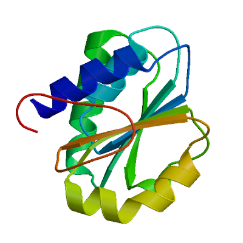 | PDB | ProMod Version 3.70. | MONOMER | None | 0.54 | -3.99 |
| 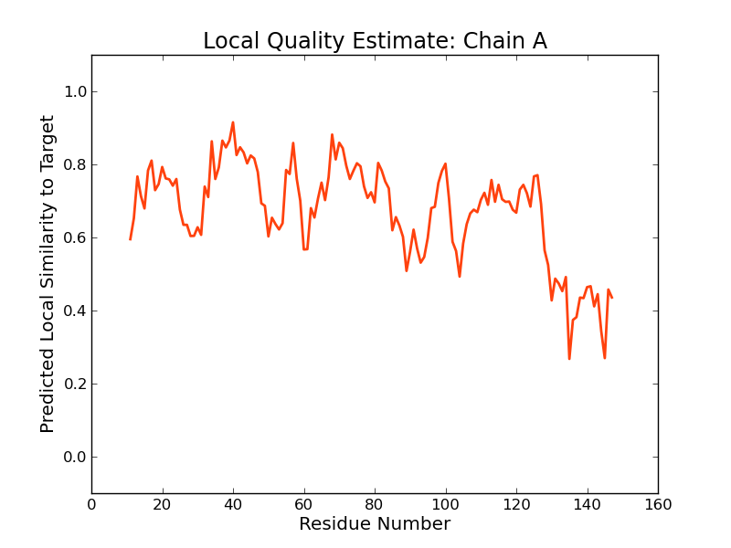 |
| Template | Seq Identity | Oligo-state | Found by | Method | Resolution | Seq Similarity | Range | Coverage | Description |
|---|---|---|---|---|---|---|---|---|---|
| 2nxe.2.A | 25.38 | monomer | HHblits | X-ray | 1.75Å | 0.32 | 11 - 147 | 0.81 | Ribosomal protein L11 methyltransferase |
| Ligand | Added to Model | Description |
|---|---|---|
| SAM | ✕ - Binding site not conserved. | S-ADENOSYLMETHIONINE |
Target MSYVPHVPYVPTPEKVVRRMLEIAKVSQDDIVYALGCGDGRIIITAAKDFNVKKAVGVEINDERIREALANIEKNGVTGR
2nxe.2.A ----------ETTRLALKALARH--LRPGDKVLDLGTGSGVLAIAAEKL-GG-KALGVDIDPMVLPQAEANAKRNGVR--
Target ASIVKGNFFEVD-ISEATVVTMFLLTNVNEMLKPKLEKELKPGTRVVSHEFE------------IRGWNPKEVIKVEDGN
2nxe.2.A PRFLEGSLEAALPFGPFDLLVANLYAELHAALAPRYREALVPGGRALLTGILKDRAPLVREAMAGAGFRPLEEAA-EGEW
Target MNHTVYLYVIGEHK
2nxe.2.A --------------
Model #06 | File | Built with | Oligo-State | Ligands | GMQE | QMEAN4 |
|---|---|---|---|---|---|---|
| 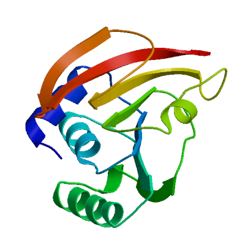 | PDB | ProMod Version 3.70. | MONOMER | None | 0.54 | -4.40 |
| 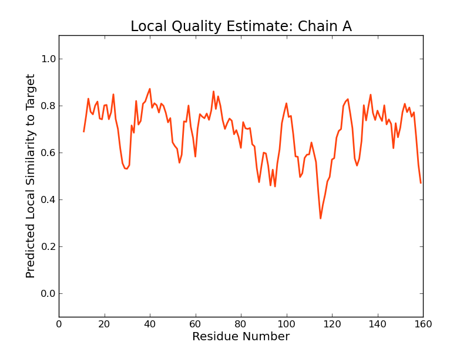 |
| Template | Seq Identity | Oligo-state | Found by | Method | Resolution | Seq Similarity | Range | Coverage | Description |
|---|---|---|---|---|---|---|---|---|---|
| 3v97.1.A | 14.19 | monomer | HHblits | X-ray | 2.20Å | 0.27 | 11 - 159 | 0.92 | Ribosomal RNA large subunit methyltransferase L |
| Ligand | Added to Model | Description |
|---|---|---|
| GOL | ✕ - Not biologically relevant. | GLYCEROL |
| GOL | ✕ - Not biologically relevant. | GLYCEROL |
| OSU | ✕ - Binding site not conserved. | N-OCTANOYLSUCROSE |
| SAH | ✕ - Clashing with protein. | S-ADENOSYL-L-HOMOCYSTEINE |
| SAH | ✕ - Clashing with protein. | S-ADENOSYL-L-HOMOCYSTEINE |
Target MSYVPHVPYVPTPEKVVRRMLEIAKVSQDDIVYALGCGDGRIIITAAKDFN-----------------------------
3v97.1.A ----------PIKETLAAAIVMRSGWQPGTPLLDPMCGSGTLLIEAAMLATDRAPGLHRGRWGFSGWAQHDEAIWQEVKA
Target -------------VKKAVGVEINDERIREALANIEKNGVTGRASIVKGNFFEVDIS----EATVVTMFL--L-----TN-
3v97.1.A EAQTRARKGLAEYSSHFYGSDSDARVIQRARTNARLAGIGELITFEVKDVAQLTNPLPKGPYGTVLSNPPYGERLDSEPA
Target ---VNEMLKPKLEKELKPGTRVVSHEFE-----IRGWNPKEVIKVEDGNMNHTVYLYVIGEHK
3v97.1.A LIALHSLLGR-IMKNQFGGWNLSLFSASPDLLSCLQLRADKQYKAKNGPLDCVQKNYHVAE--
Model #02 | File | Built with | Oligo-State | Ligands | GMQE | QMEAN4 |
|---|---|---|---|---|---|---|
| 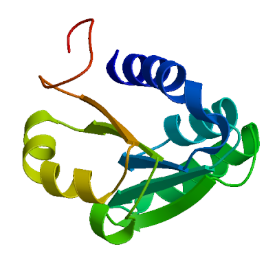 | PDB | ProMod Version 3.70. | MONOMER | None | 0.54 | -4.58 |
| 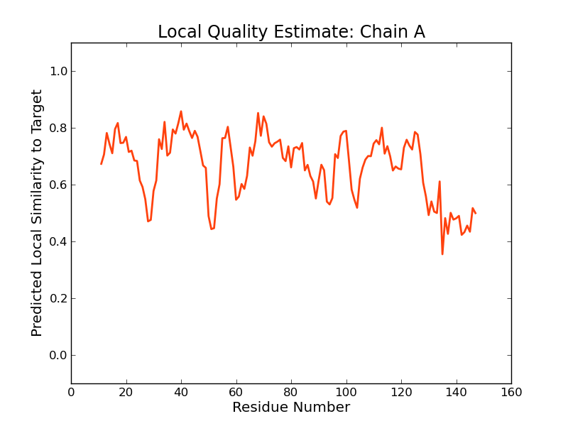 |
| Template | Seq Identity | Oligo-state | Found by | Method | Resolution | Seq Similarity | Range | Coverage | Description |
|---|---|---|---|---|---|---|---|---|---|
| 3cjt.1.A | 25.38 | hetero-oligomer | HHblits | X-ray | 2.30Å | 0.32 | 11 - 147 | 0.81 | Ribosomal protein L11 methyltransferase |
| Ligand | Added to Model | Description |
|---|---|---|
| 2MM | ✕ - Binding site not conserved. | N,N-DIMETHYL-L-METHIONINE |
| CL | ✕ - Not biologically relevant. | CHLORIDE ION |
| CL | ✕ - Not biologically relevant. | CHLORIDE ION |
| EDO | ✕ - Not biologically relevant. | 1,2-ETHANEDIOL |
| EDO | ✕ - Not biologically relevant. | 1,2-ETHANEDIOL |
| NO3 | ✕ - Not biologically relevant. | NITRATE ION |
| NO3 | ✕ - Not biologically relevant. | NITRATE ION |
| SAH | ✕ - Binding site not conserved. | S-ADENOSYL-L-HOMOCYSTEINE |
Target MSYVPHVPYVPTPEKVVRRMLEIAKVSQDDIVYALGCGDGRIIITAAKDFNVKKAVGVEINDERIREALANIEKNGVTGR
3cjt.1.A ----------ETTRLALKALARH--LRPGDKVLDLGTGSGVLAIAAEKL-GG-KALGVDIDPMVLPQAEANAKRNGVR--
Target ASIVKGNFFEVD-ISEATVVTMFLLTNVNEMLKPKLEKELKPGTRVVSHEFE------------IRGWNPKEVIKVEDGN
3cjt.1.A PRFLEGSLEAALPFGPFDLLVANLYAELHAALAPRYREALVPGGRALLTGILKDRAPLVREAMAGAGFRPLEEAA-EGEW
Target MNHTVYLYVIGEHK
3cjt.1.A --------------
Model #11 | File | Built with | Oligo-State | Ligands | GMQE | QMEAN4 |
|---|---|---|---|---|---|---|
| PDB | ProMod Version 3.70. | MONOMER | None | 0.54 | -4.58 |
|
| Template | Seq Identity | Oligo-state | Found by | Method | Resolution | Seq Similarity | Range | Coverage | Description |
|---|---|---|---|---|---|---|---|---|---|
| 3cjt.1.A | 25.38 | hetero-oligomer | HHblits | X-ray | 2.30Å | 0.32 | 11 - 147 | 0.81 | Ribosomal protein L11 methyltransferase |
| Ligand | Added to Model | Description |
|---|---|---|
| 2MM | ✕ - Binding site not conserved. | N,N-DIMETHYL-L-METHIONINE |
| CL | ✕ - Not biologically relevant. | CHLORIDE ION |
| CL | ✕ - Not biologically relevant. | CHLORIDE ION |
| EDO | ✕ - Not biologically relevant. | 1,2-ETHANEDIOL |
| EDO | ✕ - Not biologically relevant. | 1,2-ETHANEDIOL |
| NO3 | ✕ - Not biologically relevant. | NITRATE ION |
| NO3 | ✕ - Not biologically relevant. | NITRATE ION |
| SAH | ✕ - Binding site not conserved. | S-ADENOSYL-L-HOMOCYSTEINE |
Target MSYVPHVPYVPTPEKVVRRMLEIAKVSQDDIVYALGCGDGRIIITAAKDFNVKKAVGVEINDERIREALANIEKNGVTGR
3cjt.1.A ----------ETTRLALKALARH--LRPGDKVLDLGTGSGVLAIAAEKL-GG-KALGVDIDPMVLPQAEANAKRNGVR--
Target ASIVKGNFFEVD-ISEATVVTMFLLTNVNEMLKPKLEKELKPGTRVVSHEFE------------IRGWNPKEVIKVEDGN
3cjt.1.A PRFLEGSLEAALPFGPFDLLVANLYAELHAALAPRYREALVPGGRALLTGILKDRAPLVREAMAGAGFRPLEEAA-EGEW
Target MNHTVYLYVIGEHK
3cjt.1.A --------------
Model #01 | File | Built with | Oligo-State | Ligands | GMQE | QMEAN4 |
|---|---|---|---|---|---|---|
| 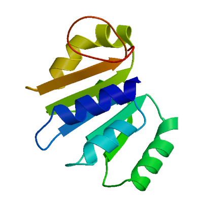 | PDB | ProMod Version 3.70. | MONOMER | None | 0.53 | -4.93 |
| 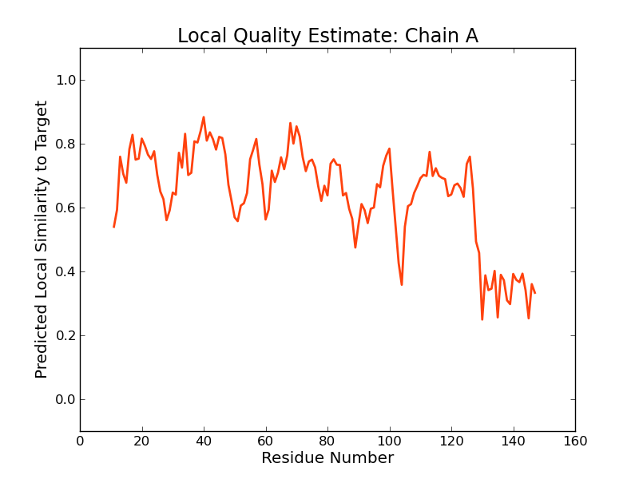 |
| Template | Seq Identity | Oligo-state | Found by | Method | Resolution | Seq Similarity | Range | Coverage | Description |
|---|---|---|---|---|---|---|---|---|---|
| 3cjt.2.A | 25.38 | hetero-oligomer | HHblits | X-ray | 2.30Å | 0.32 | 11 - 147 | 0.81 | Ribosomal protein L11 methyltransferase |
| Ligand | Added to Model | Description |
|---|---|---|
| SAM | ✕ - Binding site not conserved. | S-ADENOSYLMETHIONINE |
Target MSYVPHVPYVPTPEKVVRRMLEIAKVSQDDIVYALGCGDGRIIITAAKDFNVKKAVGVEINDERIREALANIEKNGVTGR
3cjt.2.A ----------ETTRLALKALARH--LRPGDKVLDLGTGSGVLAIAAEKL-GG-KALGVDIDPMVLPQAEANAKRNGVR--
Target ASIVKGNFFEVD-ISEATVVTMFLLTNVNEMLKPKLEKELKPGTRVVSHEFE------------IRGWNPKEVIKVEDGN
3cjt.2.A PRFLEGSLEAALPFGPFDLLVANLYAELHAALAPRYREALVPGGRALLTGILKDRAPLVREAMAGAGFRPLEEAA-EGEW
Target MNHTVYLYVIGEHK
3cjt.2.A --------------
Model #12 | File | Built with | Oligo-State | Ligands | GMQE | QMEAN4 |
|---|---|---|---|---|---|---|
| PDB | ProMod Version 3.70. | MONOMER | None | 0.53 | -4.93 |
|
| Template | Seq Identity | Oligo-state | Found by | Method | Resolution | Seq Similarity | Range | Coverage | Description |
|---|---|---|---|---|---|---|---|---|---|
| 3cjt.2.A | 25.38 | hetero-oligomer | HHblits | X-ray | 2.30Å | 0.32 | 11 - 147 | 0.81 | Ribosomal protein L11 methyltransferase |
| Ligand | Added to Model | Description |
|---|---|---|
| SAM | ✕ - Binding site not conserved. | S-ADENOSYLMETHIONINE |
Target MSYVPHVPYVPTPEKVVRRMLEIAKVSQDDIVYALGCGDGRIIITAAKDFNVKKAVGVEINDERIREALANIEKNGVTGR
3cjt.2.A ----------ETTRLALKALARH--LRPGDKVLDLGTGSGVLAIAAEKL-GG-KALGVDIDPMVLPQAEANAKRNGVR--
Target ASIVKGNFFEVD-ISEATVVTMFLLTNVNEMLKPKLEKELKPGTRVVSHEFE------------IRGWNPKEVIKVEDGN
3cjt.2.A PRFLEGSLEAALPFGPFDLLVANLYAELHAALAPRYREALVPGGRALLTGILKDRAPLVREAMAGAGFRPLEEAA-EGEW
Target MNHTVYLYVIGEHK
3cjt.2.A --------------
Model #08 | File | Built with | Oligo-State | Ligands | GMQE | QMEAN4 |
|---|---|---|---|---|---|---|
| 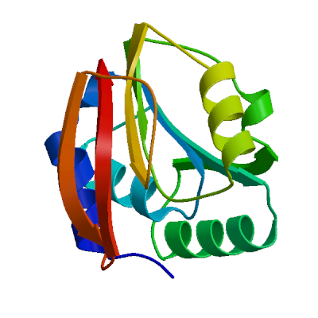 | PDB | ProMod Version 3.70. | MONOMER | None | 0.52 | -5.06 |
| 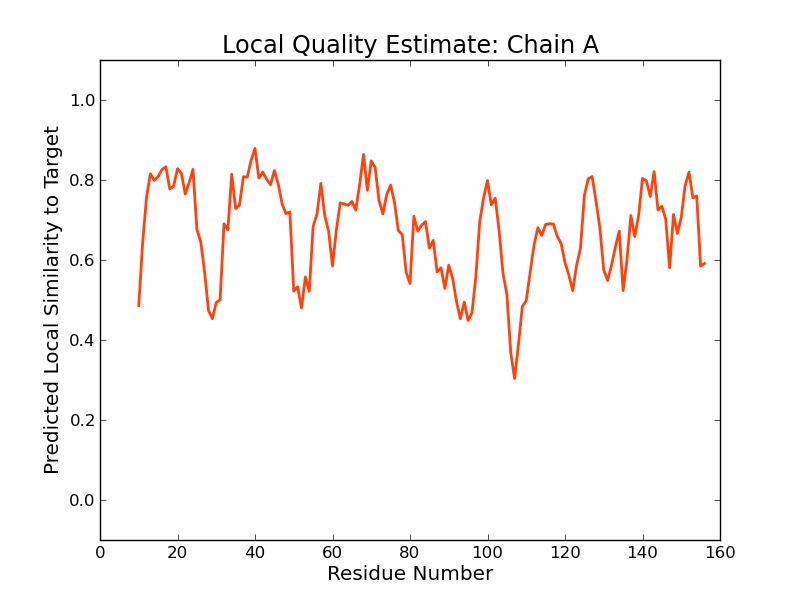 |  |
| Template | Seq Identity | Oligo-state | Found by | Method | Resolution | Seq Similarity | Range | Coverage | Description |
|---|---|---|---|---|---|---|---|---|---|
| 3ldg.1.A | 13.61 | monomer | HHblits | X-ray | 1.96Å | 0.27 | 10 - 156 | 0.91 | Putative uncharacterized protein SMU.472 |
| Ligand | Added to Model | Description |
|---|---|---|
| SAH | ✕ - Clashing with protein. | S-ADENOSYL-L-HOMOCYSTEINE |
Target MSYVPHVPYVPTPEKVVRRMLEIAKVSQDDIVYALGCGDGRIIITAAKDFNV----------------------------
3ldg.1.A ---------APIKENMAAAIILLSNWFPDKPFVDPTCGSGTFCIEAAMIGMNIAPGFNRDFAFEEWPWVDEALVTRVRNE
Target ----------KKAVGVEINDERIREALANIEKNGVTGRASIVKGNFFEVDIS-EATVVTMFL-----LT--NVNEMLKPK
3ldg.1.A ADEQADYDIQLDISGFDFDGRMVEIARKNAREVGLEDVVKLKQMRLQDFKTNKINGVLISNPPYGERLLDDKAVDILYNE
Target LEKEL--KPGTRVVSHEFEI-----RGWNPKEVIKVEDGNMNHTVYLYVIGEHK
3ldg.1.A MGETFAPLKTWSQFILTNDTDFEQKFGRKADKKRKLYNGSLKVDLYQFY-----
Model #05 | File | Built with | Oligo-State | Ligands | GMQE | QMEAN4 |
|---|---|---|---|---|---|---|
 | PDB | ProMod Version 3.70. | MONOMER | None | 0.54 | -5.36 |
| 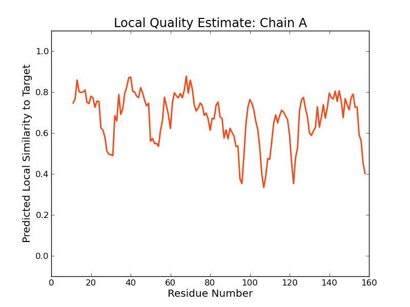 |
| Template | Seq Identity | Oligo-state | Found by | Method | Resolution | Seq Similarity | Range | Coverage | Description |
|---|---|---|---|---|---|---|---|---|---|
| 3ldu.1.A | 18.92 | monomer | HHblits | X-ray | 1.70Å | 0.28 | 11 - 158 | 0.92 | Putative methylase |
| Ligand | Added to Model | Description |
|---|---|---|
| FMT | ✕ - Not biologically relevant. | FORMIC ACID |
| FMT | ✕ - Not biologically relevant. | FORMIC ACID |
| GOL | ✕ - Not biologically relevant. | GLYCEROL |
| GOL | ✕ - Not biologically relevant. | GLYCEROL |
| GOL | ✕ - Not biologically relevant. | GLYCEROL |
| GOL | ✕ - Not biologically relevant. | GLYCEROL |
| GOL | ✕ - Not biologically relevant. | GLYCEROL |
| GOL | ✕ - Not biologically relevant. | GLYCEROL |
| GOL | ✕ - Not biologically relevant. | GLYCEROL |
| GOL | ✕ - Not biologically relevant. | GLYCEROL |
| GOL | ✕ - Not biologically relevant. | GLYCEROL |
| GTP | ✕ - Clashing with protein. | GUANOSINE-5'-TRIPHOSPHATE |
Target MSYVPHVPYVPTPEKVVRRMLEIAKVSQDDIVYALGCGDGRIIITAAKDFNV----------------------------
3ldu.1.A ----------PIRETLAAGLIYLTPWKAGRVLVDPMCGSGTILIEAAMIGINMAPGLNREFISEKWRTLDKKIWWDVRKD
Target ----------KKAVGVEINDERIREALANIEKNGVTGRASIVKGNFFEVDIS-EATVVTMFL-----LT--NVNEMLKPK
3ldu.1.A AFNKIDNESKFKIYGYDIDEESIDIARENAEIAGVDEYIEFNVGDATQFKSEDEFGFIITNPPYGERLEDKDSVKQLYKE
Target LEKEL--KPGTRVVSHEFE-----IRGWNPKEVIKVEDGNMNHTVYLYVIGEHK
3ldu.1.A LGYAFRKLKNWSYYLITSYEDFEYEFGQKADKKRKLYNGMLKTNFFQYPGP---
Model #07 | File | Built with | Oligo-State | Ligands | GMQE | QMEAN4 |
|---|---|---|---|---|---|---|
| 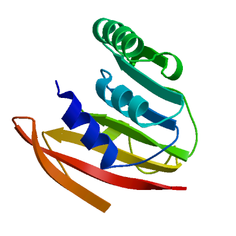 | PDB | ProMod Version 3.70. | MONOMER | None | 0.53 | -5.55 |
| 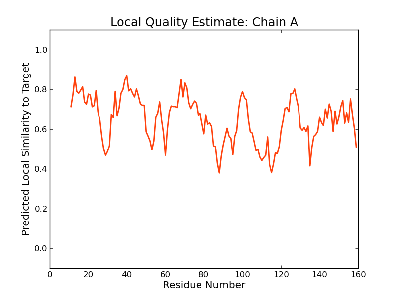 |
| Template | Seq Identity | Oligo-state | Found by | Method | Resolution | Seq Similarity | Range | Coverage | Description |
|---|---|---|---|---|---|---|---|---|---|
| 3v97.2.A | 14.19 | monomer | HHblits | X-ray | 2.20Å | 0.27 | 11 - 159 | 0.92 | Ribosomal RNA large subunit methyltransferase L |
| Ligand | Added to Model | Description |
|---|---|---|
| GOL | ✕ - Not biologically relevant. | GLYCEROL |
| GOL | ✕ - Not biologically relevant. | GLYCEROL |
| OSU | ✕ - Binding site not conserved. | N-OCTANOYLSUCROSE |
| SAH | ✕ - Clashing with protein. | S-ADENOSYL-L-HOMOCYSTEINE |
| SAH | ✕ - Clashing with protein. | S-ADENOSYL-L-HOMOCYSTEINE |
Target MSYVPHVPYVPTPEKVVRRMLEIAKVSQDDIVYALGCGDGRIIITAAKDFN-----------------------------
3v97.2.A ----------PIKETLAAAIVMRSGWQPGTPLLDPMCGSGTLLIEAAMLATDRAPGLHRGRWGFSGWAQHDEAIWQEVKA
Target -------------VKKAVGVEINDERIREALANIEKNGVTGRASIVKGNFFEVDIS----EATVVTMFL--L-----TN-
3v97.2.A EAQTRARKGLAEYSSHFYGSDSDARVIQRARTNARLAGIGELITFEVKDVAQLTNPLPKGPYGTVLSNPPYGERLDSEPA
Target ---VNEMLKPKLEKELKPGTRVVSHEFE-----IRGWNPKEVIKVEDGNMNHTVYLYVIGEHK
3v97.2.A LIALHSLLGR-IMKNQFGGWNLSLFSASPDLLSCLQLRADKQYKAKNGPLDCVQKNYHVAE--
Model #13 | File | Built with | Oligo-State | Ligands | GMQE | QMEAN4 |
|---|---|---|---|---|---|---|
| 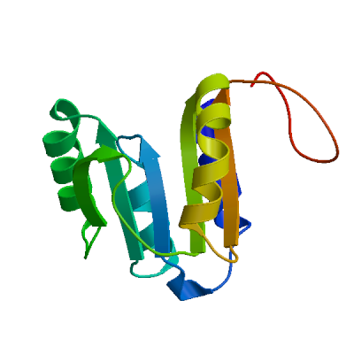 | PDB | ProMod Version 3.70. | MONOMER | None | 0.53 | -5.81 |
| 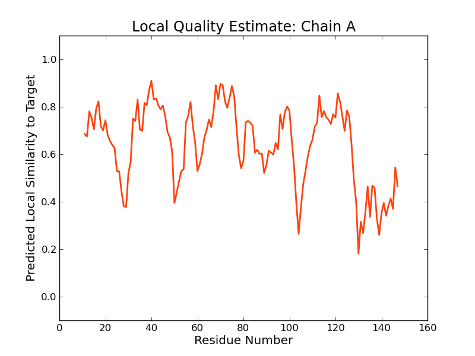 |
| Template | Seq Identity | Oligo-state | Found by | Method | Resolution | Seq Similarity | Range | Coverage | Description |
|---|---|---|---|---|---|---|---|---|---|
| 3cjq.1.A | 25.38 | hetero-oligomer | HHblits | X-ray | 2.70Å | 0.32 | 11 - 147 | 0.81 | Ribosomal protein L11 methyltransferase |
| Ligand | Added to Model | Description |
|---|---|---|
| 2MM | ✕ - Binding site not conserved. | N,N-DIMETHYL-L-METHIONINE |
| IOD | ✕ - Not biologically relevant. | IODIDE ION |
| SAH | ✕ - Binding site not conserved. | S-ADENOSYL-L-HOMOCYSTEINE |
Target MSYVPHVPYVPTPEKVVRRMLEIAKVSQDDIVYALGCGDGRIIITAAKDFNVKKAVGVEINDERIREALANIEKNGVTGR
3cjq.1.A ----------ETTRLALKALARH--LRPGDKVLDLGTGSGVLAIAAEKL-GG-KALGVDIDPMVLPQAEANAKRNGVR--
Target ASIVKGNFFEVD-ISEATVVTMFLLTNVNEMLKPKLEKELKPGTRVVSHEFE------------IRGWNPKEVIKVEDGN
3cjq.1.A PRFLEGSLEAALPFGPFDLLVANLYAELHAALAPRYREALVPGGRALLTGILKDRAPLVREAMAGAGFRPLEEAA-EGEW
Target MNHTVYLYVIGEHK
3cjq.1.A --------------
Model #10 | File | Built with | Oligo-State | Ligands | GMQE | QMEAN4 |
|---|---|---|---|---|---|---|
| 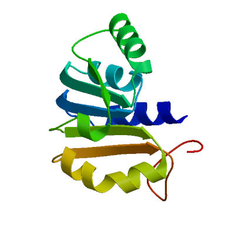 | PDB | ProMod Version 3.70. | MONOMER | None | 0.52 | -6.27 |
| 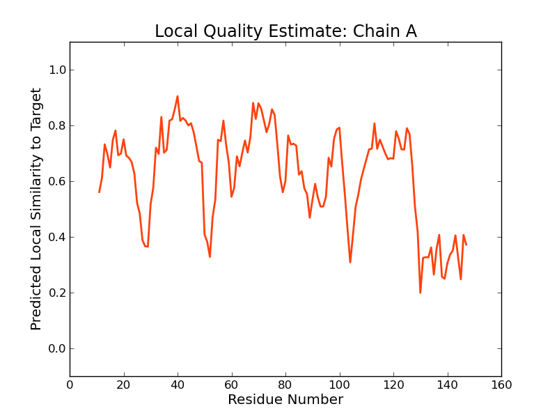 | 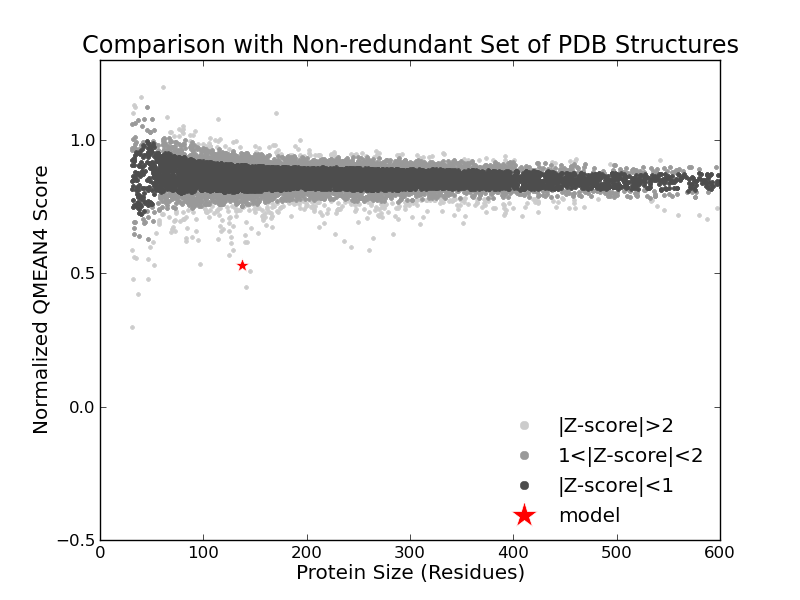 |
| Template | Seq Identity | Oligo-state | Found by | Method | Resolution | Seq Similarity | Range | Coverage | Description |
|---|---|---|---|---|---|---|---|---|---|
| 2nxe.1.A | 25.38 | monomer | HHblits | X-ray | 1.75Å | 0.32 | 11 - 147 | 0.81 | Ribosomal protein L11 methyltransferase |
| Ligand | Added to Model | Description |
|---|---|---|
| SAM | ✕ - Binding site not conserved. | S-ADENOSYLMETHIONINE |
Target MSYVPHVPYVPTPEKVVRRMLEIAKVSQDDIVYALGCGDGRIIITAAKDFNVKKAVGVEINDERIREALANIEKNGVTGR
2nxe.1.A ----------ETTRLALKALARH--LRPGDKVLDLGTGSGVLAIAAEKL-GG-KALGVDIDPMVLPQAEANAKRNGVR--
Target ASIVKGNFFEVD-ISEATVVTMFLLTNVNEMLKPKLEKELKPGTRVVSHEFE------------IRGWNPKEVIKVEDGN
2nxe.1.A PRFLEGSLEAALPFGPFDLLVANLYAELHAALAPRYREALVPGGRALLTGILKDRAPLVREAMAGAGFRPLEEAA-EGEW
Target MNHTVYLYVIGEHK
2nxe.1.A --------------
Model #03 | File | Built with | Oligo-State | Ligands | GMQE | QMEAN4 |
|---|---|---|---|---|---|---|
 | PDB | ProMod Version 3.70. | MONOMER | None | 0.52 | -6.45 |
| 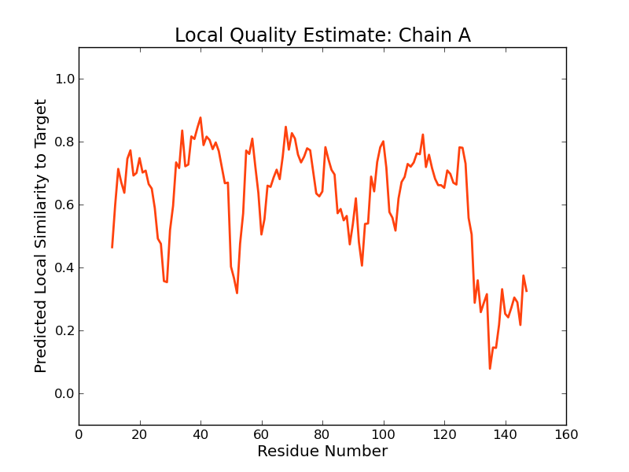 |
| Template | Seq Identity | Oligo-state | Found by | Method | Resolution | Seq Similarity | Range | Coverage | Description |
|---|---|---|---|---|---|---|---|---|---|
| 2zbp.1.A | 25.38 | monomer | HHblits | X-ray | 2.30Å | 0.32 | 11 - 147 | 0.81 | Ribosomal protein L11 methyltransferase |
| Ligand | Added to Model | Description |
|---|---|---|
| SAM | ✕ - Binding site not conserved. | S-ADENOSYLMETHIONINE |
Target MSYVPHVPYVPTPEKVVRRMLEIAKVSQDDIVYALGCGDGRIIITAAKDFNVKKAVGVEINDERIREALANIEKNGVTGR
2zbp.1.A ----------ETTRLALKALARH--LRPGDKVLDLGTGSGVLAIAAEKL-GG-KALGVDIDPMVLPQAEANAKRNGVR--
Target ASIVKGNFFEVD-ISEATVVTMFLLTNVNEMLKPKLEKELKPGTRVVSHEFE------------IRGWNPKEVIKVEDGN
2zbp.1.A PRFLEGSLEAALPFGPFDLLVANLYAELHAALAPRYREALVPGGRALLTGILKDRAPLVREAMAGAGFRPLEEAA-EGEW
Target MNHTVYLYVIGEHK
2zbp.1.A --------------
Model #04 | File | Built with | Oligo-State | Ligands | GMQE | QMEAN4 |
|---|---|---|---|---|---|---|
| 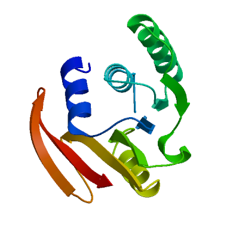 | PDB | ProMod Version 3.70. | MONOMER | None | 0.52 | -7.32 |
| 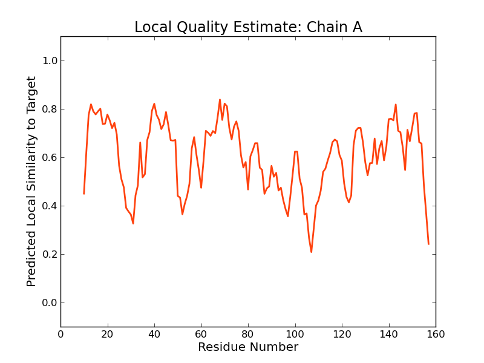 | 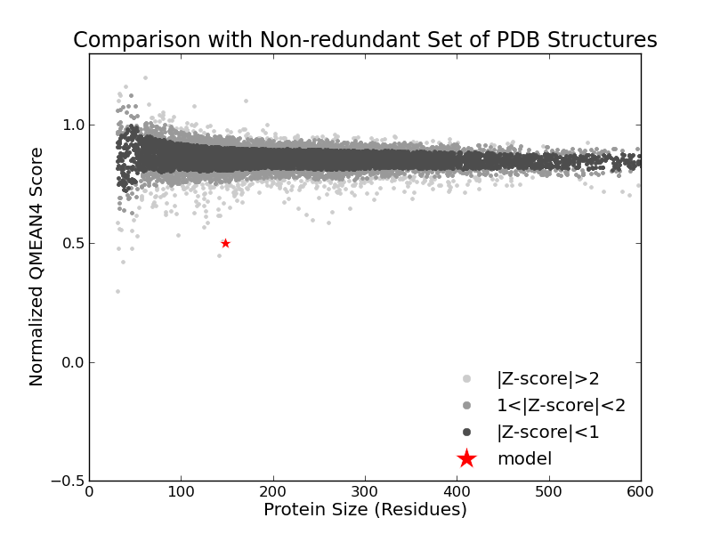 |
| Template | Seq Identity | Oligo-state | Found by | Method | Resolution | Seq Similarity | Range | Coverage | Description |
|---|---|---|---|---|---|---|---|---|---|
| 3k0b.1.A | 19.59 | monomer | HHblits | X-ray | 1.50Å | 0.28 | 10 - 157 | 0.92 | predicted N6-adenine-specific DNA methylase |
| Ligand | Added to Model | Description |
|---|---|---|
| EDO | ✕ - Not biologically relevant. | 1,2-ETHANEDIOL |
| GOL | ✕ - Not biologically relevant. | GLYCEROL |
Target MSYVPHVPYVPTPEKVVRRMLEIAKVSQDDIVYALGCGDGRIIITAAKDFN-----------------------------
3k0b.1.A ---------APIKETMAAALVLLTSWHPDRPFYDPVCGSGTIPIEAALIGQNIAPGFNREFVSETWDWMPKQVWADARQE
Target ---------VKKAVGVEINDERIREALANIEKNGVTGRASIVKGNFFEVDIS-EATVVTMFL-----LT--NVNEMLKPK
3k0b.1.A AEDLANYDQPLNIIGGDIDARLIEIAKQNAVEAGLGDLITFRQLQVADFQTEDEYGVVVANPPYGERLEDEEAVRQLYRE
Target LEKEL--KPGTRVVSHEFE-----IRGWNPKEVIKVEDGNMNHTVYLYVIGEHK
3k0b.1.A MGIVYKRMPTWSVYVLTSYELFEEVYGKKATKKRKLYNGYLRTDLYQYWG----
Materials and Methods
Template Search
Template search with Blast and HHBlits has been performed against the SWISS-MODEL template library (SMTL, last update: 2014-09-24, last included PDB release: 2014-09-19).
The target sequence was searched with BLAST (Altschul et al., 1997) against the primary amino acid sequence contained in the SMTL. A total of 90 templates were found.
An initial HHblits profile has been built using the procedure outlined in (Remmert, et al., 2011), followed by 1 iteration of HHblits against NR20. The obtained profile has then be searched against all profiles of the SMTL. A total of 994 templates were found.
Template Selection
For each identified template, the template's quality has been predicted from features of the target-template alignment. The templates with the highest quality have then been selected for model building.
Model Building
Models are built based on the target-template alignment using Promod-II. Coordinates which are conserved between the target and the template are copied from the template to the model. Insertions and deletions are remodeled using a fragment library. Side chains are then rebuilt. Finally, the geometry of the resulting model is regularized by using a force field. In case loop modelling with ProMod-II (Guex, et al., 1997) does not give satisfactory results, an alternative model is built with MODELLER (Sali, et al., 1993).
Model Quality Estimation
The global and per-residue model quality has been assessed using the QMEAN scoring function (Benkert, et al., 2011) . For improved performance, weights of the individual QMEAN terms have been trained specifically for SWISS-MODEL.
Ligand Modeling
Ligands present in the template structure are transferred by homology to the model when the following criteria are met (Gallo -Casserino, to be published): (a) The ligands are annotated as biologically relevant in the template library, (b) the ligand is in contact with the model, (c) the ligand is not clashing with the protein, (d) the residues in contact with the ligand are conserved between the target and the template. If any of these four criteria is not satisfied, a certain ligand will not be included in the model. The model summary includes information on why and which ligand has not been included.
Oligomeric State Conservation
Homo-oligomeric structure of the target protein is predicted based on the analysis of pairwise interfaces of the identified template structures. For each relevant interface between polypetide chains (interfaces with more than 10 residue-residue interactions), the QscoreOligomer (Mariani et al., 2011) is predicted from features such as similarity to target and frequency of observing this interface in the identified templates (Kiefer, Bertoni, Biasini, to be published). The prediction is performed with a random forest regressor using these features as input parameters to predict the probability of conservation for each interface. The QscoreOligomer of the whole complex is then calculated as the weight-averaged QscoreOligomer of the interfaces. The oligomeric state of the target is predicted to be the same as in the template when QscoreOligomer is predicted to be higher or equal to 0.5.
References
Altschul, S.F., Madden, T.L., Schaffer, A.A., Zhang, J., Zhang, Z., Miller, W. and Lipman, D.J. (1997) Gapped BLAST and PSI-BLAST: a new generation of protein database search programs. Nucleic Acids Res, 25, 3389-3402.
Remmert, M., Biegert, A., Hauser, A. and Soding, J. (2012) HHblits: lightning-fast iterative protein sequence searching by HMM-HMM alignment. Nat Methods, 9, 173-175.
Guex, N. and Peitsch, M.C. (1997) SWISS-MODEL and the Swiss-PdbViewer: an environment for comparative protein modeling. Electrophoresis, 18, 2714-2723.
Sali, A. and Blundell, T.L. (1993) Comparative protein modelling by satisfaction of spatial restraints. J Mol Biol, 234, 779-815.
Benkert, P., Biasini, M. and Schwede, T. (2011) Toward the estimation of the absolute quality of individual protein structure models. Bioinformatics, 27, 343-350.
Mariani, V., Kiefer, F., Schmidt, T., Haas, J. and Schwede, T. (2011) Assessment of template based protein structure predictions in CASP9. Proteins, 79 Suppl 10, 37-58.
Table T1:
Primary amino acid sequence for which templates were searched and models were built.
MFLLTNVNEMLKPKLEKELKPGTRVVSHEFEIRGWNPKEVIKVEDGNMNHTVYLYVIGEHK
Table T2:
| Template | Seq Identity | Oligo-state | Found by | Method | Resolution | Seq Similarity | Coverage | Description |
|---|---|---|---|---|---|---|---|---|
| 3k0b.1.A | 19.59 | monomer | HHblits | X-ray | 1.50Å | 0.28 | 0.92 | predicted N6-adenine-specific DNA methylase |
| 3ldu.1.A | 18.92 | monomer | HHblits | X-ray | 1.70Å | 0.28 | 0.92 | Putative methylase |
| 3v97.2.A | 14.19 | monomer | HHblits | X-ray | 2.20Å | 0.27 | 0.92 | Ribosomal RNA large subunit methyltransferase L |
| 3v97.1.A | 14.19 | monomer | HHblits | X-ray | 2.20Å | 0.27 | 0.92 | Ribosomal RNA large subunit methyltransferase L |
| 3ldg.1.A | 13.61 | monomer | HHblits | X-ray | 1.96Å | 0.27 | 0.91 | Putative uncharacterized protein SMU.472 |
| 3v8v.2.A | 13.61 | monomer | HHblits | X-ray | 2.60Å | 0.27 | 0.91 | Ribosomal RNA large subunit methyltransferase L |
| 3v8v.1.A | 13.61 | monomer | HHblits | X-ray | 2.60Å | 0.27 | 0.91 | Ribosomal RNA large subunit methyltransferase L |
| 3tlj.1.A | 18.18 | monomer | HHblits | X-ray | 2.20Å | 0.28 | 0.89 | tRNA (guanine N2-)-methyltransferase Trm14 |
| 2fhp.1.A | 15.07 | monomer | HHblits | X-ray | 1.60Å | 0.26 | 0.91 | methylase, putative |
| 2fhp.2.A | 15.07 | monomer | HHblits | X-ray | 1.60Å | 0.26 | 0.91 | methylase, putative |
| 2fpo.3.A | 15.07 | monomer | HHblits | X-ray | 2.05Å | 0.26 | 0.91 | methylase yhhF |
| 2fpo.2.A | 15.07 | monomer | HHblits | X-ray | 2.05Å | 0.26 | 0.91 | methylase yhhF |
| 2fpo.1.A | 15.07 | monomer | HHblits | X-ray | 2.05Å | 0.26 | 0.91 | methylase yhhF |
| 1ws6.1.A | 16.55 | monomer | HHblits | X-ray | 2.50Å | 0.27 | 0.86 | methyltransferase |
| 2nxn.1.A | 25.38 | hetero-oligomer | HHblits | X-ray | 2.40Å | 0.32 | 0.81 | Ribosomal protein L11 methyltransferase |
| 2nxj.2.A | 25.38 | monomer | HHblits | X-ray | 2.30Å | 0.32 | 0.81 | Ribosomal protein L11 methyltransferase |
| 2nxj.1.A | 25.38 | monomer | HHblits | X-ray | 2.30Å | 0.32 | 0.81 | Ribosomal protein L11 methyltransferase |
| 2nxe.2.A | 25.38 | monomer | HHblits | X-ray | 1.75Å | 0.32 | 0.81 | Ribosomal protein L11 methyltransferase |
| 2nxe.1.A | 25.38 | monomer | HHblits | X-ray | 1.75Å | 0.32 | 0.81 | Ribosomal protein L11 methyltransferase |
| 3cjq.1.A | 25.38 | hetero-oligomer | HHblits | X-ray | 2.70Å | 0.32 | 0.81 | Ribosomal protein L11 methyltransferase |
| 3egv.1.A | 25.38 | hetero-oligomer | HHblits | X-ray | 1.75Å | 0.32 | 0.81 | Ribosomal protein L11 methyltransferase |
| 3cjr.1.A | 25.38 | hetero-oligomer | HHblits | X-ray | 2.05Å | 0.32 | 0.81 | Ribosomal protein L11 methyltransferase |
| 2zbp.1.A | 25.38 | monomer | HHblits | X-ray | 2.30Å | 0.32 | 0.81 | Ribosomal protein L11 methyltransferase |
| 3cjt.2.A | 25.38 | hetero-oligomer | HHblits | X-ray | 2.30Å | 0.32 | 0.81 | Ribosomal protein L11 methyltransferase |
| 3cjt.1.A | 25.38 | hetero-oligomer | HHblits | X-ray | 2.30Å | 0.32 | 0.81 | Ribosomal protein L11 methyltransferase |
| 2pbf.1.A | 13.14 | monomer | HHblits | X-ray | 2.00Å | 0.27 | 0.85 | Protein-L-isoaspartate O-methyltransferase beta-aspartate methyltransferase |
| 4er7.1.A | 25.00 | monomer | HHblits | X-ray | 2.20Å | 0.32 | 0.77 | Histone-lysine N-methyltransferase, H3 lysine-79 specific |
| 3sx0.1.A | 25.00 | monomer | HHblits | X-ray | 2.28Å | 0.32 | 0.77 | Histone-lysine N-methyltransferase, H3 lysine-79 specific |
| 3sr4.1.A | 25.00 | monomer | HHblits | X-ray | 2.50Å | 0.32 | 0.77 | Histone-lysine N-methyltransferase, H3 lysine-79 specific |
| 3uwp.1.A | 25.00 | monomer | HHblits | X-ray | 2.05Å | 0.32 | 0.77 | Histone-lysine N-methyltransferase, H3 lysine-79 specific |
| 4er5.1.A | 25.00 | monomer | HHblits | X-ray | 2.57Å | 0.32 | 0.77 | Histone-lysine N-methyltransferase, H3 lysine-79 specific |
| 4er6.1.A | 25.00 | monomer | HHblits | X-ray | 2.30Å | 0.32 | 0.77 | Histone-lysine N-methyltransferase, H3 lysine-79 specific |
| 1nw3.1.A | 25.00 | monomer | HHblits | X-ray | 2.50Å | 0.32 | 0.77 | histone methyltransferase DOT1L |
| 4ekg.1.A | 25.00 | monomer | HHblits | X-ray | 2.80Å | 0.32 | 0.77 | Histone-lysine N-methyltransferase, H3 lysine-79 specific |
| 4ek9.1.A | 25.00 | monomer | HHblits | X-ray | 2.50Å | 0.32 | 0.77 | Histone-lysine N-methyltransferase, H3 lysine-79 specific |
| 4hra.1.A | 25.00 | monomer | HHblits | X-ray | 3.15Å | 0.32 | 0.77 | Histone-lysine N-methyltransferase, H3 lysine-79 specific |
| 4er3.1.A | 25.00 | monomer | HHblits | X-ray | 2.40Å | 0.32 | 0.77 | Histone-lysine N-methyltransferase, H3 lysine-79 specific |
| 3iht.1.A | 17.97 | homo-dimer | HHblits | X-ray | 1.80Å | 0.29 | 0.80 | S-adenosyl-L-methionine methyl transferase |
| 3iht.1.B | 17.97 | homo-dimer | HHblits | X-ray | 1.80Å | 0.29 | 0.80 | S-adenosyl-L-methionine methyl transferase |
| 3qow.1.A | 24.39 | monomer | HHblits | X-ray | 2.10Å | 0.32 | 0.76 | Histone-lysine N-methyltransferase |
| 3qox.1.A | 24.39 | monomer | HHblits | X-ray | 2.30Å | 0.32 | 0.76 | Histone-lysine N-methyltransferase |
| 1u2z.3.A | 18.03 | monomer | HHblits | X-ray | 2.20Å | 0.30 | 0.76 | Histone-lysine N-methyltransferase, H3 lysine-79 specific |
| 1u2z.1.A | 18.03 | monomer | HHblits | X-ray | 2.20Å | 0.30 | 0.76 | Histone-lysine N-methyltransferase, H3 lysine-79 specific |
| 3tfw.1.A | 13.39 | homo-dimer | HHblits | X-ray | 1.88Å | 0.27 | 0.79 | Putative O-methyltransferase |
| 3sm3.1.A | 21.67 | homo-dimer | HHblits | X-ray | 2.20Å | 0.32 | 0.75 | SAM-dependent methyltransferases |
| 3bus.2.A | 18.33 | monomer | HHblits | X-ray | 2.65Å | 0.32 | 0.75 | Methyltransferase |
| 3bus.1.A | 18.33 | monomer | HHblits | X-ray | 2.65Å | 0.32 | 0.75 | Methyltransferase |
| 3mer.1.A | 19.83 | monomer | HHblits | X-ray | 2.20Å | 0.30 | 0.75 | Slr1183 protein |
| 2kw5.1.A | 19.83 | monomer | HHblits | NMR | NA | 0.30 | 0.75 | Slr1183 protein |
| 3jwi.1.A | 20.00 | monomer | HHblits | X-ray | 2.20Å | 0.31 | 0.75 | Methyltransferase type 12 |
| 3jwi.2.A | 20.00 | monomer | HHblits | X-ray | 2.20Å | 0.31 | 0.75 | Methyltransferase type 12 |
| 2gpy.1.A | 15.45 | homo-dimer | HHblits | X-ray | 1.90Å | 0.29 | 0.76 | O-methyltransferase |
| 2gpy.1.B | 15.45 | homo-dimer | HHblits | X-ray | 1.90Å | 0.29 | 0.76 | O-methyltransferase |
| 2hnk.1.A | 16.13 | homo-dimer | HHblits | X-ray | 2.30Å | 0.28 | 0.77 | SAM-dependent O-methyltransferase |
| 1vl5.1.A | 19.33 | monomer | HHblits | X-ray | 1.95Å | 0.31 | 0.74 | unknown conserved protein BH2331 |
| 3fpf.1.B | 14.75 | homo-dimer | HHblits | X-ray | 1.66Å | 0.29 | 0.76 | Putative uncharacterized protein |
| 3fpf.1.A | 14.75 | homo-dimer | HHblits | X-ray | 1.66Å | 0.29 | 0.76 | Putative uncharacterized protein |
| 3o31.1.A | 14.75 | homo-dimer | HHblits | X-ray | 1.70Å | 0.29 | 0.76 | ThermoNicotianamine Synthase |
| 3o31.1.B | 14.75 | homo-dimer | HHblits | X-ray | 1.70Å | 0.29 | 0.76 | ThermoNicotianamine Synthase |
| 3tr6.1.A | 12.80 | homo-dimer | HHblits | X-ray | 2.70Å | 0.27 | 0.78 | O-methyltransferase |
| 1dus.1.A | 21.67 | monomer | HHblits | X-ray | 1.80Å | 0.30 | 0.75 | MJ0882 |
| 4o29.1.A | 19.83 | monomer | HHblits | X-ray | 2.90Å | 0.29 | 0.75 | Protein-L-isoaspartate O-methyltransferase |
| 3kkz.1.A | 17.50 | monomer | HHblits | X-ray | 1.68Å | 0.30 | 0.75 | uncharacterized protein Q5LES9 |
| 1l3b.2.C | 19.83 | homo-tetramer | HHblits | X-ray | 2.65Å | 0.32 | 0.72 | Precorrin-6y methyltransferase/putative decarboxylase |
| 1f38.1.A | 19.83 | homo-tetramer | HHblits | X-ray | 2.40Å | 0.32 | 0.72 | PRECORRIN-8W DECARBOXYLASE |
| 1l3i.1.A | 19.83 | homo-tetramer | HHblits | X-ray | 1.95Å | 0.32 | 0.72 | Precorrin-6y methyltransferase/putative decarboxylase |
| 2ift.1.A | 15.45 | monomer | HHblits | X-ray | 2.30Å | 0.27 | 0.76 | Putative methylase HI0767 |
| 3t7s.1.A | 18.49 | monomer | HHblits | X-ray | 2.20Å | 0.30 | 0.74 | Putative methyltransferase |
| 3t7s.2.A | 18.49 | monomer | HHblits | X-ray | 2.20Å | 0.30 | 0.74 | Putative methyltransferase |
| 3r3h.1.A | 8.59 | homo-dimer | HHblits | X-ray | 2.65Å | 0.24 | 0.80 | O-methyltransferase, SAM-dependent |
| 2y7h.1.B | 20.17 | hetero-oligomer | HHblits | EM | 18.00Å | 0.30 | 0.74 | TYPE I RESTRICTION ENZYME ECOKI M PROTEIN |
| 2y7c.1.B | 20.17 | hetero-oligomer | HHblits | EM | 18.00Å | 0.30 | 0.74 | TYPE I RESTRICTION ENZYME ECOKI M PROTEIN |
| 2ar0.1.A | 20.17 | monomer | HHblits | X-ray | 2.80Å | 0.30 | 0.74 | Type I restriction enzyme EcoKI M protein |
| 3f4k.1.A | 16.67 | homo-dimer | HHblits | X-ray | 2.30Å | 0.29 | 0.75 | Putative methyltransferase |
| 3e7p.1.A | 18.49 | homo-dimer | HHblits | X-ray | 1.90Å | 0.30 | 0.74 | Putative methyltransferase |
| 3dtn.1.A | 14.88 | homo-dimer | HHblits | X-ray | 2.09Å | 0.28 | 0.75 | Putative Methyltransferase MM_2633 |
| 3jwg.1.A | 19.49 | monomer | HHblits | X-ray | 1.90Å | 0.30 | 0.73 | Methyltransferase type 12 |
| 3ntv.1.A | 12.20 | homo-dimer | HHblits | X-ray | 1.55Å | 0.27 | 0.76 | MW1564 protein |
| 3ntv.1.B | 12.20 | homo-dimer | HHblits | X-ray | 1.55Å | 0.27 | 0.76 | MW1564 protein |
| 1kr5.1.A | 19.49 | monomer | HHblits | X-ray | 2.10Å | 0.30 | 0.73 | Protein-L-isoaspartate O-methyltransferase |
| 3egi.1.A | 20.34 | homo-tetramer | HHblits | X-ray | 2.21Å | 0.30 | 0.73 | Trimethylguanosine synthase homolog |
| 3egi.1.C | 20.34 | homo-tetramer | HHblits | X-ray | 2.21Å | 0.30 | 0.73 | Trimethylguanosine synthase homolog |
| 3fph.1.B | 14.88 | homo-dimer | HHblits | X-ray | 1.80Å | 0.28 | 0.75 | Putative uncharacterized protein |
| 3fph.1.A | 14.88 | homo-dimer | HHblits | X-ray | 1.80Å | 0.28 | 0.75 | Putative uncharacterized protein |
| 3fpg.1.A | 14.88 | homo-dimer | HHblits | X-ray | 2.00Å | 0.28 | 0.75 | Putative uncharacterized protein |
| 3fpj.1.B | 14.88 | homo-dimer | HHblits | X-ray | 1.80Å | 0.28 | 0.75 | Putative uncharacterized protein |
| 3p9n.1.A | 20.83 | monomer | HHblits | X-ray | 1.90Å | 0.29 | 0.75 | POSSIBLE METHYLTRANSFERASE (METHYLASE) |
| 3gdh.2.A | 19.49 | monomer | HHblits | X-ray | 2.00Å | 0.30 | 0.73 | Trimethylguanosine synthase homolog |
| 3gdh.1.A | 19.49 | monomer | HHblits | X-ray | 2.00Å | 0.30 | 0.73 | Trimethylguanosine synthase homolog |
| 3sxj.1.A | 16.81 | monomer | HHblits | X-ray | 2.50Å | 0.29 | 0.74 | Putative methyltransferase |
| 3svz.1.A | 16.81 | monomer | HHblits | X-ray | 2.90Å | 0.29 | 0.74 | Putative methyltransferase |
| 3jwj.2.A | 17.65 | monomer | HHblits | X-ray | 2.50Å | 0.29 | 0.74 | Hen1 |
| 3jwj.1.A | 17.65 | monomer | HHblits | X-ray | 2.50Å | 0.29 | 0.74 | Hen1 |
| 3cvo.1.A | 13.82 | homo-dimer | HHblits | X-ray | 1.80Å | 0.27 | 0.76 | Methyltransferase-like protein of unknown function |
| 3cvo.1.B | 13.82 | homo-dimer | HHblits | X-ray | 1.80Å | 0.27 | 0.76 | Methyltransferase-like protein of unknown function |
| 3cvo.2.B | 13.82 | homo-dimer | HHblits | X-ray | 1.80Å | 0.27 | 0.76 | Methyltransferase-like protein of unknown function |
| 4azw.1.A | 20.51 | monomer | HHblits | X-ray | 2.47Å | 0.30 | 0.73 | WBDD |
| 2okc.1.A | 19.33 | monomer | HHblits | X-ray | 2.20Å | 0.29 | 0.74 | Type I restriction enzyme StySJI M protein |
| 2esr.1.B | 20.00 | homo-dimer | HHblits | X-ray | 1.80Å | 0.28 | 0.75 | Methyltransferase |
| 2esr.1.A | 20.00 | homo-dimer | HHblits | X-ray | 1.80Å | 0.28 | 0.75 | Methyltransferase |
| 2r3s.1.A | 19.49 | homo-dimer | HHblits | X-ray | 2.15Å | 0.29 | 0.73 | uncharacterized protein |
| 3hm2.1.A | 21.19 | homo-tetramer | HHblits | X-ray | 2.21Å | 0.29 | 0.73 | precorrin-6Y C5,15-methyltransferase |
| 3hm2.1.C | 21.19 | homo-tetramer | HHblits | X-ray | 2.21Å | 0.29 | 0.73 | precorrin-6Y C5,15-methyltransferase |
| 3hm2.2.C | 21.19 | homo-tetramer | HHblits | X-ray | 2.21Å | 0.29 | 0.73 | precorrin-6Y C5,15-methyltransferase |
| 3hm2.1.D | 21.19 | homo-tetramer | HHblits | X-ray | 2.21Å | 0.29 | 0.73 | precorrin-6Y C5,15-methyltransferase |
| 3hm2.2.A | 21.19 | homo-tetramer | HHblits | X-ray | 2.21Å | 0.29 | 0.73 | precorrin-6Y C5,15-methyltransferase |
| 3njr.1.A | 21.55 | homo-tetramer | HHblits | X-ray | 2.70Å | 0.30 | 0.72 | Precorrin-6y methylase |
| 3pb3.1.A | 13.22 | monomer | HHblits | X-ray | 1.90Å | 0.27 | 0.75 | 16S rRNA methylase |
| 3mgg.1.A | 24.78 | homo-dimer | HHblits | X-ray | 1.86Å | 0.32 | 0.70 | Methyltransferase |
| 3mgg.1.B | 24.78 | homo-dimer | HHblits | X-ray | 1.86Å | 0.32 | 0.70 | Methyltransferase |
| 3lkd.1.A | 18.49 | monomer | HHblits | X-ray | 2.25Å | 0.28 | 0.74 | Type I restriction-modification system methyltransferase subunit |
| 3ufb.1.A | 19.49 | monomer | HHblits | X-ray | 1.80Å | 0.29 | 0.73 | Type I restriction-modification system methyltransferase subunit |
| 3jwh.2.A | 17.95 | monomer | HHblits | X-ray | 2.20Å | 0.29 | 0.73 | Hen1 |
| 3jwh.1.A | 17.95 | monomer | HHblits | X-ray | 2.20Å | 0.29 | 0.73 | Hen1 |
| 2yxd.1.A | 22.81 | homo-dimer | HHblits | X-ray | 2.30Å | 0.31 | 0.71 | Probable cobalt-precorrin-6Y C(15)-methyltransferase [decarboxylating] |
| 2yxd.1.B | 22.81 | homo-dimer | HHblits | X-ray | 2.30Å | 0.31 | 0.71 | Probable cobalt-precorrin-6Y C(15)-methyltransferase [decarboxylating] |
| 3mq2.1.A | 15.13 | monomer | HHblits | X-ray | 1.69Å | 0.28 | 0.74 | 16S rRNA methyltransferase |
| 1o9h.1.A | 16.67 | monomer | HHblits | X-ray | 2.40Å | 0.27 | 0.75 | RRNA METHYLTRANSFERASE |
| 4krh.1.A | 17.09 | monomer | HHblits | X-ray | 3.00Å | 0.29 | 0.73 | Phosphoethanolamine N-methyltransferase 2 |
| 3g5t.1.A | 11.76 | monomer | HHblits | X-ray | 1.12Å | 0.28 | 0.74 | Trans-aconitate 3-methyltransferase |
| 3p2e.1.A | 13.22 | monomer | HHblits | X-ray | 1.68Å | 0.27 | 0.75 | 16S rRNA methylase |
| 3p2k.1.A | 13.22 | monomer | HHblits | X-ray | 2.70Å | 0.27 | 0.75 | 16S rRNA methylase |
| 1nkv.1.A | 17.95 | homo-trimer | HHblits | X-ray | 2.90Å | 0.29 | 0.73 | HYPOTHETICAL PROTEIN yjhP |
| 1nkv.1.C | 17.95 | homo-trimer | HHblits | X-ray | 2.90Å | 0.29 | 0.73 | HYPOTHETICAL PROTEIN yjhP |
| 1nkv.1.B | 17.95 | homo-trimer | HHblits | X-ray | 2.90Å | 0.29 | 0.73 | HYPOTHETICAL PROTEIN yjhP |
| 2gh1.1.A | 16.67 | homo-dimer | HHblits | X-ray | 2.50Å | 0.31 | 0.71 | Methyltransferase |
| 4oa8.1.A | 9.76 | homo-dimer | HHblits | X-ray | 2.15Å | 0.25 | 0.76 | O-methyltransferase family protein |
| 3evz.1.A | 22.61 | monomer | HHblits | X-ray | 2.20Å | 0.30 | 0.71 | methyltransferase |
| 3dlc.1.A | 17.09 | monomer | HHblits | X-ray | 1.15Å | 0.29 | 0.73 | Putative S-adenosyl-L-methionine-dependent Methyltransferase |
| 3smq.1.A | 24.11 | homo-dimer | HHblits | X-ray | 2.00Å | 0.32 | 0.70 | Protein arginine N-methyltransferase 3 |
| 2fyt.1.A | 24.11 | monomer | HHblits | X-ray | 2.00Å | 0.32 | 0.70 | Protein arginine N-methyltransferase 3 |
| 1tw2.1.B | 19.30 | homo-dimer | HHblits | X-ray | 2.50Å | 0.31 | 0.71 | Carminomycin 4-O-methyltransferase |
| 1tw2.1.A | 19.30 | homo-dimer | HHblits | X-ray | 2.50Å | 0.31 | 0.71 | Carminomycin 4-O-methyltransferase |
| 1x19.1.A | 18.97 | monomer | HHblits | X-ray | 2.27Å | 0.29 | 0.72 | CrtF-related protein |
| 1x1b.1.A | 18.97 | monomer | HHblits | X-ray | 2.60Å | 0.29 | 0.72 | CrtF-related protein |
| 3gxo.1.A | 18.97 | homo-dimer | HHblits | X-ray | 2.30Å | 0.29 | 0.72 | MmcR |
| 3gwz.1.D | 18.97 | homo-tetramer | HHblits | X-ray | 1.91Å | 0.29 | 0.72 | MmcR |
| 3gxo.2.A | 18.97 | homo-dimer | HHblits | X-ray | 2.30Å | 0.29 | 0.72 | MmcR |
| 3e05.1.C | 16.10 | homo-tetramer | HHblits | X-ray | 1.80Å | 0.28 | 0.73 | Precorrin-6Y C5,15-methyltransferase (Decarboxylating) |
| 3e05.1.A | 16.10 | homo-tetramer | HHblits | X-ray | 1.80Å | 0.28 | 0.73 | Precorrin-6Y C5,15-methyltransferase (Decarboxylating) |
| 2f8l.1.A | 15.25 | monomer | HHblits | X-ray | 2.20Å | 0.28 | 0.73 | hypothetical protein lmo1582 |
| 2avd.1.A | 12.30 | homo-dimer | HHblits | X-ray | 1.70Å | 0.25 | 0.76 | Catechol-O-methyltransferase |
| 3gu3.1.A | 16.81 | homo-dimer | HHblits | X-ray | 2.30Å | 0.31 | 0.70 | Methyltransferase |
| 1f3l.1.A | 22.32 | monomer | HHblits | X-ray | 2.03Å | 0.32 | 0.70 | PROTEIN ARGININE METHYLTRANSFERASE PRMT3 |
| 4lg1.1.A | 19.17 | homo-trimer | HHblits | X-ray | 1.80Å | 0.26 | 0.75 | Protein-lysine methyltransferase METTL21D |
| 2pjd.1.A | 13.45 | monomer | HHblits | X-ray | 2.10Å | 0.27 | 0.74 | Ribosomal RNA small subunit methyltransferase C |
| 3epp.1.A | 17.24 | monomer | HHblits | X-ray | 2.41Å | 0.29 | 0.72 | mRNA cap guanine-N7 methyltransferase |
| 3hem.1.A | 12.71 | homo-dimer | HHblits | X-ray | 2.39Å | 0.27 | 0.73 | Cyclopropane-fatty-acyl-phospholipid synthase 2 |
| 4ikp.1.B | 23.42 | homo-dimer | HHblits | X-ray | 2.00Å | 0.32 | 0.69 | Histone-arginine methyltransferase CARM1 |
| 4ikp.1.A | 23.42 | homo-dimer | HHblits | X-ray | 2.00Å | 0.32 | 0.69 | Histone-arginine methyltransferase CARM1 |
| 3lcc.1.A | 13.91 | monomer | HHblits | X-ray | 1.80Å | 0.29 | 0.71 | Putative methyl chloride transferase |
| 4pon.1.A | 11.76 | homo-dimer | HHblits | X-ray | 1.90Å | 0.27 | 0.74 | Putative RNA methylase |
| 4ine.1.A | 14.66 | homo-dimer | HHblits | X-ray | 1.45Å | 0.28 | 0.72 | Protein PMT-2 |
| 4mtl.1.A | 17.24 | homo-tetramer | HHblits | X-ray | 1.65Å | 0.28 | 0.72 | Protein-lysine methyltransferase METTL21C |
| 4mtl.1.B | 17.24 | homo-tetramer | HHblits | X-ray | 1.65Å | 0.28 | 0.72 | Protein-lysine methyltransferase METTL21C |
| 1tpy.1.A | 10.92 | monomer | HHblits | X-ray | 2.20Å | 0.26 | 0.74 | methoxy mycolic acid synthase 2 |
| 3opn.1.A | 9.24 | monomer | HHblits | X-ray | 2.05Å | 0.26 | 0.74 | putative hemolysin |
| 3tma.1.A | 15.13 | monomer | HHblits | X-ray | 2.05Å | 0.26 | 0.74 | methyltransferase |
| 3htx.1.A | 15.65 | monomer | HHblits | X-ray | 3.10Å | 0.29 | 0.71 | HEN1 |
| 3htx.2.A | 15.65 | monomer | HHblits | X-ray | 3.10Å | 0.29 | 0.71 | HEN1 |
| 1r18.1.A | 17.39 | monomer | HHblits | X-ray | 2.20Å | 0.29 | 0.71 | Protein-L-isoaspartate(D-aspartate)-O-methyltransferase |
| 3hp7.1.A | 16.24 | monomer | HHblits | X-ray | 1.53Å | 0.28 | 0.73 | Hemolysin, putative |
| 1ve3.2.A | 16.67 | homo-dimer | HHblits | X-ray | 2.10Å | 0.30 | 0.71 | hypothetical protein PH0226 |
| 1ve3.1.A | 16.67 | homo-dimer | HHblits | X-ray | 2.10Å | 0.30 | 0.71 | hypothetical protein PH0226 |
| 3ujd.1.A | 14.78 | monomer | HHblits | X-ray | 1.50Å | 0.29 | 0.71 | Phosphoethanolamine N-methyltransferase |
| 2fk7.1.A | 11.02 | monomer | HHblits | X-ray | 2.10Å | 0.27 | 0.73 | methoxy mycolic acid synthase 4 |
| 3ha5.1.A | 11.02 | monomer | HHblits | X-ray | 2.30Å | 0.27 | 0.73 | METHOXY MYCOLIC ACID SYNTHASE 4 |
| 4m72.1.A | 22.12 | homo-dimer | HHblits | X-ray | 2.10Å | 0.30 | 0.70 | Methyltransferase MppJ |
| 2k4m.1.A | 11.76 | monomer | HHblits | NMR | NA | 0.26 | 0.74 | UPF0146 protein MTH_1000 |
| 3ujc.1.A | 14.78 | monomer | HHblits | X-ray | 1.19Å | 0.29 | 0.71 | Phosphoethanolamine N-methyltransferase |
| 1yzh.1.A | 13.68 | monomer | HHblits | X-ray | 2.02Å | 0.28 | 0.73 | tRNA (guanine-N(7)-)-methyltransferase |
| 4a6d.1.A | 18.10 | homo-dimer | HHblits | X-ray | 2.40Å | 0.28 | 0.72 | HYDROXYINDOLE O-METHYLTRANSFERASE |
| 4pwy.1.A | 16.95 | homo-dimer | HHblits | X-ray | 1.90Å | 0.27 | 0.73 | Calmodulin-lysine N-methyltransferase |
| 4obw.1.A | 17.24 | homo-dimer | HHblits | X-ray | 2.40Å | 0.28 | 0.72 | 2-methoxy-6-polyprenyl-1,4-benzoquinol methylase, mitochondrial |
| 1dl5.1.B | 17.39 | homo-dimer | HHblits | X-ray | 1.80Å | 0.29 | 0.71 | PROTEIN-L-ISOASPARTATE O-METHYLTRANSFERASE |
| 1dl5.1.A | 17.39 | homo-dimer | HHblits | X-ray | 1.80Å | 0.29 | 0.71 | PROTEIN-L-ISOASPARTATE O-METHYLTRANSFERASE |
| 1jg4.1.A | 19.30 | monomer | HHblits | X-ray | 1.50Å | 0.29 | 0.71 | protein-L-isoaspartate O-methyltransferase |
| 1jg1.1.A | 19.30 | monomer | HHblits | X-ray | 1.20Å | 0.29 | 0.71 | protein-L-isoaspartate O-methyltransferase |
| 4kdc.1.A | 18.42 | monomer | HHblits | X-ray | 2.09Å | 0.29 | 0.71 | 3-demethylubiquinone-9 3-methyltransferase |
| 3i53.1.B | 15.52 | homo-dimer | HHblits | X-ray | 2.08Å | 0.28 | 0.72 | O-methyltransferase |
| 3i53.1.A | 15.52 | homo-dimer | HHblits | X-ray | 2.08Å | 0.28 | 0.72 | O-methyltransferase |
| 3i58.1.A | 15.52 | homo-dimer | HHblits | X-ray | 2.69Å | 0.28 | 0.72 | O-methyltransferase |
| 3lby.1.A | 12.07 | homo-dimer | HHblits | X-ray | 2.00Å | 0.28 | 0.72 | Putative uncharacterized protein SMU.1697c |
| 3lby.1.B | 12.07 | homo-dimer | HHblits | X-ray | 2.00Å | 0.28 | 0.72 | Putative uncharacterized protein SMU.1697c |
| 4m73.1.A | 21.24 | homo-dimer | HHblits | X-ray | 2.00Å | 0.30 | 0.70 | Methyltransferase MppJ |
| 4m6y.1.A | 21.24 | homo-dimer | HHblits | X-ray | 2.50Å | 0.30 | 0.70 | Methyltransferase MppJ |
| 4m6y.1.B | 21.24 | homo-dimer | HHblits | X-ray | 2.50Å | 0.30 | 0.70 | Methyltransferase MppJ |
| 4kif.1.A | 21.24 | homo-dimer | HHblits | X-ray | 2.50Å | 0.30 | 0.70 | Methyltransferase MppJ |
| 4kib.1.A | 21.24 | homo-dimer | HHblits | X-ray | 2.00Å | 0.30 | 0.70 | Methyltransferase MppJ |
| 4m74.1.A | 21.24 | homo-dimer | HHblits | X-ray | 2.20Å | 0.30 | 0.70 | Methyltransferase MppJ |
| 4m71.1.A | 21.24 | homo-dimer | HHblits | X-ray | 2.21Å | 0.30 | 0.70 | Methyltransferase MppJ |
| 4m6x.1.B | 21.24 | homo-dimer | HHblits | X-ray | 2.30Å | 0.30 | 0.70 | Methyltransferase MppJ |
| 4m6x.1.A | 21.24 | homo-dimer | HHblits | X-ray | 2.30Å | 0.30 | 0.70 | Methyltransferase MppJ |
| 3dh0.1.A | 14.04 | monomer | HHblits | X-ray | 2.72Å | 0.29 | 0.71 | SAM dependent methyltransferase |
| 2fca.1.B | 14.66 | homo-dimer | HHblits | X-ray | 2.10Å | 0.28 | 0.72 | tRNA (guanine-N(7)-)-methyltransferase |
| 2fca.1.A | 14.66 | homo-dimer | HHblits | X-ray | 2.10Å | 0.28 | 0.72 | tRNA (guanine-N(7)-)-methyltransferase |
| 3b3g.1.B | 23.85 | homo-dimer | HHblits | X-ray | 2.40Å | 0.32 | 0.68 | Histone-arginine methyltransferase CARM1 |
| 3b3f.1.B | 23.85 | homo-dimer | HHblits | X-ray | 2.20Å | 0.32 | 0.68 | Histone-arginine methyltransferase CARM1 |
| 3b3f.1.A | 23.85 | homo-dimer | HHblits | X-ray | 2.20Å | 0.32 | 0.68 | Histone-arginine methyltransferase CARM1 |
| 4fgz.1.A | 14.91 | monomer | HHblits | X-ray | 1.99Å | 0.29 | 0.71 | Phosphoethanolamine N-methyltransferase |
| 3uj9.1.A | 14.91 | monomer | HHblits | X-ray | 1.24Å | 0.29 | 0.71 | Phosphoethanolamine N-methyltransferase |
| 2ex4.1.A | 15.52 | homo-dimer | HHblits | X-ray | 1.75Å | 0.28 | 0.72 | adrenal gland protein AD-003 |
| 3b3j.1.A | 24.77 | monomer | HHblits | X-ray | 2.55Å | 0.32 | 0.68 | Histone-arginine methyltransferase CARM1 |
| 2y1w.1.A | 23.85 | homo-tetramer | HHblits | X-ray | 2.10Å | 0.32 | 0.68 | HISTONE-ARGININE METHYLTRANSFERASE CARM1 |
| 2y1x.1.A | 23.85 | homo-dimer | HHblits | X-ray | 2.40Å | 0.32 | 0.68 | HISTONE-ARGININE METHYLTRANSFERASE CARM1 |
| 2o57.2.B | 11.86 | homo-dimer | HHblits | X-ray | 1.95Å | 0.26 | 0.73 | putative sarcosine dimethylglycine methyltransferase |
| 2o57.1.A | 11.86 | homo-dimer | HHblits | X-ray | 1.95Å | 0.26 | 0.73 | putative sarcosine dimethylglycine methyltransferase |
| 2o57.1.B | 11.86 | homo-dimer | HHblits | X-ray | 1.95Å | 0.26 | 0.73 | putative sarcosine dimethylglycine methyltransferase |
| 2o57.2.A | 11.86 | homo-dimer | HHblits | X-ray | 1.95Å | 0.26 | 0.73 | putative sarcosine dimethylglycine methyltransferase |
| 1l1e.1.A | 9.32 | monomer | HHblits | X-ray | 2.00Å | 0.26 | 0.73 | mycolic acid synthase |
| 1l1e.2.A | 9.32 | monomer | HHblits | X-ray | 2.00Å | 0.26 | 0.73 | mycolic acid synthase |
| 4dcm.1.A | 18.10 | monomer | HHblits | X-ray | 2.30Å | 0.27 | 0.72 | Ribosomal RNA large subunit methyltransferase G |
| 4f86.1.A | 15.65 | homo-hexamer | HHblits | X-ray | 3.00Å | 0.28 | 0.71 | Geranyl diphosphate 2-C-methyltransferase |
| 4f84.1.A | 15.65 | homo-hexamer | HHblits | X-ray | 2.20Å | 0.28 | 0.71 | Geranyl diphosphate 2-C-methyltransferase |
| 4qnu.1.A | 16.95 | monomer | HHblits | X-ray | 2.60Å | 0.26 | 0.73 | tRNA (mo5U34)-methyltransferase |
| 1t43.1.A | 15.52 | monomer | HHblits | X-ray | 3.20Å | 0.27 | 0.72 | Protein methyltransferase hemK |
| 2b3t.1.A | 15.52 | hetero-oligomer | HHblits | X-ray | 3.10Å | 0.27 | 0.72 | Protein methyltransferase hemK |
| 1xdu.1.A | 18.58 | monomer | HHblits | X-ray | 2.70Å | 0.29 | 0.70 | Protein RdmB |
| 1xds.1.B | 18.58 | homo-dimer | HHblits | X-ray | 2.30Å | 0.29 | 0.70 | Protein RdmB |
| 1xds.1.A | 18.58 | homo-dimer | HHblits | X-ray | 2.30Å | 0.29 | 0.70 | Protein RdmB |
| 3thr.1.A | 15.65 | homo-tetramer | HHblits | X-ray | 2.00Å | 0.28 | 0.71 | Glycine N-methyltransferase |
| 1nbi.1.A | 15.65 | homo-tetramer | HHblits | X-ray | 3.00Å | 0.28 | 0.71 | Glycine N-methyltransferase |
| 1d2h.1.D | 15.65 | homo-tetramer | HHblits | X-ray | 3.00Å | 0.28 | 0.71 | GLYCINE N-METHYLTRANSFERASE |
| 1d2h.1.C | 15.65 | homo-tetramer | HHblits | X-ray | 3.00Å | 0.28 | 0.71 | GLYCINE N-METHYLTRANSFERASE |
| 1d2h.1.A | 15.65 | homo-tetramer | HHblits | X-ray | 3.00Å | 0.28 | 0.71 | GLYCINE N-METHYLTRANSFERASE |
| 1d2h.1.B | 15.65 | homo-tetramer | HHblits | X-ray | 3.00Å | 0.28 | 0.71 | GLYCINE N-METHYLTRANSFERASE |
| 4c03.1.A | 17.54 | homo-dimer | HHblits | X-ray | 1.58Å | 0.29 | 0.71 | PROTEIN ARGININE N-METHYLTRANSFERASE 6 |
| 4c03.1.B | 17.54 | homo-dimer | HHblits | X-ray | 1.58Å | 0.29 | 0.71 | PROTEIN ARGININE N-METHYLTRANSFERASE 6 |
| 4c04.1.A | 17.54 | homo-dimer | HHblits | X-ray | 1.58Å | 0.29 | 0.71 | PROTEIN ARGININE N-METHYLTRANSFERASE 6 |
| 1xxl.1.A | 16.07 | monomer | HHblits | X-ray | 2.10Å | 0.30 | 0.70 | YcgJ protein |
| 2b25.1.A | 15.79 | monomer | HHblits | X-ray | 2.50Å | 0.29 | 0.71 | hypothetical protein |
| 3vc2.1.A | 15.52 | monomer | HHblits | X-ray | 2.05Å | 0.27 | 0.72 | Geranyl diphosphate 2-C-methyltransferase |
| 3bkx.1.B | 14.78 | homo-dimer | HHblits | X-ray | 1.85Å | 0.28 | 0.71 | SAM-dependent methyltransferase |
| 3bkx.1.A | 14.78 | homo-dimer | HHblits | X-ray | 1.85Å | 0.28 | 0.71 | SAM-dependent methyltransferase |
| 4iv0.1.A | 13.79 | monomer | HHblits | X-ray | 1.40Å | 0.27 | 0.72 | Phosphoethanolamine N-methyltransferase, putative |
| 4iv0.2.A | 13.79 | monomer | HHblits | X-ray | 1.40Å | 0.27 | 0.72 | Phosphoethanolamine N-methyltransferase, putative |
| 4kwc.1.A | 14.91 | monomer | HHblits | X-ray | 1.99Å | 0.28 | 0.71 | BpumL |
| 1pjz.1.A | 13.79 | monomer | HHblits | NMR | NA | 0.27 | 0.72 | Thiopurine S-methyltransferase |
| 2v74.2.B | 24.07 | homo-dimer | HHblits | X-ray | 2.70Å | 0.33 | 0.67 | HISTONE-ARGININE METHYLTRANSFERASE CARM1 |
| 2v7e.1.A | 24.07 | homo-dimer | HHblits | X-ray | 2.70Å | 0.33 | 0.67 | HISTONE-ARGININE METHYLTRANSFERASE CARM1 |
| 2v74.1.A | 24.07 | homo-dimer | HHblits | X-ray | 2.70Å | 0.33 | 0.67 | HISTONE-ARGININE METHYLTRANSFERASE CARM1 |
| 3mcz.1.A | 14.53 | homo-dimer | HHblits | X-ray | 1.90Å | 0.26 | 0.73 | O-methyltransferase |
| 3bzb.1.A | 14.78 | monomer | HHblits | X-ray | 2.79Å | 0.28 | 0.71 | Uncharacterized protein |
| 3lst.2.A | 14.91 | homo-dimer | HHblits | X-ray | 2.40Å | 0.28 | 0.71 | CalO1 Methyltransferase |
| 3lst.1.A | 14.91 | homo-dimer | HHblits | X-ray | 2.40Å | 0.28 | 0.71 | CalO1 Methyltransferase |
| 1khh.1.A | 18.10 | homo-dimer | HHblits | X-ray | 2.50Å | 0.27 | 0.72 | Guanidinoacetate methyltransferase |
| 1uwv.1.A | 24.32 | monomer | HHblits | X-ray | 1.95Å | 0.30 | 0.69 | 23S RRNA (URACIL-5-)-METHYLTRANSFERASE RUMA |
| 2bh2.1.A | 24.32 | monomer | HHblits | X-ray | 2.15Å | 0.30 | 0.69 | 23S RRNA (URACIL-5-)-METHYLTRANSFERASE RUMA |
| 2bh2.2.A | 24.32 | monomer | HHblits | X-ray | 2.15Å | 0.30 | 0.69 | 23S RRNA (URACIL-5-)-METHYLTRANSFERASE RUMA |
| 1wzn.1.A | 23.15 | homo-hexamer | HHblits | X-ray | 1.90Å | 0.32 | 0.67 | SAM-dependent methyltransferase |
| 4l7v.1.A | 17.54 | monomer | HHblits | X-ray | 2.05Å | 0.28 | 0.71 | Protein-L-isoaspartate O-methyltransferase |
| 2qm3.1.A | 12.71 | homo-dimer | HHblits | X-ray | 2.05Å | 0.25 | 0.73 | Predicted methyltransferase |
| 1g6q.1.A | 20.37 | homo-hexamer | HHblits | X-ray | 2.90Å | 0.32 | 0.67 | HNRNP ARGININE N-METHYLTRANSFERASE |
| 1g6q.1.C | 20.37 | homo-hexamer | HHblits | X-ray | 2.90Å | 0.32 | 0.67 | HNRNP ARGININE N-METHYLTRANSFERASE |
| 1g6q.1.D | 20.37 | homo-hexamer | HHblits | X-ray | 2.90Å | 0.32 | 0.67 | HNRNP ARGININE N-METHYLTRANSFERASE |
| 1g6q.1.E | 20.37 | homo-hexamer | HHblits | X-ray | 2.90Å | 0.32 | 0.67 | HNRNP ARGININE N-METHYLTRANSFERASE |
| 1g6q.1.F | 20.37 | homo-hexamer | HHblits | X-ray | 2.90Å | 0.32 | 0.67 | HNRNP ARGININE N-METHYLTRANSFERASE |
| 3mte.2.A | 13.79 | monomer | HHblits | X-ray | 1.80Å | 0.27 | 0.72 | 16S rRNA methylase |
| 3mte.1.A | 13.79 | monomer | HHblits | X-ray | 1.80Å | 0.27 | 0.72 | 16S rRNA methylase |
| 3evg.1.A | 14.66 | monomer | HHblits | X-ray | 2.20Å | 0.26 | 0.72 | RNA-directed RNA polymerase NS5 |
| 2idj.1.B | 14.91 | homo-tetramer | HHblits | X-ray | 2.35Å | 0.28 | 0.71 | Glycine N-methyltransferase |
| 1d2c.1.A | 14.91 | homo-dimer | HHblits | X-ray | 2.50Å | 0.28 | 0.71 | PROTEIN (GLYCINE N-METHYLTRANSFERASE) |
| 2idj.1.A | 14.91 | homo-tetramer | HHblits | X-ray | 2.35Å | 0.28 | 0.71 | Glycine N-methyltransferase |
| 1kia.1.A | 14.91 | homo-tetramer | HHblits | X-ray | 2.80Å | 0.28 | 0.71 | Glycine N-methyltransferase |
| 1bhj.1.A | 14.91 | homo-tetramer | HHblits | X-ray | 2.50Å | 0.28 | 0.71 | GLYCINE N-METHYLTRANSFERASE |
| 4by9.1.E | 14.91 | hetero-oligomer | HHblits | NMR | NA | 0.28 | 0.71 | FIBRILLARIN-LIKE RRNA/TRNA 2'-O-METHYLTRANSFERASE |
| 4by9.1.H | 14.91 | hetero-oligomer | HHblits | NMR | NA | 0.28 | 0.71 | FIBRILLARIN-LIKE RRNA/TRNA 2'-O-METHYLTRANSFERASE |
| 4by9.1.K | 14.91 | hetero-oligomer | HHblits | NMR | NA | 0.28 | 0.71 | FIBRILLARIN-LIKE RRNA/TRNA 2'-O-METHYLTRANSFERASE |
| 4by9.1.N | 14.91 | hetero-oligomer | HHblits | NMR | NA | 0.28 | 0.71 | FIBRILLARIN-LIKE RRNA/TRNA 2'-O-METHYLTRANSFERASE |
| 2zul.1.A | 16.81 | monomer | HHblits | X-ray | 1.80Å | 0.28 | 0.70 | Probable ribosomal RNA small subunit methyltransferase |
| 4hc4.1.A | 16.81 | homo-dimer | HHblits | X-ray | 1.97Å | 0.28 | 0.70 | Protein arginine N-methyltransferase 6 |
| 4qpp.3.B | 16.81 | homo-dimer | HHblits | X-ray | 2.52Å | 0.28 | 0.70 | Protein arginine N-methyltransferase 6 |
| 3lga.1.A | 22.94 | homo-tetramer | HHblits | X-ray | 2.05Å | 0.31 | 0.68 | SAM-dependent methyltransferase |
| 3lhd.1.B | 22.94 | homo-tetramer | HHblits | X-ray | 2.59Å | 0.31 | 0.68 | SAM-dependent methyltransferase, putative |
| 3mti.1.A | 14.04 | homo-dimer | HHblits | X-ray | 1.95Å | 0.28 | 0.71 | rRNA methylase |
| 3mti.1.B | 14.04 | homo-dimer | HHblits | X-ray | 1.95Å | 0.28 | 0.71 | rRNA methylase |
| 2ip2.1.A | 14.91 | homo-dimer | HHblits | X-ray | 1.80Å | 0.28 | 0.71 | Probable phenazine-specific methyltransferase |
| 4iv8.1.A | 14.91 | homo-dimer | HHblits | X-ray | 1.90Å | 0.28 | 0.71 | Phosphoethanolamine N-methyltransferase,putative |
| 3r0q.1.A | 16.22 | homo-dimer | HHblits | X-ray | 2.61Å | 0.30 | 0.69 | Probable protein arginine N-methyltransferase 4.2 |
| 3dmh.1.A | 16.81 | monomer | HHblits | X-ray | 1.55Å | 0.28 | 0.70 | Probable ribosomal RNA small subunit methyltransferase |
| 2yxe.1.A | 16.67 | homo-dimer | HHblits | X-ray | 2.00Å | 0.27 | 0.71 | Protein-L-isoaspartate O-methyltransferase |
| 2yxe.1.B | 16.67 | homo-dimer | HHblits | X-ray | 2.00Å | 0.27 | 0.71 | Protein-L-isoaspartate O-methyltransferase |
| 2azt.1.A | 14.04 | homo-tetramer | HHblits | X-ray | 2.70Å | 0.27 | 0.71 | Glycine N-methyltransferase |
| 1kp9.2.A | 9.48 | monomer | HHblits | X-ray | 2.21Å | 0.26 | 0.72 | CYCLOPROPANE-FATTY-ACYL-PHOSPHOLIPID SYNTHASE 1 |
| 1kpg.2.A | 9.48 | monomer | HHblits | X-ray | 2.00Å | 0.26 | 0.72 | CYCLOPROPANE-FATTY-ACYL-PHOSPHOLIPID SYNTHASE 1 |
| 1kp9.1.A | 9.48 | monomer | HHblits | X-ray | 2.21Å | 0.26 | 0.72 | CYCLOPROPANE-FATTY-ACYL-PHOSPHOLIPID SYNTHASE 1 |
| 1kph.4.A | 9.48 | monomer | HHblits | X-ray | 2.00Å | 0.26 | 0.72 | CYCLOPROPANE-FATTY-ACYL-PHOSPHOLIPID SYNTHASE 1 |
| 1kph.1.A | 9.48 | monomer | HHblits | X-ray | 2.00Å | 0.26 | 0.72 | CYCLOPROPANE-FATTY-ACYL-PHOSPHOLIPID SYNTHASE 1 |
| 3e8s.1.A | 21.82 | homo-dimer | HHblits | X-ray | 2.10Å | 0.30 | 0.68 | Putative SAM Dependent Methyltransferase |
| 1orh.1.A | 21.30 | hetero-oligomer | HHblits | X-ray | 2.64Å | 0.32 | 0.67 | Protein arginine N-methyltransferase 1 |
| 2nnw.1.B | 15.04 | hetero-oligomer | HHblits | X-ray | 2.70Å | 0.28 | 0.70 | Fibrillarin-like rRNA/tRNA 2'-O-methyltransferase |
| 3nmu.1.C | 15.04 | hetero-oligomer | HHblits | X-ray | 2.73Å | 0.28 | 0.70 | Fibrillarin-like rRNA/tRNA 2'-O-methyltransferase |
| 3lbf.1.A | 16.67 | monomer | HHblits | X-ray | 1.80Å | 0.27 | 0.71 | Protein-L-isoaspartate O-methyltransferase |
| 3lbf.4.A | 16.67 | monomer | HHblits | X-ray | 1.80Å | 0.27 | 0.71 | Protein-L-isoaspartate O-methyltransferase |
| 2yr0.2.A | 13.39 | monomer | HHblits | X-ray | 1.90Å | 0.29 | 0.70 | Hypothetical protein TTHA0223 |
| 2yqz.1.A | 13.39 | monomer | HHblits | X-ray | 1.80Å | 0.29 | 0.70 | Hypothetical protein TTHA0223 |
| 4dzr.1.A | 15.65 | monomer | HHblits | X-ray | 2.55Å | 0.26 | 0.71 | Protein-(Glutamine-N5) methyltransferase, release factor-specific |
| 3vse.4.A | 12.07 | monomer | HHblits | X-ray | 2.10Å | 0.26 | 0.72 | Putative uncharacterized protein |
| 3vse.2.A | 12.07 | monomer | HHblits | X-ray | 2.10Å | 0.26 | 0.72 | Putative uncharacterized protein |
| 3vse.3.A | 12.07 | monomer | HHblits | X-ray | 2.10Å | 0.26 | 0.72 | Putative uncharacterized protein |
| 3vse.1.A | 12.07 | monomer | HHblits | X-ray | 2.10Å | 0.26 | 0.72 | Putative uncharacterized protein |
| 1i9g.1.A | 12.39 | monomer | HHblits | X-ray | 1.98Å | 0.28 | 0.70 | HYPOTHETICAL PROTEIN RV2118C |
| 1r8y.1.A | 15.04 | homo-tetramer | HHblits | X-ray | 3.00Å | 0.28 | 0.70 | glycine N-methyltransferase |
| 1r8x.1.A | 15.04 | homo-tetramer | HHblits | X-ray | 2.95Å | 0.28 | 0.70 | glycine N-methyltransferase |
| 1fpq.1.A | 19.09 | homo-dimer | HHblits | X-ray | 2.00Å | 0.30 | 0.68 | ISOLIQUIRITIGENIN 2'-O-METHYLTRANSFERASE |
| 1fp1.1.A | 19.09 | homo-dimer | HHblits | X-ray | 1.82Å | 0.30 | 0.68 | ISOLIQUIRITIGENIN 2'-O-METHYLTRANSFERASE |
| 3c0k.1.A | 14.91 | homo-dimer | HHblits | X-ray | 2.00Å | 0.27 | 0.71 | UPF0064 protein yccW |
| 1hnn.1.A | 9.48 | monomer | HHblits | X-ray | 2.40Å | 0.26 | 0.72 | PHENYLETHANOLAMINE N-METHYLTRANSFERASE |
| 2pxx.1.A | 13.16 | monomer | HHblits | X-ray | 1.30Å | 0.27 | 0.71 | Uncharacterized protein MGC2408 |
| 3mb5.1.A | 24.30 | homo-tetramer | HHblits | X-ray | 1.60Å | 0.32 | 0.66 | SAM-dependent methyltransferase |
| 4qpn.1.A | 14.78 | monomer | HHblits | X-ray | 1.25Å | 0.26 | 0.71 | Protein-lysine methyltransferase METTL21B |
| 4hg2.1.A | 18.35 | monomer | HHblits | X-ray | 1.60Å | 0.30 | 0.68 | Methyltransferase type 11 |
| 4hg2.2.A | 18.35 | monomer | HHblits | X-ray | 1.60Å | 0.30 | 0.68 | Methyltransferase type 11 |
| 3ege.1.A | 12.73 | monomer | HHblits | X-ray | 2.40Å | 0.30 | 0.68 | Putative methyltransferase from antibiotic biosynthesis pathway |
| 4nec.1.A | 14.91 | monomer | HHblits | X-ray | 1.50Å | 0.27 | 0.71 | Putative SAM-dependent methyltransferase |
| 4nec.2.A | 14.91 | monomer | HHblits | X-ray | 1.50Å | 0.27 | 0.71 | Putative SAM-dependent methyltransferase |
| 4kvz.1.A | 16.07 | monomer | HHblits | X-ray | 1.75Å | 0.28 | 0.70 | BamL |
| 1r74.1.A | 14.16 | homo-tetramer | HHblits | X-ray | 2.55Å | 0.28 | 0.70 | Glycine N-methyltransferase |
| 4isc.1.A | 11.30 | monomer | HHblits | X-ray | 2.78Å | 0.26 | 0.71 | Methyltransferase |
| 4lec.1.A | 11.97 | monomer | HHblits | X-ray | 2.28Å | 0.25 | 0.73 | Protein-lysine methyltransferase METTL21A |
| 1ori.1.A | 20.56 | monomer | HHblits | X-ray | 2.50Å | 0.32 | 0.66 | Protein arginine N-methyltransferase 1 |
| 1or8.1.A | 20.56 | hetero-oligomer | HHblits | X-ray | 2.35Å | 0.32 | 0.66 | Protein arginine N-methyltransferase 1 |
| 3q7e.1.A | 21.50 | homo-dimer | HHblits | X-ray | 2.20Å | 0.32 | 0.66 | Protein arginine N-methyltransferase 1 |
| 3g2m.1.B | 14.16 | homo-dimer | HHblits | X-ray | 2.00Å | 0.27 | 0.70 | PCZA361.24 |
| 3g2m.1.A | 14.16 | homo-dimer | HHblits | X-ray | 2.00Å | 0.27 | 0.70 | PCZA361.24 |
| 2h11.1.A | 14.91 | monomer | HHblits | X-ray | 1.89Å | 0.27 | 0.71 | Thiopurine S-methyltransferase |
| 1vbf.2.B | 19.64 | homo-hexamer | HHblits | X-ray | 2.80Å | 0.28 | 0.70 | 231aa long hypothetical protein-L-isoaspartate O-methyltransferase |
| 1vbf.2.A | 19.64 | homo-hexamer | HHblits | X-ray | 2.80Å | 0.28 | 0.70 | 231aa long hypothetical protein-L-isoaspartate O-methyltransferase |
| 1vbf.1.B | 19.64 | homo-hexamer | HHblits | X-ray | 2.80Å | 0.28 | 0.70 | 231aa long hypothetical protein-L-isoaspartate O-methyltransferase |
| 1vbf.1.A | 19.64 | homo-hexamer | HHblits | X-ray | 2.80Å | 0.28 | 0.70 | 231aa long hypothetical protein-L-isoaspartate O-methyltransferase |
| 2a14.1.A | 18.75 | monomer | HHblits | X-ray | 1.70Å | 0.28 | 0.70 | indolethylamine N-methyltransferase |
| 4kdr.1.A | 19.27 | monomer | HHblits | X-ray | 2.00Å | 0.30 | 0.68 | 3-demethylubiquinone-9 3-methyltransferase |
| 4e2x.1.A | 20.18 | monomer | HHblits | X-ray | 1.40Å | 0.30 | 0.68 | TcaB9 |
| 4e2w.1.A | 20.18 | monomer | HHblits | X-ray | 1.50Å | 0.30 | 0.68 | TcaB9 |
| 4e33.1.A | 20.18 | monomer | HHblits | X-ray | 1.60Å | 0.30 | 0.68 | TcaB9 |
| 4e31.1.A | 20.18 | monomer | HHblits | X-ray | 1.75Å | 0.30 | 0.68 | TcaB9 |
| 4e2y.1.A | 20.18 | monomer | HHblits | X-ray | 1.80Å | 0.30 | 0.68 | TcaB9 |
| 4e2z.1.A | 20.18 | monomer | HHblits | X-ray | 1.41Å | 0.30 | 0.68 | TcaB9 |
| 3hcb.1.A | 9.57 | monomer | HHblits | X-ray | 2.40Å | 0.26 | 0.71 | Phenylethanolamine N-methyltransferase |
| 2onz.1.A | 9.57 | monomer | HHblits | X-ray | 2.80Å | 0.26 | 0.71 | Phenylethanolamine N-methyltransferase |
| 2pwy.1.B | 16.07 | homo-tetramer | HHblits | X-ray | 1.70Å | 0.28 | 0.70 | tRNA (adenine-N(1)-)-methyltransferase |
| 2pwy.1.A | 16.07 | homo-tetramer | HHblits | X-ray | 1.70Å | 0.28 | 0.70 | tRNA (adenine-N(1)-)-methyltransferase |
| 2qe6.1.A | 15.04 | monomer | HHblits | X-ray | 1.95Å | 0.27 | 0.70 | Uncharacterized protein Tfu_2867 |
| 4gek.1.A | 20.56 | homo-dimer | HHblits | X-ray | 1.50Å | 0.31 | 0.66 | tRNA (cmo5U34)-methyltransferase |
| 4df3.1.A | 13.16 | monomer | HHblits | X-ray | 1.73Å | 0.26 | 0.71 | Fibrillarin-like rRNA/tRNA 2'-O-methyltransferase |
| 2np6.1.C | 22.02 | monomer | HHblits | X-ray | 2.10Å | 0.30 | 0.68 | Modification methylase TaqI |
| 2np7.1.C | 22.02 | monomer | HHblits | X-ray | 1.90Å | 0.30 | 0.68 | Modification methylase TaqI |
| 2ih4.1.C | 22.02 | monomer | HHblits | X-ray | 2.10Å | 0.30 | 0.68 | Modification methylase TaqI |
| 4iwn.1.A | 20.56 | homo-dimer | HHblits | X-ray | 1.73Å | 0.31 | 0.66 | tRNA (cmo5U34)-methyltransferase |
| 1aqj.1.A | 22.02 | monomer | HHblits | X-ray | 2.60Å | 0.30 | 0.68 | ADENINE-N6-DNA-METHYLTRANSFERASE TAQI |
| 2adm.1.A | 22.02 | monomer | HHblits | X-ray | 2.60Å | 0.30 | 0.68 | ADENINE-N6-DNA-METHYLTRANSFERASE TAQI |
| 1im8.1.A | 22.22 | monomer | HHblits | X-ray | 2.20Å | 0.30 | 0.67 | YecO |
| 2p35.1.B | 16.36 | homo-dimer | HHblits | X-ray | 1.95Å | 0.29 | 0.68 | Trans-aconitate 2-methyltransferase |
| 2p35.1.A | 16.36 | homo-dimer | HHblits | X-ray | 1.95Å | 0.29 | 0.68 | Trans-aconitate 2-methyltransferase |
| 3hce.1.A | 10.53 | monomer | HHblits | X-ray | 2.85Å | 0.26 | 0.71 | Phenylethanolamine N-methyltransferase |
| 1pry.1.A | 15.32 | monomer | HHblits | X-ray | 1.97Å | 0.28 | 0.69 | Fibrillarin-like pre-rRNA processing protein |
| 4e30.1.A | 20.37 | monomer | HHblits | X-ray | 1.50Å | 0.30 | 0.67 | TcaB9 |
| 2i6g.1.A | 16.96 | monomer | HHblits | X-ray | 1.90Å | 0.27 | 0.70 | Putative methyltransferase |
| 1jsx.1.A | 13.91 | monomer | HHblits | X-ray | 2.40Å | 0.25 | 0.71 | Glucose-inhibited division protein B |
| 3g07.1.A | 23.81 | monomer | HHblits | X-ray | 2.65Å | 0.32 | 0.65 | 7SK snRNA methylphosphate capping enzyme |
| 4fr0.1.A | 21.70 | monomer | HHblits | X-ray | 2.75Å | 0.32 | 0.66 | Arsenic methyltransferase |
| 4fs8.1.A | 21.70 | monomer | HHblits | X-ray | 1.78Å | 0.32 | 0.66 | Arsenic methyltransferase |
| 3l8d.1.A | 17.43 | homo-dimer | HHblits | X-ray | 1.70Å | 0.29 | 0.68 | Methyltransferase |
| 2yxl.1.A | 14.29 | monomer | HHblits | X-ray | 2.55Å | 0.27 | 0.70 | 450aa long hypothetical fmu protein |
| 3hnr.1.A | 18.35 | monomer | HHblits | X-ray | 2.80Å | 0.29 | 0.68 | probable methyltransferase BT9727_4108 |
| 1xcl.1.A | 18.92 | monomer | HHblits | X-ray | 2.00Å | 0.28 | 0.69 | Guanidinoacetate N-methyltransferase |
| 2gb4.1.A | 16.07 | monomer | HHblits | X-ray | 1.25Å | 0.27 | 0.70 | Thiopurine S-methyltransferase |
| 1o54.1.A | 20.37 | homo-tetramer | HHblits | X-ray | 1.65Å | 0.30 | 0.67 | SAM-dependent O-methyltransferase |
| 3p9i.1.A | 17.27 | homo-dimer | HHblits | X-ray | 1.85Å | 0.28 | 0.68 | Caffeic acid O-methyltransferase |
| 3p9c.1.A | 17.27 | homo-dimer | HHblits | X-ray | 1.80Å | 0.28 | 0.68 | Caffeic acid O-methyltransferase |
| 3p9i.1.B | 17.27 | homo-dimer | HHblits | X-ray | 1.85Å | 0.28 | 0.68 | Caffeic acid O-methyltransferase |
| 2jjq.1.A | 23.36 | monomer | HHblits | X-ray | 1.80Å | 0.30 | 0.66 | UNCHARACTERIZED RNA METHYLTRANSFERASE PYRAB10780 |
| 2vs1.1.A | 23.36 | monomer | HHblits | X-ray | 2.10Å | 0.30 | 0.66 | UNCHARACTERIZED RNA METHYLTRANSFERASE PYRAB10780 |
| 1kyz.2.A | 18.35 | homo-dimer | HHblits | X-ray | 2.20Å | 0.29 | 0.68 | Caffeic acid 3-O-methyltransferase |
| 1kyz.1.A | 18.35 | homo-dimer | HHblits | X-ray | 2.20Å | 0.29 | 0.68 | Caffeic acid 3-O-methyltransferase |
| 1kyz.1.B | 18.35 | homo-dimer | HHblits | X-ray | 2.20Å | 0.29 | 0.68 | Caffeic acid 3-O-methyltransferase |
| 3bwm.1.A | 17.27 | monomer | HHblits | X-ray | 1.98Å | 0.28 | 0.68 | Catechol O-methyltransferase |
| 3g5l.1.A | 19.63 | homo-dimer | HHblits | X-ray | 2.35Å | 0.30 | 0.66 | Putative S-adenosylmethionine dependent methyltransferase |
| 3g5l.1.B | 19.63 | homo-dimer | HHblits | X-ray | 2.35Å | 0.30 | 0.66 | Putative S-adenosylmethionine dependent methyltransferase |
| 2igt.1.A | 12.17 | homo-trimer | HHblits | X-ray | 1.89Å | 0.25 | 0.71 | SAM dependent methyltransferase |
| 4kw7.1.A | 21.90 | monomer | HHblits | X-ray | 1.80Å | 0.32 | 0.65 | Arsenic methyltransferase |
| 4ku9.1.A | 21.90 | monomer | HHblits | X-ray | 2.38Å | 0.32 | 0.65 | Arsenic methyltransferase |
| 3qhu.1.A | 21.90 | monomer | HHblits | X-ray | 2.55Å | 0.32 | 0.65 | Arsenic methyltransferase |
| 3qnh.1.A | 21.90 | monomer | HHblits | X-ray | 1.75Å | 0.32 | 0.65 | Arsenic methyltransferase |
| 3p8z.1.A | 16.07 | monomer | HHblits | X-ray | 1.70Å | 0.27 | 0.70 | Non-structural protein 5 |
| 3p97.2.A | 16.07 | monomer | HHblits | X-ray | 1.70Å | 0.27 | 0.70 | Non-structural protein 5 |
| 4dq0.3.A | 16.22 | monomer | HHblits | X-ray | 2.20Å | 0.27 | 0.69 | Tellurite resistance protein |
| 4dq0.2.A | 16.22 | monomer | HHblits | X-ray | 2.20Å | 0.27 | 0.69 | Tellurite resistance protein |
| 4dq0.1.A | 16.22 | monomer | HHblits | X-ray | 2.20Å | 0.27 | 0.69 | Tellurite resistance protein |
| 1g38.1.C | 21.30 | monomer | HHblits | X-ray | 2.00Å | 0.29 | 0.67 | MODIFICATION METHYLASE TAQI |
| 3d2l.1.A | 15.74 | monomer | HHblits | X-ray | 1.90Å | 0.29 | 0.67 | SAM-dependent methyltransferase |
| 3ccf.1.A | 15.60 | monomer | HHblits | X-ray | 1.90Å | 0.29 | 0.68 | Cyclopropane-fatty-acyl-phospholipid synthase |
| 3ccf.2.A | 15.60 | monomer | HHblits | X-ray | 1.90Å | 0.29 | 0.68 | Cyclopropane-fatty-acyl-phospholipid synthase |
| 3lcv.1.A | 10.53 | monomer | HHblits | X-ray | 2.00Å | 0.25 | 0.71 | Sisomicin-gentamicin resistance methylase Sgm |
| 3bwy.1.A | 16.36 | monomer | HHblits | X-ray | 1.30Å | 0.28 | 0.68 | COMT protein |
| 1yb2.1.A | 13.76 | homo-dimer | HHblits | X-ray | 2.01Å | 0.28 | 0.68 | hypothetical protein Ta0852 |
| 3m70.1.A | 15.45 | monomer | HHblits | X-ray | 1.95Å | 0.28 | 0.68 | Tellurite resistance protein tehB homolog |
| 1g8s.1.A | 16.36 | homo-dimer | HHblits | X-ray | 1.60Å | 0.28 | 0.68 | FIBRILLARIN-LIKE PRE-RRNA PROCESSING PROTEIN |
| 3tky.2.A | 13.76 | homo-dimer | HHblits | X-ray | 2.47Å | 0.28 | 0.68 | (Iso)eugenol O-methyltransferase |
| 3reo.1.A | 13.76 | homo-dimer | HHblits | X-ray | 1.90Å | 0.28 | 0.68 | (Iso)eugenol O-methyltransferase |
| 4krg.1.A | 13.27 | monomer | HHblits | X-ray | 1.68Å | 0.25 | 0.70 | Phosphoethanolamine N-methyltransferase 1 |
| 3ajd.1.A | 18.18 | monomer | HHblits | X-ray | 1.27Å | 0.28 | 0.68 | Putative methyltransferase MJ0026 |
| 3a4t.1.A | 18.18 | monomer | HHblits | X-ray | 2.30Å | 0.28 | 0.68 | Putative methyltransferase MJ0026 |
| 3a4t.2.A | 18.18 | monomer | HHblits | X-ray | 2.30Å | 0.28 | 0.68 | Putative methyltransferase MJ0026 |
| 1y8c.1.A | 16.67 | monomer | HHblits | X-ray | 2.50Å | 0.29 | 0.67 | S-adenosylmethionine-dependent methyltransferase |
| 3dli.1.A | 19.63 | homo-trimer | HHblits | X-ray | 2.46Å | 0.30 | 0.66 | methyltransferase |
| 2zth.1.A | 14.41 | monomer | HHblits | X-ray | 2.60Å | 0.27 | 0.69 | Catechol O-methyltransferase |
| 2zvj.1.A | 14.41 | monomer | HHblits | X-ray | 2.30Å | 0.27 | 0.69 | Catechol O-methyltransferase |
| 3a7d.1.A | 14.41 | monomer | HHblits | X-ray | 2.40Å | 0.27 | 0.69 | Catechol O-methyltransferase |
| 2zlb.1.A | 14.41 | monomer | HHblits | X-ray | 2.20Å | 0.27 | 0.69 | Catechol O-methyltransferase |
| 3a7e.1.A | 17.43 | monomer | HHblits | X-ray | 2.80Å | 0.28 | 0.68 | Catechol O-methyltransferase |
| 1ixk.1.A | 17.59 | monomer | HHblits | X-ray | 1.90Å | 0.29 | 0.67 | Methyltransferase |
| 2ipx.1.A | 13.39 | monomer | HHblits | X-ray | 1.82Å | 0.26 | 0.70 | rRNA 2'-O-methyltransferase fibrillarin |
| 4pyj.1.A | 17.43 | monomer | HHblits | X-ray | 1.90Å | 0.28 | 0.68 | Catechol O-methyltransferase |
| 4pyi.1.A | 17.43 | monomer | HHblits | X-ray | 1.35Å | 0.28 | 0.68 | Catechol O-methyltransferase |
| 4pyk.1.A | 17.43 | monomer | HHblits | X-ray | 2.22Å | 0.28 | 0.68 | Catechol O-methyltransferase |
| 1o9g.1.A | 14.41 | monomer | HHblits | X-ray | 1.50Å | 0.27 | 0.69 | RRNA METHYLTRANSFERASE |
| 2xva.1.A | 15.45 | monomer | HHblits | X-ray | 1.90Å | 0.27 | 0.68 | TELLURITE RESISTANCE PROTEIN TEHB |
| 2xva.2.A | 15.45 | monomer | HHblits | X-ray | 1.90Å | 0.27 | 0.68 | TELLURITE RESISTANCE PROTEIN TEHB |
| 2xva.3.A | 15.45 | monomer | HHblits | X-ray | 1.90Å | 0.27 | 0.68 | TELLURITE RESISTANCE PROTEIN TEHB |
| 3gcz.1.A | 20.18 | monomer | HHblits | X-ray | 1.70Å | 0.28 | 0.68 | Polyprotein |
| 4qdj.1.A | 14.81 | monomer | HHblits | X-ray | 1.60Å | 0.29 | 0.67 | Magnesium-protoporphyrin O-methyltransferase |
| 1xtp.1.A | 12.50 | monomer | HHblits | X-ray | 1.94Å | 0.26 | 0.70 | LMAJ004091AAA |
| 3tos.1.A | 18.87 | homo-10-mer | HHblits | X-ray | 1.55Å | 0.30 | 0.66 | CalS11 |
| 3ofj.1.A | 12.73 | monomer | HHblits | X-ray | 2.43Å | 0.27 | 0.68 | Nodulation protein S |
| 3ofk.4.A | 12.73 | monomer | HHblits | X-ray | 1.85Å | 0.27 | 0.68 | Nodulation protein S |
| 3ofk.1.A | 12.73 | monomer | HHblits | X-ray | 1.85Å | 0.27 | 0.68 | Nodulation protein S |
| 2p3o.1.A | 18.18 | monomer | HHblits | X-ray | 2.76Å | 0.27 | 0.68 | type II methyltransferase |
| 2p41.1.A | 18.18 | monomer | HHblits | X-ray | 1.80Å | 0.27 | 0.68 | type II methyltransferase |
| 2p40.1.A | 18.18 | monomer | HHblits | X-ray | 2.70Å | 0.27 | 0.68 | type II methyltransferase |
| 1l9k.1.A | 18.18 | monomer | HHblits | X-ray | 2.40Å | 0.27 | 0.68 | RNA-DIRECTED RNA POLYMERASE |
| 4gf5.1.A | 18.87 | homo-10-mer | HHblits | X-ray | 2.20Å | 0.30 | 0.66 | CalS11 |
| 4pwr.1.F | 18.87 | homo-10-mer | HHblits | X-ray | 1.89Å | 0.30 | 0.66 | CalS11 |
| 4e70.1.A | 12.61 | homo-dimer | HHblits | X-ray | 1.61Å | 0.26 | 0.69 | Coniferyl alcohol 9-O-methyltransferase |
| 3eey.2.A | 18.69 | homo-dimer | HHblits | X-ray | 2.20Å | 0.29 | 0.66 | Putative rRNA methylase |
| 3eey.1.A | 18.69 | homo-dimer | HHblits | X-ray | 2.20Å | 0.29 | 0.66 | Putative rRNA methylase |
| 1ri4.1.A | 16.04 | monomer | HHblits | X-ray | 2.40Å | 0.30 | 0.66 | mRNA CAPPING ENZYME |
| 1ri2.1.A | 16.04 | monomer | HHblits | X-ray | 2.70Å | 0.30 | 0.66 | mRNA CAPPING ENZYME |
| 1z3c.1.A | 16.04 | monomer | HHblits | X-ray | 2.20Å | 0.30 | 0.66 | mRNA CAPPING ENZYME |
| 3c3p.1.A | 13.89 | homo-dimer | HHblits | X-ray | 1.90Å | 0.28 | 0.67 | Methyltransferase |
| 3c3p.1.B | 13.89 | homo-dimer | HHblits | X-ray | 1.90Å | 0.28 | 0.67 | Methyltransferase |
| 2qyo.1.B | 13.76 | homo-dimer | HHblits | X-ray | 1.95Å | 0.27 | 0.68 | O-methyltransferase |
| 2qyo.1.A | 13.76 | homo-dimer | HHblits | X-ray | 1.95Å | 0.27 | 0.68 | O-methyltransferase |
| 1fp2.1.A | 14.68 | homo-dimer | HHblits | X-ray | 1.40Å | 0.27 | 0.68 | ISOFLAVONE O-METHYLTRANSFERASE |
| 3dul.1.A | 16.67 | homo-dimer | HHblits | X-ray | 1.80Å | 0.28 | 0.67 | O-methyltransferase, putative |
| 3duw.1.A | 16.67 | homo-dimer | HHblits | X-ray | 1.20Å | 0.28 | 0.67 | O-methyltransferase, putative |
| 2p8j.1.A | 19.05 | homo-dimer | HHblits | X-ray | 2.00Å | 0.30 | 0.65 | S-adenosylmethionine-dependent methyltransferase |
| 4azt.1.A | 23.08 | homo-12-mer | HHblits | X-ray | 2.34Å | 0.31 | 0.65 | METHYLTRANSFERASE WBDD |
| 2plw.1.A | 9.09 | monomer | HHblits | X-ray | 1.70Å | 0.26 | 0.68 | Ribosomal RNA methyltransferase, putative |
| 4ax8.1.A | 23.08 | monomer | HHblits | X-ray | 3.00Å | 0.31 | 0.65 | WBDD |
| 1r6a.1.A | 18.35 | monomer | HHblits | X-ray | 2.60Å | 0.27 | 0.68 | Genome polyprotein |
| 1g8a.1.A | 16.67 | monomer | HHblits | X-ray | 1.40Å | 0.28 | 0.67 | FIBRILLARIN-LIKE PRE-RRNA PROCESSING PROTEIN |
| 2pxa.1.A | 17.43 | monomer | HHblits | X-ray | 2.30Å | 0.27 | 0.68 | Genome polyprotein [Contains: Capsid protein C (Core protein); Envelope protein M (Matrix protein); Major envelope protein E; Non-structural protein 1 (NS1); Non-structural protein 2A (NS2A); Flavivirin protease NS2B regulatory subunit; Flavivirin protease NS3 catalytic subunit; Non-structural protein 4A (NS4A); Non-structural protein 4B (NS4B); RNA-directed RNA polymerase (EC 2.7.7.48) (NS5)] |
| 2px2.1.A | 17.43 | monomer | HHblits | X-ray | 2.00Å | 0.27 | 0.68 | Genome polyprotein [Contains: Capsid protein C (Core protein); Envelope protein M (Matrix protein); Major envelope protein E; Non-structural protein 1 (NS1); Non-structural protein 2A (NS2A); Flavivirin protease NS2B regulatory subunit; Flavivirin protease NS3 catalytic subunit; Non-structural protein 4A (NS4A); Non-structural protein 4B (NS4B); RNA-directed RNA polymerase (EC 2.7.7.48) (NS5)] |
| 2px5.1.A | 17.43 | monomer | HHblits | X-ray | 2.30Å | 0.27 | 0.68 | Genome polyprotein [Contains: Capsid protein C (Core protein); Envelope protein M (Matrix protein); Major envelope protein E; Non-structural protein 1 (NS1); Non-structural protein 2A (NS2A); Flavivirin protease NS2B regulatory subunit; Flavivirin protease NS3 catalytic subunit; Non-structural protein 4A (NS4A); Non-structural protein 4B (NS4B); RNA-directed RNA polymerase (EC 2.7.7.48) (NS5)] |
| 3ozt.1.A | 15.60 | monomer | HHblits | X-ray | 1.48Å | 0.27 | 0.68 | Catechol O-methyltransferase |
| 3r6t.1.A | 15.60 | monomer | HHblits | X-ray | 1.20Å | 0.27 | 0.68 | Catechol O-methyltransferase |
| 3u81.1.A | 15.60 | monomer | HHblits | X-ray | 1.13Å | 0.27 | 0.68 | Catechol O-methyltransferase |
| 4pyo.2.A | 15.60 | monomer | HHblits | X-ray | 2.10Å | 0.27 | 0.68 | Catechol O-methyltransferase |
| 4pyq.1.B | 15.60 | homo-dimer | HHblits | X-ray | 1.39Å | 0.27 | 0.68 | Catechol O-methyltransferase |
| 4pyo.1.A | 15.60 | monomer | HHblits | X-ray | 2.10Å | 0.27 | 0.68 | Catechol O-methyltransferase |
| 3ocj.1.A | 15.89 | monomer | HHblits | X-ray | 1.39Å | 0.28 | 0.66 | Putative exported protein |
| 1sqf.1.A | 12.96 | monomer | HHblits | X-ray | 2.10Å | 0.28 | 0.67 | SUN protein |
| 3m6u.1.A | 17.59 | monomer | HHblits | X-ray | 1.40Å | 0.28 | 0.67 | rRNA methylase |
| 3m6w.1.A | 17.59 | monomer | HHblits | X-ray | 1.30Å | 0.28 | 0.67 | rRNA methylase |
| 3bkw.1.A | 14.81 | homo-dimer | HHblits | X-ray | 1.60Å | 0.28 | 0.67 | S-adenosylmethionine dependent methyltransferase |
| 3hvj.1.A | 14.68 | monomer | HHblits | X-ray | 1.79Å | 0.27 | 0.68 | Catechol O-methyltransferase |
| 1jr4.1.A | 14.68 | monomer | HHblits | X-ray | 2.63Å | 0.27 | 0.68 | CATECHOL O-METHYLTRANSFERASE, SOLUBLE FORM |
| 4gkv.1.A | 21.78 | hetero-oligomer | HHblits | X-ray | 2.01Å | 0.33 | 0.63 | Alcohol dehydrogenase, propanol-preferring |
| 4ilk.1.A | 21.15 | homo-dimer | HHblits | X-ray | 2.00Å | 0.30 | 0.65 | Starvation sensing protein rspB |
| 1sui.1.B | 16.51 | homo-dimer | HHblits | X-ray | 2.70Å | 0.27 | 0.68 | Caffeoyl-CoA O-methyltransferase |
| 1sui.3.A | 16.51 | homo-dimer | HHblits | X-ray | 2.70Å | 0.27 | 0.68 | Caffeoyl-CoA O-methyltransferase |
| 1sui.1.A | 16.51 | homo-dimer | HHblits | X-ray | 2.70Å | 0.27 | 0.68 | Caffeoyl-CoA O-methyltransferase |
| 1sui.2.A | 16.51 | homo-dimer | HHblits | X-ray | 2.70Å | 0.27 | 0.68 | Caffeoyl-CoA O-methyltransferase |
| 3cc8.1.A | 16.04 | homo-dimer | HHblits | X-ray | 1.64Å | 0.29 | 0.66 | Putative methyltransferase |
| 3i9f.1.A | 13.08 | homo-dimer | HHblits | X-ray | 2.50Å | 0.28 | 0.66 | Putative type 11 methyltransferase |
| 3m4x.1.A | 18.52 | monomer | HHblits | X-ray | 2.28Å | 0.27 | 0.67 | NOL1/NOP2/sun family protein |
| 1zg3.1.A | 12.96 | homo-dimer | HHblits | X-ray | 2.35Å | 0.27 | 0.67 | isoflavanone 4'-O-methyltransferase |
| 3cbg.1.A | 13.64 | homo-dimer | HHblits | X-ray | 2.00Å | 0.26 | 0.68 | O-methyltransferase |
| 4hgy.1.A | 20.95 | homo-hexamer | HHblits | X-ray | 3.00Å | 0.29 | 0.65 | CcbJ |
| 4uw0.1.A | 23.30 | homo-trimer | HHblits | X-ray | 3.87Å | 0.31 | 0.64 | WBDD |
| 3grz.1.B | 21.36 | homo-dimer | HHblits | X-ray | 2.00Å | 0.31 | 0.64 | Ribosomal protein L11 methyltransferase |
| 3grz.1.A | 21.36 | homo-dimer | HHblits | X-ray | 2.00Å | 0.31 | 0.64 | Ribosomal protein L11 methyltransferase |
| 2yvl.1.A | 14.95 | homo-tetramer | HHblits | X-ray | 2.20Å | 0.28 | 0.66 | Hypothetical protein |
| 1zga.1.A | 12.96 | homo-dimer | HHblits | X-ray | 2.35Å | 0.27 | 0.67 | Isoflavanone 4'-O-methyltransferase' |
| 1zhf.1.A | 12.96 | homo-dimer | HHblits | X-ray | 2.50Å | 0.27 | 0.67 | Isoflavanone 4'-O-methyltransferase |
| 1zgj.1.A | 12.96 | homo-dimer | HHblits | X-ray | 2.50Å | 0.27 | 0.67 | Isoflavanone 4'-O-methyltransferase' |
| 2nvb.1.A | 16.98 | homo-tetramer | HHblits | X-ray | 2.80Å | 0.28 | 0.66 | NADP-dependent alcohol dehydrogenase |
| 2xbm.1.A | 16.67 | homo-dimer | HHblits | X-ray | 2.90Å | 0.27 | 0.67 | NONSTRUCTURAL PROTEIN NS5 |
| 3ou2.1.A | 14.68 | monomer | HHblits | X-ray | 1.50Å | 0.26 | 0.68 | SAM-dependent methyltransferase |
| 3ou7.1.A | 14.68 | homo-dimer | HHblits | X-ray | 2.30Å | 0.26 | 0.68 | SAM-dependent methyltransferase |
| 4m38.1.A | 22.55 | hetero-oligomer | HHblits | X-ray | 2.20Å | 0.31 | 0.63 | Protein arginine N-methyltransferase 7 |
| 4m36.1.A | 22.55 | homo-dimer | HHblits | X-ray | 2.04Å | 0.31 | 0.63 | Protein arginine N-methyltransferase 7 |
| 3lkz.1.A | 16.51 | monomer | HHblits | X-ray | 2.00Å | 0.26 | 0.68 | Non-structural protein 5 |
| 2oxt.3.A | 17.59 | monomer | HHblits | X-ray | 2.90Å | 0.27 | 0.67 | NUCLEOSIDE-2'-O-METHYLTRANSFERASE |
| 2oxt.1.A | 17.59 | monomer | HHblits | X-ray | 2.90Å | 0.27 | 0.67 | NUCLEOSIDE-2'-O-METHYLTRANSFERASE |
| 3orh.1.A | 16.82 | monomer | HHblits | X-ray | 1.86Å | 0.27 | 0.66 | Guanidinoacetate N-methyltransferase |
| 4ctj.1.A | 17.76 | monomer | HHblits | X-ray | 1.47Å | 0.27 | 0.66 | NON-STRUCTURAL PROTEIN 5 |
| 3fsr.1.A | 20.19 | homo-tetramer | HHblits | X-ray | 2.20Å | 0.29 | 0.65 | NADP-dependent alcohol dehydrogenase |
| 3fsr.1.D | 20.19 | homo-tetramer | HHblits | X-ray | 2.20Å | 0.29 | 0.65 | NADP-dependent alcohol dehydrogenase |
| 3a27.1.A | 20.19 | monomer | HHblits | X-ray | 2.01Å | 0.29 | 0.65 | Uncharacterized protein MJ1557 |
| 3ftn.1.A | 21.15 | homo-tetramer | HHblits | X-ray | 2.19Å | 0.29 | 0.65 | NADP-dependent alcohol dehydrogenase |
| 1af7.1.A | 17.14 | monomer | HHblits | X-ray | 2.00Å | 0.29 | 0.65 | CHEMOTAXIS RECEPTOR METHYLTRANSFERASE CHER |
| 1ped.1.A | 22.33 | homo-tetramer | HHblits | X-ray | 2.15Å | 0.30 | 0.64 | NADP-DEPENDENT ALCOHOL DEHYDROGENASE |
| 1kev.1.A | 22.33 | homo-tetramer | HHblits | X-ray | 2.05Å | 0.30 | 0.64 | NADP-DEPENDENT ALCOHOL DEHYDROGENASE |
| 3k6r.1.A | 19.23 | monomer | HHblits | X-ray | 2.10Å | 0.29 | 0.65 | putative transferase PH0793 |
| 3c3y.1.A | 14.81 | homo-dimer | HHblits | X-ray | 1.37Å | 0.26 | 0.67 | O-methyltransferase |
| 3a26.1.A | 19.23 | monomer | HHblits | X-ray | 2.50Å | 0.29 | 0.65 | Uncharacterized protein PH0793 |
| 1y9a.1.A | 19.23 | homo-tetramer | HHblits | X-ray | 1.81Å | 0.29 | 0.65 | NADP-dependent alcohol dehydrogenase |
| 4eez.1.B | 19.42 | homo-dimer | HHblits | X-ray | 1.90Å | 0.30 | 0.64 | Alcohol dehydrogenase 1 |
| 4eez.1.A | 19.42 | homo-dimer | HHblits | X-ray | 1.90Å | 0.30 | 0.64 | Alcohol dehydrogenase 1 |
| 1p1c.1.A | 18.69 | homo-dimer | HHblits | X-ray | 2.50Å | 0.27 | 0.66 | Guanidinoacetate N-methyltransferase |
| 1p1b.1.A | 18.69 | homo-dimer | HHblits | X-ray | 2.80Å | 0.27 | 0.66 | Guanidinoacetate N-methyltransferase |
| 4fp9.1.A | 12.96 | hetero-oligomer | HHblits | X-ray | 2.90Å | 0.26 | 0.67 | methyltransferase NSUN4 |
| 4fp9.1.D | 12.96 | hetero-oligomer | HHblits | X-ray | 2.90Å | 0.26 | 0.67 | methyltransferase NSUN4 |
| 3ssm.1.B | 17.14 | homo-tetramer | HHblits | X-ray | 2.25Å | 0.28 | 0.65 | Methyltransferase |
| 3sso.1.A | 17.14 | homo-tetramer | HHblits | X-ray | 1.89Å | 0.28 | 0.65 | Methyltransferase |
| 3ssn.1.C | 17.14 | homo-tetramer | HHblits | X-ray | 2.39Å | 0.28 | 0.65 | Methyltransferase |
| 3evb.1.A | 16.82 | monomer | HHblits | X-ray | 1.85Å | 0.27 | 0.66 | RNA-directed RNA polymerase NS5 |
| 1bxz.1.A | 17.31 | homo-tetramer | HHblits | X-ray | 2.99Å | 0.29 | 0.65 | NADP-DEPENDENT ALCOHOL DEHYDROGENASE |
| 2xaa.1.A | 15.24 | homo-tetramer | HHblits | X-ray | 2.80Å | 0.28 | 0.65 | SECONDARY ALCOHOL DEHYDROGENASE |
| 4eex.1.A | 19.61 | homo-dimer | HHblits | X-ray | 2.20Å | 0.30 | 0.63 | Alcohol dehydrogenase 1 |
| 4eex.1.B | 19.61 | homo-dimer | HHblits | X-ray | 2.20Å | 0.30 | 0.63 | Alcohol dehydrogenase 1 |
| 1jqb.1.A | 20.39 | homo-tetramer | HHblits | X-ray | 1.97Å | 0.29 | 0.64 | NADP-dependent Alcohol Dehydrogenase |
| 2dph.1.A | 16.98 | homo-tetramer | HHblits | X-ray | 2.27Å | 0.27 | 0.66 | Formaldehyde dismutase |
| 3m33.1.A | 16.35 | monomer | HHblits | X-ray | 2.19Å | 0.29 | 0.65 | Uncharacterized protein |
| 3m33.2.A | 16.35 | monomer | HHblits | X-ray | 2.19Å | 0.29 | 0.65 | Uncharacterized protein |
| 3anx.1.A | 22.12 | homo-tetramer | HHblits | X-ray | 2.50Å | 0.29 | 0.65 | spermidine synthase |
| 3anx.1.B | 22.12 | homo-tetramer | HHblits | X-ray | 2.50Å | 0.29 | 0.65 | spermidine synthase |
| 2oy0.1.A | 14.68 | monomer | HHblits | X-ray | 2.80Å | 0.25 | 0.68 | Methyltransferase |
| 1iy9.1.A | 21.36 | homo-tetramer | HHblits | X-ray | 2.30Å | 0.29 | 0.64 | Spermidine synthase |
| 2pt9.2.A | 20.39 | homo-dimer | HHblits | X-ray | 2.20Å | 0.29 | 0.64 | Spermidine synthase |
| 2pt9.1.A | 20.39 | homo-dimer | HHblits | X-ray | 2.20Å | 0.29 | 0.64 | Spermidine synthase |
| 2wa2.1.A | 14.95 | monomer | HHblits | X-ray | 1.80Å | 0.26 | 0.66 | NON-STRUCTURAL PROTEIN 5 |
| 2wa2.2.A | 14.95 | monomer | HHblits | X-ray | 1.80Å | 0.26 | 0.66 | NON-STRUCTURAL PROTEIN 5 |
| 4fzv.1.A | 13.08 | hetero-oligomer | HHblits | X-ray | 2.00Å | 0.26 | 0.66 | Putative methyltransferase NSUN4 |
| 2b83.1.A | 19.42 | homo-tetramer | HHblits | X-ray | 2.25Å | 0.29 | 0.64 | NADP-dependent alcohol dehydrogenase |
| 3fzg.1.A | 11.93 | monomer | HHblits | X-ray | 2.00Å | 0.25 | 0.68 | 16S rRNA methylase |
| 2ob2.1.A | 12.62 | monomer | HHblits | X-ray | 1.92Å | 0.29 | 0.64 | Leucine carboxyl methyltransferase 1 |
| 3bwc.1.A | 17.48 | homo-dimer | HHblits | X-ray | 2.30Å | 0.29 | 0.64 | Spermidine synthase |
| 3bwc.1.B | 17.48 | homo-dimer | HHblits | X-ray | 2.30Å | 0.29 | 0.64 | Spermidine synthase |
| 4htf.1.B | 17.48 | homo-dimer | HHblits | X-ray | 1.60Å | 0.29 | 0.64 | S-adenosylmethionine-dependent methyltransferase |
| 4htf.1.A | 17.48 | homo-dimer | HHblits | X-ray | 1.60Å | 0.29 | 0.64 | S-adenosylmethionine-dependent methyltransferase |
| 4bp3.2.B | 20.39 | homo-dimer | HHblits | X-ray | 1.75Å | 0.29 | 0.64 | SPERMIDINE SYNTHASE |
| 3b7p.2.A | 20.39 | homo-dimer | HHblits | X-ray | 2.00Å | 0.29 | 0.64 | Spermidine synthase |
| 3b7p.1.A | 20.39 | homo-dimer | HHblits | X-ray | 2.00Å | 0.29 | 0.64 | Spermidine synthase |
| 3kr9.1.A | 16.67 | monomer | HHblits | X-ray | 2.00Å | 0.30 | 0.63 | SAM-dependent methyltransferase |
| 3ku1.2.A | 16.67 | monomer | HHblits | X-ray | 3.00Å | 0.30 | 0.63 | SAM-dependent methyltransferase |
| 2as0.1.B | 20.39 | homo-dimer | HHblits | X-ray | 1.80Å | 0.29 | 0.64 | hypothetical protein PH1915 |
| 2as0.1.A | 20.39 | homo-dimer | HHblits | X-ray | 1.80Å | 0.29 | 0.64 | hypothetical protein PH1915 |
| 1q1n.1.A | 15.38 | homo-dimer | HHblits | X-ray | 3.15Å | 0.28 | 0.65 | Hypothetical zinc-type alcohol dehydrogenase-like protein in PRE5-FET4 intergenic region |
| 1piw.1.B | 15.38 | homo-dimer | HHblits | X-ray | 3.00Å | 0.28 | 0.65 | Hypothetical zinc-type alcohol dehydrogenase-like protein in PRE5-FET4 intergenic region |
| 4c4a.1.A | 16.83 | monomer | HHblits | X-ray | 1.70Å | 0.30 | 0.63 | PROTEIN ARGININE N-METHYLTRANSFERASE 7 |
| 1mc5.1.A | 15.53 | homo-dimer | HHblits | X-ray | 2.60Å | 0.29 | 0.64 | Alcohol dehydrogenase class III chi chain |
| 2b2c.1.A | 22.33 | homo-dimer | HHblits | X-ray | 2.50Å | 0.29 | 0.64 | spermidine synthase |
| 3gnl.1.A | 14.71 | monomer | HHblits | X-ray | 1.50Å | 0.29 | 0.63 | uncharacterized protein, DUF633, LMOf2365_1472 |
| 1nt2.1.A | 19.23 | hetero-oligomer | HHblits | X-ray | 2.90Å | 0.28 | 0.65 | Fibrillarin-like pre-rRNA processing protein |
| 2zzn.2.A | 20.39 | monomer | HHblits | X-ray | 2.95Å | 0.29 | 0.64 | Uncharacterized protein MJ0883 |
| 3ay0.1.A | 20.39 | monomer | HHblits | X-ray | 3.05Å | 0.29 | 0.64 | Uncharacterized protein MJ0883 |
| 2zzn.1.A | 20.39 | monomer | HHblits | X-ray | 2.95Å | 0.29 | 0.64 | Uncharacterized protein MJ0883 |
| 2zzm.1.A | 20.39 | monomer | HHblits | X-ray | 2.65Å | 0.29 | 0.64 | Uncharacterized protein MJ0883 |
| 3ay0.2.A | 20.39 | monomer | HHblits | X-ray | 3.05Å | 0.29 | 0.64 | Uncharacterized protein MJ0883 |
| 2yx1.3.A | 20.39 | homo-dimer | HHblits | X-ray | 2.20Å | 0.29 | 0.64 | Hypothetical protein MJ0883 |
| 2yx1.3.B | 20.39 | homo-dimer | HHblits | X-ray | 2.20Å | 0.29 | 0.64 | Hypothetical protein MJ0883 |
| 3dxz.1.A | 17.82 | monomer | HHblits | X-ray | 1.58Å | 0.30 | 0.63 | tRNA (guanine-N(7)-)-methyltransferase |
| 2zsu.1.B | 19.42 | homo-dimer | HHblits | X-ray | 2.20Å | 0.28 | 0.64 | spermidine synthase |
| 2zsu.1.A | 19.42 | homo-dimer | HHblits | X-ray | 2.20Å | 0.28 | 0.64 | spermidine synthase |
| 1uir.1.A | 21.36 | homo-tetramer | HHblits | X-ray | 2.00Å | 0.28 | 0.64 | Polyamine Aminopropyltransferase |
| 3emd.1.A | 15.09 | monomer | HHblits | X-ray | 2.00Å | 0.26 | 0.66 | methyltransferase |
| 3elw.1.A | 15.09 | monomer | HHblits | X-ray | 1.90Å | 0.26 | 0.66 | Methyltransferase |
| 2pwp.1.A | 20.59 | homo-dimer | HHblits | X-ray | 2.10Å | 0.29 | 0.63 | Spermidine synthase |
| 2pwp.2.A | 20.59 | homo-dimer | HHblits | X-ray | 2.10Å | 0.29 | 0.63 | Spermidine synthase |
| 2aot.2.A | 14.29 | monomer | HHblits | X-ray | 1.90Å | 0.27 | 0.65 | Histamine N-methyltransferase |
| 2aox.1.A | 14.29 | monomer | HHblits | X-ray | 3.12Å | 0.27 | 0.65 | Histamine N-methyltransferase |
| 2aot.1.A | 14.29 | monomer | HHblits | X-ray | 1.90Å | 0.27 | 0.65 | Histamine N-methyltransferase |
| 2aou.1.A | 14.29 | monomer | HHblits | X-ray | 2.30Å | 0.27 | 0.65 | Histamine N-methyltransferase |
| 1jq3.1.C | 22.55 | homo-tetramer | HHblits | X-ray | 1.80Å | 0.29 | 0.63 | Spermidine synthase |
| 1inl.1.B | 22.55 | homo-tetramer | HHblits | X-ray | 1.50Å | 0.29 | 0.63 | Spermidine synthase |
| 1jq3.1.A | 22.55 | homo-tetramer | HHblits | X-ray | 1.80Å | 0.29 | 0.63 | Spermidine synthase |
| 1rjw.1.A | 17.82 | homo-tetramer | HHblits | X-ray | 2.35Å | 0.30 | 0.63 | Alcohol dehydrogenase |
| 2oui.1.A | 18.63 | homo-tetramer | HHblits | X-ray | 1.77Å | 0.29 | 0.63 | NADP-dependent alcohol dehydrogenase |
| 3v8v.1.A | 15.53 | monomer | HHblits | X-ray | 2.60Å | 0.28 | 0.64 | Ribosomal RNA large subunit methyltransferase L |
| 3v8v.2.A | 15.53 | monomer | HHblits | X-ray | 2.60Å | 0.28 | 0.64 | Ribosomal RNA large subunit methyltransferase L |
| 3pii.1.A | 17.82 | homo-tetramer | HHblits | X-ray | 2.90Å | 0.30 | 0.63 | Alcohol dehydrogenase |
| 3v97.2.A | 15.53 | monomer | HHblits | X-ray | 2.20Å | 0.28 | 0.64 | Ribosomal RNA large subunit methyltransferase L |
| 3v97.1.A | 15.53 | monomer | HHblits | X-ray | 2.20Å | 0.28 | 0.64 | Ribosomal RNA large subunit methyltransferase L |
| 3rw9.1.A | 18.63 | homo-dimer | HHblits | X-ray | 2.00Å | 0.29 | 0.63 | Spermidine synthase |
| 1jqe.1.A | 14.42 | monomer | HHblits | X-ray | 1.91Å | 0.27 | 0.65 | Histamine N-Methyltransferase |
| 2aow.1.A | 14.42 | monomer | HHblits | X-ray | 2.97Å | 0.27 | 0.65 | Histamine N-methyltransferase |
| 2o06.1.A | 18.63 | homo-dimer | HHblits | X-ray | 2.00Å | 0.29 | 0.63 | Spermidine synthase |
| 2o05.1.A | 18.63 | homo-dimer | HHblits | X-ray | 2.00Å | 0.29 | 0.63 | Spermidine synthase |
| 3i4c.1.A | 15.53 | homo-tetramer | HHblits | X-ray | 2.00Å | 0.28 | 0.64 | NAD-dependent alcohol dehydrogenase |
| 1x7d.1.A | 11.65 | homo-dimer | HHblits | X-ray | 1.60Å | 0.28 | 0.64 | ornithine cyclodeaminase |
| 1llu.1.A | 14.56 | homo-tetramer | HHblits | X-ray | 2.30Å | 0.28 | 0.64 | Alcohol Dehydrogenase |
| 2ob1.1.A | 13.73 | monomer | HHblits | X-ray | 1.90Å | 0.29 | 0.63 | Leucine carboxyl methyltransferase 1 |
| 1bc5.1.A | 16.67 | monomer | HHblits | X-ray | 2.20Å | 0.29 | 0.63 | CHEMOTAXIS RECEPTOR METHYLTRANSFERASE |
| 3fpl.1.A | 17.65 | homo-tetramer | HHblits | X-ray | 1.90Å | 0.29 | 0.63 | NADP-dependent alcohol dehydrogenase |
| 1ee2.1.A | 17.65 | homo-dimer | HHblits | X-ray | 1.54Å | 0.29 | 0.63 | ALCOHOL DEHYDROGENASE |
| 2ozv.1.A | 14.29 | homo-dimer | HHblits | X-ray | 1.70Å | 0.26 | 0.65 | Hypothetical protein Atu0636 |
| 2ozv.1.B | 14.29 | homo-dimer | HHblits | X-ray | 1.70Å | 0.26 | 0.65 | Hypothetical protein Atu0636 |
| 1eiz.1.A | 15.53 | monomer | HHblits | X-ray | 1.70Å | 0.28 | 0.64 | FTSJ |
| 1xj5.1.A | 16.67 | homo-tetramer | HHblits | X-ray | 2.70Å | 0.29 | 0.63 | Spermidine synthase 1 |
| 1xj5.1.B | 16.67 | homo-tetramer | HHblits | X-ray | 2.70Å | 0.29 | 0.63 | Spermidine synthase 1 |
| 1kol.1.A | 14.42 | homo-tetramer | HHblits | X-ray | 1.65Å | 0.27 | 0.65 | formaldehyde dehydrogenase |
| 4jlw.1.A | 15.38 | homo-tetramer | HHblits | X-ray | 2.70Å | 0.27 | 0.65 | Glutathione-independent formaldehyde dehydrogenase |
| 1p0f.1.A | 17.65 | homo-dimer | HHblits | X-ray | 1.80Å | 0.28 | 0.63 | NADP-dependent ALCOHOL DEHYDROGENASE |
| 3qj5.1.A | 15.69 | homo-dimer | HHblits | X-ray | 1.90Å | 0.28 | 0.63 | Alcohol dehydrogenase class-3 |
| 1rjf.1.A | 13.73 | monomer | HHblits | X-ray | 2.25Å | 0.28 | 0.63 | carboxy methyl transferase for protein phosphatase 2A catalytic subunit |
| 3ckk.1.A | 15.69 | monomer | HHblits | X-ray | 1.55Å | 0.28 | 0.63 | tRNA (guanine-N(7)-)-methyltransferase |
| 1mjf.1.A | 18.63 | homo-dimer | HHblits | X-ray | 1.80Å | 0.28 | 0.63 | spermidine synthase |
| 3m6i.1.A | 20.00 | homo-tetramer | HHblits | X-ray | 2.60Å | 0.26 | 0.65 | L-arabinitol 4-dehydrogenase |
| 1zsy.1.A | 14.71 | homo-dimer | HHblits | X-ray | 1.75Å | 0.28 | 0.63 | MITOCHONDRIAL 2-ENOYL THIOESTER REDUCTASE |
| 2vdv.1.A | 16.83 | monomer | HHblits | X-ray | 2.30Å | 0.29 | 0.63 | TRNA (GUANINE-N(7)-)-METHYLTRANSFERASE |
| 1r37.1.A | 16.67 | homo-tetramer | HHblits | X-ray | 2.30Å | 0.28 | 0.63 | NAD-dependent alcohol dehydrogenase |
| 1jvb.1.A | 16.67 | homo-tetramer | HHblits | X-ray | 1.85Å | 0.28 | 0.63 | NAD(H)-DEPENDENT ALCOHOL DEHYDROGENASE |
| 3meq.1.A | 16.67 | homo-tetramer | HHblits | X-ray | 2.00Å | 0.28 | 0.63 | Alcohol dehydrogenase, zinc-containing |
| 3meq.1.B | 16.67 | homo-tetramer | HHblits | X-ray | 2.00Å | 0.28 | 0.63 | Alcohol dehydrogenase, zinc-containing |
| 1nvg.1.A | 15.69 | homo-tetramer | HHblits | X-ray | 2.50Å | 0.28 | 0.63 | NAD-dependent alcohol dehydrogenase |
| 2frx.1.A | 13.59 | monomer | HHblits | X-ray | 2.90Å | 0.27 | 0.64 | Hypothetical protein yebU |
| 3oj0.1.A | 13.59 | monomer | HHblits | X-ray | 1.65Å | 0.27 | 0.64 | Glutamyl-tRNA reductase |
| 3fpc.1.A | 17.82 | homo-tetramer | HHblits | X-ray | 1.40Å | 0.29 | 0.63 | NADP-dependent alcohol dehydrogenase |
| 3rod.3.A | 17.82 | monomer | HHblits | X-ray | 2.72Å | 0.29 | 0.63 | Nicotinamide N-methyltransferase |
| 3rod.1.A | 17.82 | monomer | HHblits | X-ray | 2.72Å | 0.29 | 0.63 | Nicotinamide N-methyltransferase |
| 1a72.1.A | 17.82 | homo-dimer | HHblits | X-ray | 2.60Å | 0.29 | 0.63 | HORSE LIVER ALCOHOL DEHYDROGENASE |
| 1a71.1.A | 17.82 | homo-dimer | HHblits | X-ray | 2.00Å | 0.29 | 0.63 | LIVER ALCOHOL DEHYDROGENASE |
| 3dp7.1.B | 8.41 | homo-dimer | HHblits | X-ray | 2.33Å | 0.24 | 0.66 | SAM-dependent methyltransferase |
| 3dp7.1.A | 8.41 | homo-dimer | HHblits | X-ray | 2.33Å | 0.24 | 0.66 | SAM-dependent methyltransferase |
| 4lwo.1.A | 10.68 | homo-dimer | HHblits | X-ray | 2.20Å | 0.27 | 0.64 | Arginine N-methyltransferase, putative |
| 3ldf.1.A | 13.46 | monomer | HHblits | X-ray | 2.23Å | 0.26 | 0.65 | Putative uncharacterized protein SMU.776 |
| 2b78.1.A | 13.46 | monomer | HHblits | X-ray | 2.00Å | 0.26 | 0.65 | hypothetical protein SMU.776 |
| 3o4f.1.A | 16.67 | homo-dimer | HHblits | X-ray | 2.90Å | 0.28 | 0.63 | Spermidine synthase |
| 3o4f.2.B | 16.67 | homo-dimer | HHblits | X-ray | 2.90Å | 0.28 | 0.63 | Spermidine synthase |
| 2eer.1.A | 16.67 | homo-tetramer | HHblits | X-ray | 2.10Å | 0.28 | 0.63 | NAD-dependent alcohol dehydrogenase |
| 4oh1.1.A | 19.61 | homo-tetramer | HHblits | X-ray | 2.00Å | 0.28 | 0.63 | L-iditol 2-dehydrogenase |
| 3wss.1.A | 20.20 | monomer | HHblits | X-ray | 2.15Å | 0.30 | 0.61 | Protein arginine N-methyltransferase 7 |
| 3wst.1.A | 20.20 | monomer | HHblits | X-ray | 2.39Å | 0.30 | 0.61 | Protein arginine N-methyltransferase 7 |
| 1mgo.1.A | 17.82 | homo-dimer | HHblits | X-ray | 1.20Å | 0.29 | 0.63 | Alcohol Dehydrogenase E chain |
| 3gjy.1.A | 15.24 | monomer | HHblits | X-ray | 1.47Å | 0.26 | 0.65 | Spermidine synthase |
| 3id6.1.D | 15.53 | hetero-oligomer | HHblits | X-ray | 2.60Å | 0.27 | 0.64 | Fibrillarin-like rRNA/tRNA 2'-O-methyltransferase |
| 3pla.1.E | 15.53 | hetero-oligomer | HHblits | X-ray | 3.15Å | 0.27 | 0.64 | Fibrillarin-like rRNA/tRNA 2'-O-methyltransferase |
| 3id5.1.F | 15.53 | hetero-oligomer | HHblits | X-ray | 4.01Å | 0.27 | 0.64 | Fibrillarin-like rRNA/tRNA 2'-O-methyltransferase |
| 2bm9.1.B | 7.48 | homo-hexamer | HHblits | X-ray | 2.94Å | 0.24 | 0.66 | CEPHALOSPORIN HYDROXYLASE CMCI |
| 2br5.1.A | 7.48 | homo-hexamer | HHblits | X-ray | 2.83Å | 0.24 | 0.66 | CEPHALOSPORIN HYDROXYLASE CMCI |
| 2bm9.1.F | 7.48 | homo-hexamer | HHblits | X-ray | 2.94Å | 0.24 | 0.66 | CEPHALOSPORIN HYDROXYLASE CMCI |
| 2br5.1.D | 7.48 | homo-hexamer | HHblits | X-ray | 2.83Å | 0.24 | 0.66 | CEPHALOSPORIN HYDROXYLASE CMCI |
| 2br5.1.F | 7.48 | homo-hexamer | HHblits | X-ray | 2.83Å | 0.24 | 0.66 | CEPHALOSPORIN HYDROXYLASE CMCI |
| 2bm8.1.D | 7.48 | homo-hexamer | HHblits | X-ray | 2.50Å | 0.24 | 0.66 | CEPHALOSPORIN HYDROXYLASE CMCI |
| 2bm8.1.E | 7.48 | homo-hexamer | HHblits | X-ray | 2.50Å | 0.24 | 0.66 | CEPHALOSPORIN HYDROXYLASE CMCI |
| 1ju9.1.A | 17.82 | homo-dimer | HHblits | X-ray | 2.00Å | 0.29 | 0.63 | ALCOHOL DEHYDROGENASE |
| 1qv6.1.A | 17.82 | homo-dimer | HHblits | X-ray | 1.80Å | 0.29 | 0.63 | Alcohol dehydrogenase E chain |
| 2i62.3.A | 14.85 | monomer | HHblits | X-ray | 1.80Å | 0.29 | 0.63 | Nicotinamide N-methyltransferase |
| 2i62.1.A | 14.85 | monomer | HHblits | X-ray | 1.80Å | 0.29 | 0.63 | Nicotinamide N-methyltransferase |
| 4g56.1.A | 20.00 | hetero-oligomer | HHblits | X-ray | 2.95Å | 0.29 | 0.62 | Hsl7 protein |
| 3d4o.1.A | 11.65 | homo-dimer | HHblits | X-ray | 2.10Å | 0.27 | 0.64 | Dipicolinate synthase subunit A |
| 3d4o.1.B | 11.65 | homo-dimer | HHblits | X-ray | 2.10Å | 0.27 | 0.64 | Dipicolinate synthase subunit A |
| 1qlh.1.A | 17.82 | homo-dimer | HHblits | X-ray | 2.07Å | 0.28 | 0.63 | ALCOHOL DEHYDROGENASE |
| 1wly.1.A | 18.81 | monomer | HHblits | X-ray | 1.30Å | 0.28 | 0.63 | 2-haloacrylate reductase |
| 4nfh.1.A | 17.82 | homo-dimer | HHblits | X-ray | 1.20Å | 0.28 | 0.63 | Alcohol dehydrogenase E chain |
| 3lpm.1.A | 22.00 | homo-dimer | HHblits | X-ray | 2.40Å | 0.29 | 0.62 | Putative methyltransferase |
| 3c6k.1.A | 21.57 | homo-dimer | HHblits | X-ray | 1.95Å | 0.28 | 0.63 | Spermine synthase |
| 3c6m.1.B | 21.57 | homo-dimer | HHblits | X-ray | 2.45Å | 0.28 | 0.63 | Spermine synthase |
| 1axg.1.A | 16.83 | homo-dimer | HHblits | X-ray | 2.50Å | 0.28 | 0.63 | ALCOHOL DEHYDROGENASE |
| 3ua4.1.A | 20.20 | homo-dimer | HHblits | X-ray | 3.01Å | 0.30 | 0.61 | Protein arginine N-methyltransferase 5 |
| 3ua4.1.B | 20.20 | homo-dimer | HHblits | X-ray | 3.01Å | 0.30 | 0.61 | Protein arginine N-methyltransferase 5 |
| 2vdu.1.C | 18.18 | hetero-oligomer | HHblits | X-ray | 2.40Å | 0.30 | 0.61 | TRNA (GUANINE-N(7)-)-METHYLTRANSFERASE |
| 3cos.1.A | 17.82 | homo-dimer | HHblits | X-ray | 2.10Å | 0.28 | 0.63 | Alcohol dehydrogenase 4 |
| 1h2b.1.A | 15.84 | homo-tetramer | HHblits | X-ray | 1.62Å | 0.28 | 0.63 | ALCOHOL DEHYDROGENASE |
| 3e23.1.A | 15.69 | monomer | HHblits | X-ray | 1.60Å | 0.27 | 0.63 | uncharacterized protein RPA2492 |
| 1m6h.1.A | 14.85 | homo-dimer | HHblits | X-ray | 2.00Å | 0.28 | 0.63 | Glutathione-dependent formaldehyde dehydrogenase |
| 1teh.1.A | 14.85 | homo-dimer | HHblits | X-ray | 2.70Å | 0.28 | 0.63 | HUMAN CHICHI ALCOHOL DEHYDROGENASE |
| 1mg0.1.A | 16.83 | homo-dimer | HHblits | X-ray | 1.80Å | 0.28 | 0.63 | Alcohol Dehydrogenase E chain |
| 1adg.1.A | 16.83 | homo-dimer | HHblits | X-ray | 2.70Å | 0.28 | 0.63 | ALCOHOL DEHYDROGENASE |
| 1adc.1.B | 16.83 | homo-dimer | HHblits | X-ray | 2.70Å | 0.28 | 0.63 | ALCOHOL DEHYDROGENASE |
| 7adh.1.A | 16.83 | monomer | HHblits | X-ray | 3.20Å | 0.28 | 0.63 | ISONICOTINIMIDYLATED LIVER ALCOHOL DEHYDROGENASE |
| 6adh.1.A | 16.83 | homo-dimer | HHblits | X-ray | 2.90Å | 0.28 | 0.63 | HOLO-LIVER ALCOHOL DEHYDROGENASE |
| 1axe.1.A | 16.83 | homo-dimer | HHblits | X-ray | 2.00Å | 0.28 | 0.63 | ALCOHOL DEHYDROGENASE |
| 6adh.1.B | 16.83 | homo-dimer | HHblits | X-ray | 2.90Å | 0.28 | 0.63 | HOLO-LIVER ALCOHOL DEHYDROGENASE |
| 2vdw.1.A | 11.76 | hetero-oligomer | HHblits | X-ray | 2.70Å | 0.27 | 0.63 | VACCINIA VIRUS CAPPING ENZYME D1 SUBUNIT |
| 1wxx.1.A | 17.00 | homo-dimer | HHblits | X-ray | 1.80Å | 0.29 | 0.62 | hypothetical protein TTHA1280 |
| 1wxw.2.A | 17.00 | homo-dimer | HHblits | X-ray | 2.55Å | 0.29 | 0.62 | hypothetical protein TTHA1280 |
| 1wxw.1.A | 17.00 | homo-dimer | HHblits | X-ray | 2.55Å | 0.29 | 0.62 | hypothetical protein TTHA1280 |
| 2cww.1.A | 17.00 | homo-dimer | HHblits | X-ray | 2.60Å | 0.29 | 0.62 | putative SAM-dependent RNA methyltransferase |
| 1wxw.1.B | 17.00 | homo-dimer | HHblits | X-ray | 2.55Å | 0.29 | 0.62 | hypothetical protein TTHA1280 |
| 1omo.1.A | 14.14 | homo-dimer | HHblits | X-ray | 2.32Å | 0.30 | 0.61 | alanine dehydrogenase |
| 1omo.1.B | 14.14 | homo-dimer | HHblits | X-ray | 2.32Å | 0.30 | 0.61 | alanine dehydrogenase |
| 1vll.1.A | 14.14 | homo-dimer | HHblits | X-ray | 2.80Å | 0.30 | 0.61 | alanine dehydrogenase |
| 3hca.1.A | 8.65 | monomer | HHblits | X-ray | 2.40Å | 0.26 | 0.65 | Phenylethanolamine N-methyltransferase |
| 4dl9.1.A | 17.82 | homo-dimer | HHblits | X-ray | 1.85Å | 0.28 | 0.63 | Alcohol dehydrogenase class III |
| 2vz9.1.A | 15.84 | homo-dimer | HHblits | X-ray | 3.30Å | 0.28 | 0.63 | FATTY ACID SYNTHASE |
| 2vz9.1.B | 15.84 | homo-dimer | HHblits | X-ray | 3.30Å | 0.28 | 0.63 | FATTY ACID SYNTHASE |
| 1n8k.1.A | 19.19 | homo-dimer | HHblits | X-ray | 1.13Å | 0.29 | 0.61 | Alcohol Dehydrogenase E chain |
| 1gu7.1.A | 15.84 | homo-dimer | HHblits | X-ray | 1.70Å | 0.28 | 0.63 | ENOYL-[ACYL-CARRIER-PROTEIN] REDUCTASE [NADPH, B-SPECIFIC] 1,MITOCHONDRIAL |
| 1guf.1.A | 15.84 | homo-dimer | HHblits | X-ray | 2.25Å | 0.28 | 0.63 | ENOYL-[ACYL-CARRIER-PROTEIN] REDUCTASE [NADPH, B-SPECIFIC] 1, MITOCHONDRIAL |
| 1n9g.1.B | 15.84 | hetero-oligomer | HHblits | X-ray | 1.98Å | 0.28 | 0.63 | 2,4-dienoyl-CoA reductase |
| 1n9g.1.D | 15.84 | hetero-oligomer | HHblits | X-ray | 1.98Å | 0.28 | 0.63 | 2,4-dienoyl-CoA reductase |
| 1gyr.1.A | 15.84 | monomer | HHblits | X-ray | 2.60Å | 0.28 | 0.63 | 2,4-DIENOYL-COA REDUCTASE |
| 4a2c.1.A | 12.75 | homo-dimer | HHblits | X-ray | 1.87Å | 0.27 | 0.63 | GALACTITOL-1-PHOSPHATE 5-DEHYDROGENASE |
| 4a2c.1.B | 12.75 | homo-dimer | HHblits | X-ray | 1.87Å | 0.27 | 0.63 | GALACTITOL-1-PHOSPHATE 5-DEHYDROGENASE |
| 1h0k.1.A | 17.00 | homo-dimer | HHblits | X-ray | 2.11Å | 0.29 | 0.62 | 2,4-DIENOYL-COA REDUCTASE |
| 3wlf.1.D | 18.00 | homo-tetramer | HHblits | X-ray | 2.30Å | 0.29 | 0.62 | (R)-specific carbonyl reductase |
| 3wlf.1.C | 18.00 | homo-tetramer | HHblits | X-ray | 2.30Å | 0.29 | 0.62 | (R)-specific carbonyl reductase |
| 3wle.1.A | 18.00 | homo-tetramer | HHblits | X-ray | 2.16Å | 0.29 | 0.62 | (R)-specific carbonyl reductase |
| 3wlf.1.A | 18.00 | homo-tetramer | HHblits | X-ray | 2.30Å | 0.29 | 0.62 | (R)-specific carbonyl reductase |
| 4c4a.1.A | 13.00 | monomer | HHblits | X-ray | 1.70Å | 0.29 | 0.62 | PROTEIN ARGININE N-METHYLTRANSFERASE 7 |
| 1n9g.1.A | 15.84 | hetero-oligomer | HHblits | X-ray | 1.98Å | 0.28 | 0.63 | 2,4-dienoyl-CoA reductase |
| 1n9g.1.C | 15.84 | hetero-oligomer | HHblits | X-ray | 1.98Å | 0.28 | 0.63 | 2,4-dienoyl-CoA reductase |
| 3qe3.1.A | 16.67 | homo-tetramer | HHblits | X-ray | 1.90Å | 0.27 | 0.63 | Sorbitol dehydrogenase |
| 3r24.1.A | 12.62 | hetero-oligomer | HHblits | X-ray | 2.00Å | 0.26 | 0.64 | 2'-O-methyl transferase |
| 4gqb.1.A | 17.00 | hetero-oligomer | HHblits | X-ray | 2.06Å | 0.28 | 0.62 | Protein arginine N-methyltransferase 5 |
| 3s2e.1.A | 14.85 | homo-tetramer | HHblits | X-ray | 1.76Å | 0.28 | 0.63 | Zinc-containing alcohol dehydrogenase superfamily |
| 3s2e.1.C | 14.85 | homo-tetramer | HHblits | X-ray | 1.76Å | 0.28 | 0.63 | Zinc-containing alcohol dehydrogenase superfamily |
| 3lec.1.A | 12.75 | monomer | HHblits | X-ray | 1.80Å | 0.27 | 0.63 | NADB-Rossmann Superfamily protein |
| 1d1t.1.A | 16.00 | homo-tetramer | HHblits | X-ray | 2.40Å | 0.28 | 0.62 | ALCOHOL DEHYDROGENASE CLASS IV SIGMA CHAIN |
| 3ip1.1.A | 15.69 | homo-tetramer | HHblits | X-ray | 2.09Å | 0.27 | 0.63 | Alcohol dehydrogenase, zinc-containing |
| 2vcy.1.A | 14.00 | homo-dimer | HHblits | X-ray | 2.41Å | 0.28 | 0.62 | TRANS-2-ENOYL-COA REDUCTASE |
| 1hdy.1.A | 14.85 | homo-dimer | HHblits | X-ray | 2.50Å | 0.27 | 0.63 | ALCOHOL DEHYDROGENASE |
| 3uko.1.A | 16.83 | homo-dimer | HHblits | X-ray | 1.40Å | 0.27 | 0.63 | Alcohol dehydrogenase class-3 |
| 4jji.1.B | 16.83 | homo-dimer | HHblits | X-ray | 1.80Å | 0.27 | 0.63 | Alcohol dehydrogenase class-3 |
| 1gpj.1.A | 13.86 | homo-dimer | HHblits | X-ray | 1.95Å | 0.27 | 0.63 | GLUTAMYL-TRNA REDUCTASE |
| 1deh.1.A | 14.85 | homo-dimer | HHblits | X-ray | 2.20Å | 0.27 | 0.63 | HUMAN BETA1 ALCOHOL DEHYDROGENASE |
| 1htb.1.A | 14.85 | homo-dimer | HHblits | X-ray | 2.40Å | 0.27 | 0.63 | BETA3 ALCOHOL DEHYDROGENASE |
| 1u3t.1.A | 15.84 | homo-dimer | HHblits | X-ray | 2.49Å | 0.27 | 0.63 | Alcohol dehydrogenase alpha chain |
| 3dr5.1.A | 13.59 | homo-dimer | HHblits | X-ray | 2.25Å | 0.26 | 0.64 | Putative O-Methyltransferase |
| 3wnq.1.A | 18.00 | homo-tetramer | HHblits | X-ray | 2.95Å | 0.28 | 0.62 | (R)-specific carbonyl reductase |
| 1vlm.1.A | 16.16 | monomer | HHblits | X-ray | 2.20Å | 0.29 | 0.61 | SAM-dependent methyltransferase |
| 1pl6.1.A | 13.73 | homo-tetramer | HHblits | X-ray | 2.00Å | 0.26 | 0.63 | Sorbitol dehydrogenase |
| 1d1s.1.A | 15.00 | homo-tetramer | HHblits | X-ray | 2.50Å | 0.28 | 0.62 | ALCOHOL DEHYDROGENASE CLASS IV SIGMA CHAIN |
| 1f8f.1.A | 18.00 | homo-tetramer | HHblits | X-ray | 2.20Å | 0.28 | 0.62 | BENZYL ALCOHOL DEHYDROGENASE |
| 3bxo.1.A | 18.75 | homo-dimer | HHblits | X-ray | 2.00Å | 0.31 | 0.60 | N,N-dimethyltransferase |
| 2j3i.1.A | 13.86 | homo-dimer | HHblits | X-ray | 2.80Å | 0.27 | 0.63 | NADP-DEPENDENT OXIDOREDUCTASE P1 |
| 2j3j.1.B | 13.86 | homo-dimer | HHblits | X-ray | 2.80Å | 0.27 | 0.63 | NADP-DEPENDENT OXIDOREDUCTASE P1 |
| 2j3j.1.A | 13.86 | homo-dimer | HHblits | X-ray | 2.80Å | 0.27 | 0.63 | NADP-DEPENDENT OXIDOREDUCTASE P1 |
| 2j3k.1.B | 13.86 | homo-dimer | HHblits | X-ray | 2.80Å | 0.27 | 0.63 | NADP-DEPENDENT OXIDOREDUCTASE P1 |
| 2j3k.1.A | 13.86 | homo-dimer | HHblits | X-ray | 2.80Å | 0.27 | 0.63 | NADP-DEPENDENT OXIDOREDUCTASE P1 |
| 2j3h.1.B | 13.86 | homo-dimer | HHblits | X-ray | 2.50Å | 0.27 | 0.63 | NADP-DEPENDENT OXIDOREDUCTASE P1 |
| 2j3h.1.A | 13.86 | homo-dimer | HHblits | X-ray | 2.50Å | 0.27 | 0.63 | NADP-DEPENDENT OXIDOREDUCTASE P1 |
| 2j3i.1.B | 13.86 | homo-dimer | HHblits | X-ray | 2.80Å | 0.27 | 0.63 | NADP-DEPENDENT OXIDOREDUCTASE P1 |
| 1vj0.1.A | 11.65 | homo-tetramer | HHblits | X-ray | 2.00Å | 0.26 | 0.64 | alcohol dehydrogenase, zinc-containing |
| 1cdo.1.A | 12.87 | homo-dimer | HHblits | X-ray | 2.05Å | 0.27 | 0.63 | ALCOHOL DEHYDROGENASE |
| 1cdo.1.B | 12.87 | homo-dimer | HHblits | X-ray | 2.05Å | 0.27 | 0.63 | ALCOHOL DEHYDROGENASE |
| 1u3w.1.A | 13.86 | homo-dimer | HHblits | X-ray | 1.45Å | 0.27 | 0.63 | Alcohol dehydrogenase gamma chain |
| 3oq6.1.A | 19.19 | homo-dimer | HHblits | X-ray | 1.20Å | 0.29 | 0.61 | Alcohol dehydrogenase E chain |
| 3ggd.1.A | 12.75 | monomer | HHblits | X-ray | 2.11Å | 0.26 | 0.63 | SAM-dependent methyltransferase |
| 1pjc.1.A | 19.39 | homo-hexamer | HHblits | X-ray | 2.00Å | 0.29 | 0.61 | PROTEIN (L-ALANINE DEHYDROGENASE) |
| 1say.1.A | 19.39 | homo-hexamer | HHblits | X-ray | 2.10Å | 0.29 | 0.61 | L-ALANINE DEHYDROGENASE |
| 2qy6.1.A | 14.85 | homo-dimer | HHblits | X-ray | 2.00Å | 0.27 | 0.63 | UPF0209 protein yfcK |
| 4l0q.1.A | 15.84 | homo-dimer | HHblits | X-ray | 1.95Å | 0.27 | 0.63 | Alcohol dehydrogenase class-3 |
| 4ejm.1.A | 17.82 | homo-tetramer | HHblits | X-ray | 2.09Å | 0.27 | 0.63 | Putative zinc-binding dehydrogenase |
| 3dou.1.A | 13.27 | monomer | HHblits | X-ray | 1.45Å | 0.29 | 0.61 | Ribosomal RNA large subunit methyltransferase J |
| 1yqx.1.A | 17.00 | homo-dimer | HHblits | X-ray | 2.50Å | 0.28 | 0.62 | sinapyl alcohol dehydrogenase |
| 3pvc.1.A | 16.00 | monomer | HHblits | X-ray | 2.31Å | 0.28 | 0.62 | tRNA 5-methylaminomethyl-2-thiouridine biosynthesis bifunctional protein mnmC |
| 1hdz.1.A | 13.86 | homo-dimer | HHblits | X-ray | 2.50Å | 0.27 | 0.63 | ALCOHOL DEHYDROGENASE |
| 3jyn.1.A | 20.20 | homo-dimer | HHblits | X-ray | 2.01Å | 0.28 | 0.61 | Quinone oxidoreductase |
| 3ldh.1.A | 14.43 | homo-tetramer | HHblits | X-ray | 3.00Å | 0.30 | 0.60 | LACTATE DEHYDROGENASE |
| 4ckb.1.A | 11.88 | hetero-oligomer | HHblits | X-ray | 2.80Å | 0.27 | 0.63 | MRNA-CAPPING ENZYME CATALYTIC SUBUNIT |
| 3vyw.1.A | 13.73 | monomer | HHblits | X-ray | 2.49Å | 0.26 | 0.63 | MNMC2 |
| 3vyw.4.A | 13.73 | monomer | HHblits | X-ray | 2.49Å | 0.26 | 0.63 | MNMC2 |
| 1e3l.1.A | 18.00 | homo-dimer | HHblits | X-ray | 2.50Å | 0.28 | 0.62 | ALCOHOL DEHYDROGENASE, CLASS II |
| 1vj1.1.A | 11.88 | monomer | HHblits | X-ray | 2.10Å | 0.27 | 0.63 | putative NADPH-dependent oxidoreductase |
| 3giw.1.A | 11.76 | monomer | HHblits | X-ray | 1.45Å | 0.26 | 0.63 | Protein of unknown function DUF574 |
| 3ps9.1.A | 14.85 | monomer | HHblits | X-ray | 2.54Å | 0.27 | 0.63 | tRNA 5-methylaminomethyl-2-thiouridine biosynthesis bifunctional protein mnmC |
| 3px3.1.A | 16.16 | homo-dimer | HHblits | X-ray | 1.80Å | 0.28 | 0.61 | N-methyltransferase |
| 2d8a.1.A | 19.00 | homo-tetramer | HHblits | X-ray | 2.05Å | 0.27 | 0.62 | Probable L-threonine 3-dehydrogenase |
| 1e3e.1.A | 16.83 | homo-dimer | HHblits | X-ray | 2.12Å | 0.27 | 0.63 | ALCOHOL DEHYDROGENASE, CLASS II |
| 3wst.1.A | 17.82 | monomer | HHblits | X-ray | 2.39Å | 0.27 | 0.63 | Protein arginine N-methyltransferase 7 |
| 3wss.1.A | 17.82 | monomer | HHblits | X-ray | 2.15Å | 0.27 | 0.63 | Protein arginine N-methyltransferase 7 |
| 1yb5.1.A | 21.43 | homo-dimer | HHblits | X-ray | 1.85Å | 0.29 | 0.61 | Quinone oxidoreductase |
| 4j6f.1.A | 22.45 | homo-dimer | HHblits | X-ray | 2.80Å | 0.29 | 0.61 | Putative alcohol dehydrogenase |
| 1e3j.1.A | 15.84 | homo-tetramer | HHblits | X-ray | 2.30Å | 0.27 | 0.63 | NADP(H)-DEPENDENT KETOSE REDUCTASE |
| 3awi.1.A | 14.85 | monomer | HHblits | X-ray | 3.00Å | 0.27 | 0.63 | tRNA 5-methylaminomethyl-2-thiouridine biosynthesis bifunctional protein mnmC |
| 3awi.4.A | 14.85 | monomer | HHblits | X-ray | 3.00Å | 0.27 | 0.63 | tRNA 5-methylaminomethyl-2-thiouridine biosynthesis bifunctional protein mnmC |
| 3awi.6.A | 14.85 | monomer | HHblits | X-ray | 3.00Å | 0.27 | 0.63 | tRNA 5-methylaminomethyl-2-thiouridine biosynthesis bifunctional protein mnmC |
| 2ejv.1.A | 14.71 | homo-tetramer | HHblits | X-ray | 2.55Å | 0.26 | 0.63 | L-threonine 3-dehydrogenase |
| 3gms.1.A | 16.33 | monomer | HHblits | X-ray | 1.76Å | 0.29 | 0.61 | Putative NADPH:quinone reductase |
| 2dfv.1.A | 17.82 | monomer | HHblits | X-ray | 2.05Å | 0.26 | 0.63 | Probable L-threonine 3-dehydrogenase |
| 1m6e.1.A | 14.71 | homo-dimer | HHblits | X-ray | 3.00Å | 0.26 | 0.63 | S-adenosyl-L-methionine:salicylic acid carboxyl methyltransferase |
| 1pqw.1.A | 18.18 | homo-dimer | HHblits | X-ray | 2.66Å | 0.28 | 0.61 | polyketide synthase |
| 3gfb.1.A | 17.82 | homo-tetramer | HHblits | X-ray | 2.40Å | 0.26 | 0.63 | L-threonine 3-dehydrogenase |
| 4mkr.1.A | 16.16 | homo-dimer | HHblits | X-ray | 2.58Å | 0.28 | 0.61 | Zingiber officinale double bond reductase |
| 4c4o.1.B | 17.35 | homo-tetramer | HHblits | X-ray | 2.05Å | 0.29 | 0.61 | CARBONYL REDUCTASE CPCR2 |
| 4c4o.1.A | 17.35 | homo-tetramer | HHblits | X-ray | 2.05Å | 0.29 | 0.61 | CARBONYL REDUCTASE CPCR2 |
| 2zb8.1.A | 10.89 | monomer | HHblits | X-ray | 2.00Å | 0.26 | 0.63 | Prostaglandin reductase 2 |
| 2zb7.1.A | 10.89 | monomer | HHblits | X-ray | 1.80Å | 0.26 | 0.63 | Prostaglandin reductase 2 |
| 3bgd.1.A | 18.18 | monomer | HHblits | X-ray | 2.00Å | 0.28 | 0.61 | Thiopurine S-methyltransferase |
| 3bgi.2.A | 18.18 | monomer | HHblits | X-ray | 1.80Å | 0.28 | 0.61 | Thiopurine S-methyltransferase |
| 3bgi.1.A | 18.18 | monomer | HHblits | X-ray | 1.80Å | 0.28 | 0.61 | Thiopurine S-methyltransferase |
| 2wk1.1.A | 11.88 | homo-dimer | HHblits | X-ray | 1.40Å | 0.26 | 0.63 | NOVP |
| 1v3t.1.A | 17.17 | homo-dimer | HHblits | X-ray | 2.30Å | 0.27 | 0.61 | leukotriene b4 12-hydroxydehydrogenase/prostaglandin 15-keto reductase |
| 1v3u.1.A | 17.17 | homo-dimer | HHblits | X-ray | 2.00Å | 0.27 | 0.61 | leukotriene b4 12-hydroxydehydrogenase/prostaglandin 15-keto reductase |
| 1v3u.1.B | 17.17 | homo-dimer | HHblits | X-ray | 2.00Å | 0.27 | 0.61 | leukotriene b4 12-hydroxydehydrogenase/prostaglandin 15-keto reductase |
| 4mp3.1.A | 14.14 | homo-dimer | HHblits | X-ray | 2.11Å | 0.27 | 0.61 | Putative ornithine cyclodeaminase |
| 2cf6.1.A | 17.00 | monomer | HHblits | X-ray | 2.60Å | 0.27 | 0.62 | CINNAMYL ALCOHOL DEHYDROGENASE |
| 2cf5.1.A | 17.00 | monomer | HHblits | X-ray | 2.00Å | 0.27 | 0.62 | CINNAMYL ALCOHOL DEHYDROGENASE |
| 2zb3.1.A | 10.89 | monomer | HHblits | X-ray | 2.00Å | 0.26 | 0.63 | Prostaglandin reductase 2 |
| 2eez.1.A | 16.49 | homo-hexamer | HHblits | X-ray | 2.71Å | 0.29 | 0.60 | Alanine dehydrogenase |
| 4dvj.1.A | 12.00 | homo-dimer | HHblits | X-ray | 1.99Å | 0.27 | 0.62 | Putative zinc-dependent alcohol dehydrogenase protein |
| 3two.1.A | 19.39 | homo-dimer | HHblits | X-ray | 2.18Å | 0.28 | 0.61 | Mannitol dehydrogenase |
| 3g8a.1.A | 16.67 | monomer | HHblits | X-ray | 2.10Å | 0.25 | 0.63 | Ribosomal RNA small subunit methyltransferase G |
| 3g8b.1.A | 16.67 | monomer | HHblits | X-ray | 2.10Å | 0.25 | 0.63 | Ribosomal RNA small subunit methyltransferase G |
| 3g88.1.A | 16.67 | monomer | HHblits | X-ray | 1.87Å | 0.25 | 0.63 | Ribosomal RNA small subunit methyltransferase G |
| 2br3.1.A | 7.77 | homo-hexamer | HHblits | X-ray | 2.79Å | 0.24 | 0.64 | CEPHALOSPORIN HYDROXYLASE CMCI |
| 2br3.1.B | 7.77 | homo-hexamer | HHblits | X-ray | 2.79Å | 0.24 | 0.64 | CEPHALOSPORIN HYDROXYLASE CMCI |
| 2br4.1.A | 7.77 | homo-hexamer | HHblits | X-ray | 2.59Å | 0.24 | 0.64 | CEPHALOSPORIN HYDROXYLASE CMCI |
| 2br4.1.B | 7.77 | homo-hexamer | HHblits | X-ray | 2.59Å | 0.24 | 0.64 | CEPHALOSPORIN HYDROXYLASE CMCI |
| 2br3.1.F | 7.77 | homo-hexamer | HHblits | X-ray | 2.79Å | 0.24 | 0.64 | CEPHALOSPORIN HYDROXYLASE CMCI |
| 3axs.1.A | 14.71 | homo-dimer | HHblits | X-ray | 2.16Å | 0.25 | 0.63 | Probable N(2),N(2)-dimethylguanosine tRNA methyltransferase Trm1 |
| 2vna.1.A | 12.00 | monomer | HHblits | X-ray | 2.17Å | 0.26 | 0.62 | PROSTAGLANDIN REDUCTASE 2 |
| 4hfj.1.A | 13.00 | homo-dimer | HHblits | X-ray | 2.00Å | 0.26 | 0.62 | Allyl alcohol dehydrogenase |
| 2gs9.1.A | 18.75 | homo-dimer | HHblits | X-ray | 2.60Å | 0.30 | 0.60 | Hypothetical protein TT1324 |
| 2vz9.1.B | 14.85 | homo-dimer | HHblits | X-ray | 3.30Å | 0.26 | 0.63 | FATTY ACID SYNTHASE |
| 2vz9.1.A | 14.85 | homo-dimer | HHblits | X-ray | 3.30Å | 0.26 | 0.63 | FATTY ACID SYNTHASE |
| 1qor.1.A | 18.37 | homo-dimer | HHblits | X-ray | 2.20Å | 0.28 | 0.61 | QUINONE OXIDOREDUCTASE |
| 2p7i.1.A | 14.29 | homo-tetramer | HHblits | X-ray | 1.74Å | 0.28 | 0.61 | Hypothetical protein |
| 1xdz.1.A | 12.87 | monomer | HHblits | X-ray | 1.60Å | 0.25 | 0.63 | Methyltransferase gidB |
| 4a7p.1.A | 17.53 | homo-dimer | HHblits | X-ray | 3.40Å | 0.29 | 0.60 | UDP-GLUCOSE DEHYDROGENASE |
| 5ldh.1.A | 13.68 | homo-tetramer | HHblits | X-ray | 2.70Å | 0.30 | 0.59 | LACTATE DEHYDROGENASE |
| 3px2.1.A | 16.49 | homo-dimer | HHblits | X-ray | 1.65Å | 0.28 | 0.60 | N-methyltransferase |
| 1uuf.1.A | 12.87 | homo-dimer | HHblits | X-ray | 1.76Å | 0.25 | 0.63 | ZINC-TYPE ALCOHOL DEHYDROGENASE-LIKE PROTEIN YAHK |
| 4dup.1.B | 14.14 | homo-dimer | HHblits | X-ray | 2.45Å | 0.27 | 0.61 | quinone oxidoreductase |
| 4dup.1.A | 14.14 | homo-dimer | HHblits | X-ray | 2.45Å | 0.27 | 0.61 | quinone oxidoreductase |
| 3cgg.2.A | 20.83 | monomer | HHblits | X-ray | 2.00Å | 0.29 | 0.60 | SAM-dependent methyltransferase |
| 3cgg.1.A | 20.83 | monomer | HHblits | X-ray | 2.00Å | 0.29 | 0.60 | SAM-dependent methyltransferase |
| 4b7c.1.B | 14.00 | homo-dimer | HHblits | X-ray | 2.10Å | 0.26 | 0.62 | PROBABLE OXIDOREDUCTASE |
| 4b7c.2.B | 14.00 | homo-dimer | HHblits | X-ray | 2.10Å | 0.26 | 0.62 | PROBABLE OXIDOREDUCTASE |
| 4b7c.1.A | 14.00 | homo-dimer | HHblits | X-ray | 2.10Å | 0.26 | 0.62 | PROBABLE OXIDOREDUCTASE |
| 4b7x.1.B | 14.00 | homo-dimer | HHblits | X-ray | 2.20Å | 0.26 | 0.62 | PROBABLE OXIDOREDUCTASE |
| 4b7x.1.A | 14.00 | homo-dimer | HHblits | X-ray | 2.20Å | 0.26 | 0.62 | PROBABLE OXIDOREDUCTASE |
| 4b7c.6.A | 14.00 | homo-dimer | HHblits | X-ray | 2.10Å | 0.26 | 0.62 | PROBABLE OXIDOREDUCTASE |
| 4b7c.5.A | 14.00 | homo-dimer | HHblits | X-ray | 2.10Å | 0.26 | 0.62 | PROBABLE OXIDOREDUCTASE |
| 2vhv.1.A | 18.75 | homo-hexamer | HHblits | X-ray | 2.80Å | 0.29 | 0.60 | ALANINE DEHYDROGENASE |
| 3qwb.1.A | 17.35 | homo-dimer | HHblits | X-ray | 1.59Å | 0.27 | 0.61 | Probable quinone oxidoreductase |
| 3qwa.1.B | 17.35 | homo-dimer | HHblits | X-ray | 2.00Å | 0.27 | 0.61 | Probable quinone oxidoreductase |
| 3qwa.1.A | 17.35 | homo-dimer | HHblits | X-ray | 2.00Å | 0.27 | 0.61 | Probable quinone oxidoreductase |
| 3frh.1.A | 10.78 | monomer | HHblits | X-ray | 1.20Å | 0.24 | 0.63 | 16S rRNA methylase |
| 3fri.1.A | 10.78 | monomer | HHblits | X-ray | 1.80Å | 0.24 | 0.63 | 16S rRNA methylase |
| 3b89.1.A | 10.78 | monomer | HHblits | X-ray | 2.60Å | 0.24 | 0.63 | 16S rRNA methylase |
| 4eye.1.A | 15.15 | monomer | HHblits | X-ray | 2.10Å | 0.27 | 0.61 | Probable oxidoreductase |
| 1i0z.1.A | 12.63 | homo-tetramer | HHblits | X-ray | 2.10Å | 0.30 | 0.59 | L-LACTATE DEHYDROGENASE H CHAIN |
| 1i0z.1.B | 12.63 | homo-tetramer | HHblits | X-ray | 2.10Å | 0.30 | 0.59 | L-LACTATE DEHYDROGENASE H CHAIN |
| 4auk.1.A | 12.12 | monomer | HHblits | X-ray | 1.90Å | 0.26 | 0.61 | RIBOSOMAL RNA LARGE SUBUNIT METHYLTRANSFERASE M |
| 4atn.1.A | 12.12 | monomer | HHblits | X-ray | 1.95Å | 0.26 | 0.61 | RIBOSOMAL RNA LARGE SUBUNIT METHYLTRANSFERASE M |
| 3pfh.1.A | 16.67 | homo-dimer | HHblits | X-ray | 1.79Å | 0.29 | 0.60 | N-methyltransferase |
| 3q87.1.B | 13.13 | hetero-oligomer | HHblits | X-ray | 2.00Å | 0.26 | 0.61 | N6 adenine specific DNA methylase |
| 2x1h.1.A | 16.16 | monomer | HHblits | X-ray | 1.75Å | 0.26 | 0.61 | ZINC-BINDING ALCOHOL DEHYDROGENASE DOMAIN-CONTAINING PROTEIN 2 |
| 4l4r.1.A | 10.31 | homo-tetramer | HHblits | X-ray | 2.10Å | 0.28 | 0.60 | L-lactate dehydrogenase A chain |
| 2vhw.1.A | 17.71 | homo-hexamer | HHblits | X-ray | 2.00Å | 0.29 | 0.60 | ALANINE DEHYDROGENASE |
| 2vhy.1.B | 17.71 | homo-hexamer | HHblits | X-ray | 2.30Å | 0.29 | 0.60 | ALANINE DEHYDROGENASE |
| 2vhy.1.A | 17.71 | homo-hexamer | HHblits | X-ray | 2.30Å | 0.29 | 0.60 | ALANINE DEHYDROGENASE |
| 2vhw.1.E | 17.71 | homo-hexamer | HHblits | X-ray | 2.00Å | 0.29 | 0.60 | ALANINE DEHYDROGENASE |
| 1lld.1.A | 16.84 | homo-tetramer | HHblits | X-ray | 2.00Å | 0.29 | 0.59 | L-LACTATE DEHYDROGENASE |
| 1lth.2.A | 16.84 | homo-tetramer | HHblits | X-ray | 2.50Å | 0.29 | 0.59 | L-LACTATE DEHYDROGENASE (T- AND R- STATE TETRAMER COMPLEX) |
| 2wtb.1.A | 17.02 | monomer | HHblits | X-ray | 2.50Å | 0.30 | 0.58 | FATTY ACID MULTIFUNCTIONAL PROTEIN (ATMFP2) |
| 3h2b.1.B | 14.29 | homo-dimer | HHblits | X-ray | 2.00Å | 0.27 | 0.61 | SAM-dependent methyltransferase |
| 3h2b.1.A | 14.29 | homo-dimer | HHblits | X-ray | 2.00Å | 0.27 | 0.61 | SAM-dependent methyltransferase |
| 3hdh.1.B | 19.79 | homo-dimer | HHblits | X-ray | 2.80Å | 0.28 | 0.60 | PROTEIN (L-3-HYDROXYACYL COA DEHYDROGENASE) |
| 3hdh.1.A | 19.79 | homo-dimer | HHblits | X-ray | 2.80Å | 0.28 | 0.60 | PROTEIN (L-3-HYDROXYACYL COA DEHYDROGENASE) |
| 3d4p.1.A | 12.50 | homo-tetramer | HHblits | X-ray | 1.80Å | 0.28 | 0.60 | L-lactate dehydrogenase 1 |
| 4a27.1.A | 12.12 | homo-dimer | HHblits | X-ray | 2.10Å | 0.26 | 0.61 | SYNAPTIC VESICLE MEMBRANE PROTEIN VAT-1 HOMOLOG-LIKE |
| 3zwb.2.A | 20.21 | monomer | HHblits | X-ray | 3.10Å | 0.30 | 0.58 | PEROXISOMAL BIFUNCTIONAL ENZYME |
| 3zwb.1.A | 20.21 | monomer | HHblits | X-ray | 3.10Å | 0.30 | 0.58 | PEROXISOMAL BIFUNCTIONAL ENZYME |
| 1iz0.1.A | 16.33 | monomer | HHblits | X-ray | 2.30Å | 0.27 | 0.61 | QUINONE OXIDOREDUCTASE |
| 1p91.1.B | 15.79 | homo-dimer | HHblits | X-ray | 2.80Å | 0.29 | 0.59 | Ribosomal RNA large subunit methyltransferase A |
| 1p91.1.A | 15.79 | homo-dimer | HHblits | X-ray | 2.80Å | 0.29 | 0.59 | Ribosomal RNA large subunit methyltransferase A |
| 2v65.1.A | 10.31 | homo-tetramer | HHblits | X-ray | 2.35Å | 0.27 | 0.60 | L-LACTATE DEHYDROGENASE A CHAIN |
| 4n48.1.A | 11.00 | monomer | HHblits | X-ray | 2.70Å | 0.25 | 0.62 | Cap-specific mRNA (nucleoside-2'-O-)-methyltransferase 1 |
| 4n4a.1.A | 11.00 | monomer | HHblits | X-ray | 2.35Å | 0.25 | 0.62 | Cap-specific mRNA (nucleoside-2'-O-)-methyltransferase 1 |
| 1f0y.1.A | 20.00 | homo-dimer | HHblits | X-ray | 1.80Å | 0.29 | 0.59 | L-3-HYDROXYACYL-COA DEHYDROGENASE |
| 4j0f.1.A | 14.89 | homo-dimer | HHblits | X-ray | 2.20Å | 0.30 | 0.58 | Probable 3-hydroxyacyl-CoA dehydrogenase F54C8.1 |
| 4j0e.1.A | 14.89 | homo-dimer | HHblits | X-ray | 1.60Å | 0.30 | 0.58 | Probable 3-hydroxyacyl-CoA dehydrogenase F54C8.1 |
| 2eih.1.A | 16.49 | homo-tetramer | HHblits | X-ray | 2.30Å | 0.27 | 0.60 | Alcohol dehydrogenase |
| 2eih.1.B | 16.49 | homo-tetramer | HHblits | X-ray | 2.30Å | 0.27 | 0.60 | Alcohol dehydrogenase |
| 1wdm.1.A | 18.09 | hetero-oligomer | HHblits | X-ray | 3.80Å | 0.30 | 0.58 | Fatty oxidation complex alpha subunit |
| 1wdl.1.B | 18.09 | hetero-oligomer | HHblits | X-ray | 3.50Å | 0.30 | 0.58 | Fatty oxidation complex alpha subunit |
| 1wdl.1.A | 18.09 | hetero-oligomer | HHblits | X-ray | 3.50Å | 0.30 | 0.58 | Fatty oxidation complex alpha subunit |
| 2d3t.1.B | 18.09 | hetero-oligomer | HHblits | X-ray | 3.40Å | 0.30 | 0.58 | Fatty oxidation complex alpha subunit |
| 1t2f.1.B | 12.77 | homo-tetramer | HHblits | X-ray | 3.00Å | 0.30 | 0.58 | L-lactate dehydrogenase B chain |
| 1t2f.1.A | 12.77 | homo-tetramer | HHblits | X-ray | 3.00Å | 0.30 | 0.58 | L-lactate dehydrogenase B chain |
| 3had.1.A | 18.95 | homo-dimer | HHblits | X-ray | 2.00Å | 0.29 | 0.59 | PROTEIN (L-3-HYDROXYACYL COA DEHYDROGENASE) |
| 1zcj.1.A | 19.15 | monomer | HHblits | X-ray | 1.90Å | 0.30 | 0.58 | Peroxisomal bifunctional enzyme |
| 1nv9.1.A | 24.44 | monomer | HHblits | X-ray | 2.36Å | 0.33 | 0.56 | hemK protein |
| 1vq1.1.A | 24.44 | monomer | HHblits | X-ray | 2.80Å | 0.33 | 0.56 | N5-glutamine methyltransferase, HemK |
| 1sg9.1.A | 24.44 | homo-dimer | HHblits | X-ray | 2.30Å | 0.33 | 0.56 | hemK protein |
| 1nv8.1.A | 24.44 | monomer | HHblits | X-ray | 2.20Å | 0.33 | 0.56 | hemK protein |
| 1nv8.2.A | 24.44 | monomer | HHblits | X-ray | 2.20Å | 0.33 | 0.56 | hemK protein |
| 3uog.1.A | 15.31 | homo-tetramer | HHblits | X-ray | 2.20Å | 0.26 | 0.61 | Alcohol dehydrogenase |
| 1il0.1.A | 18.95 | homo-dimer | HHblits | X-ray | 2.20Å | 0.29 | 0.59 | 3-hydroxyacyl-CoA dehydrogenase |
| 3rqs.1.A | 18.95 | homo-dimer | HHblits | X-ray | 2.00Å | 0.29 | 0.59 | Hydroxyacyl-coenzyme A dehydrogenase, mitochondrial |
| 1f14.1.A | 18.95 | homo-dimer | HHblits | X-ray | 2.30Å | 0.29 | 0.59 | L-3-HYDROXYACYL-COA DEHYDROGENASE |
| 2wek.1.A | 15.31 | monomer | HHblits | X-ray | 1.90Å | 0.26 | 0.61 | ZINC-BINDING ALCOHOL DEHYDROGENASE DOMAIN-CONTAINING PROTEIN 2 |
| 2x7h.1.A | 15.31 | monomer | HHblits | X-ray | 1.60Å | 0.26 | 0.61 | ZINC-BINDING ALCOHOL DEHYDROGENASE DOMAIN-CONTAINING PROTEIN 2 |
| 4aj4.1.A | 9.38 | homo-tetramer | HHblits | X-ray | 1.90Å | 0.28 | 0.60 | L-LACTATE DEHYDROGENASE A CHAIN |
| 2frm.1.B | 14.58 | homo-dimer | HHblits | X-ray | 2.10Å | 0.28 | 0.60 | lactate dehydrogenase |
| 2frm.1.A | 14.58 | homo-dimer | HHblits | X-ray | 2.10Å | 0.28 | 0.60 | lactate dehydrogenase |
| 2frm.2.B | 14.58 | homo-dimer | HHblits | X-ray | 2.10Å | 0.28 | 0.60 | lactate dehydrogenase |
| 2fnz.1.B | 14.58 | homo-dimer | HHblits | X-ray | 2.50Å | 0.28 | 0.60 | Lactate Dehydrogenase |
| 2fnz.1.A | 14.58 | homo-dimer | HHblits | X-ray | 2.50Å | 0.28 | 0.60 | Lactate Dehydrogenase |
| 2ewd.1.A | 14.58 | homo-dimer | HHblits | X-ray | 2.00Å | 0.28 | 0.60 | lactate dehydrogenase, |
| 1lsj.1.A | 18.95 | homo-dimer | HHblits | X-ray | 2.50Å | 0.28 | 0.59 | 3-HYDROXYACYL-COA DEHYDROGENASE |
| 2hdh.1.A | 20.21 | homo-dimer | HHblits | X-ray | 2.20Å | 0.29 | 0.58 | L-3-HYDROXYACYL COA DEHYDROGENASE |
| 4lmr.1.A | 13.54 | homo-tetramer | HHblits | X-ray | 2.45Å | 0.28 | 0.60 | L-lactate dehydrogenase 1 |
| 4ln1.1.A | 13.54 | homo-tetramer | HHblits | X-ray | 1.90Å | 0.28 | 0.60 | L-lactate dehydrogenase 1 |
| 2ytz.1.A | 13.00 | monomer | HHblits | X-ray | 2.65Å | 0.24 | 0.62 | N(2),N(2)-dimethylguanosine tRNA methyltransferase |
| 2eju.1.A | 13.00 | monomer | HHblits | X-ray | 1.95Å | 0.24 | 0.62 | N(2),N(2)-dimethylguanosine tRNA methyltransferase |
| 9ldb.1.A | 9.38 | homo-tetramer | HHblits | X-ray | 2.20Å | 0.27 | 0.60 | LACTATE DEHYDROGENASE |
| 9ldb.1.B | 9.38 | homo-tetramer | HHblits | X-ray | 2.20Å | 0.27 | 0.60 | LACTATE DEHYDROGENASE |
| 4ajp.1.A | 9.38 | homo-tetramer | HHblits | X-ray | 2.38Å | 0.27 | 0.60 | L-LACTATE DEHYDROGENASE A CHAIN |
| 4al4.1.A | 9.38 | homo-tetramer | HHblits | X-ray | 1.78Å | 0.27 | 0.60 | L-LACTATE DEHYDROGENASE A CHAIN |
| 2ckd.2.A | 13.27 | monomer | HHblits | X-ray | 2.80Å | 0.26 | 0.61 | PUTATIVE S-ADENOSYL-L-METHIONINE-DEPENDENT METHYLTRANSFERASE ML2640 |
| 2ckd.1.A | 13.27 | monomer | HHblits | X-ray | 2.80Å | 0.26 | 0.61 | PUTATIVE S-ADENOSYL-L-METHIONINE-DEPENDENT METHYLTRANSFERASE ML2640 |
| 2uyo.1.A | 13.27 | monomer | HHblits | X-ray | 1.70Å | 0.26 | 0.61 | HYPOTHETICAL PROTEIN ML2640 |
| 2g1u.1.A | 17.02 | homo-dimer | HHblits | X-ray | 1.50Å | 0.29 | 0.58 | hypothetical protein tm1088a |
| 4kug.1.A | 19.35 | homo-dimer | HHblits | X-ray | 2.30Å | 0.30 | 0.58 | 3-hydroxybutyryl-CoA dehydrogenase |
| 4kug.2.B | 19.35 | homo-dimer | HHblits | X-ray | 2.30Å | 0.30 | 0.58 | 3-hydroxybutyryl-CoA dehydrogenase |
| 2x58.2.A | 20.43 | monomer | HHblits | X-ray | 2.80Å | 0.30 | 0.58 | PEROXISOMAL BIFUNCTIONAL ENZYME |
| 2x58.1.A | 20.43 | monomer | HHblits | X-ray | 2.80Å | 0.30 | 0.58 | PEROXISOMAL BIFUNCTIONAL ENZYME |
| 4kuh.3.B | 21.74 | homo-dimer | HHblits | X-ray | 2.51Å | 0.31 | 0.57 | 3-hydroxybutyryl-CoA dehydrogenase |
| 4kuh.1.B | 21.74 | homo-dimer | HHblits | X-ray | 2.51Å | 0.31 | 0.57 | 3-hydroxybutyryl-CoA dehydrogenase |
| 4kuh.1.A | 21.74 | homo-dimer | HHblits | X-ray | 2.51Å | 0.31 | 0.57 | 3-hydroxybutyryl-CoA dehydrogenase |
| 3gg2.1.A | 12.63 | homo-tetramer | HHblits | X-ray | 1.70Å | 0.28 | 0.59 | Sugar dehydrogenase, UDP-glucose/GDP-mannose dehydrogenase family |
| 4jnk.1.C | 9.38 | homo-tetramer | HHblits | X-ray | 1.90Å | 0.27 | 0.60 | L-lactate dehydrogenase A chain |
| 1i10.1.C | 9.38 | homo-tetramer | HHblits | X-ray | 2.30Å | 0.27 | 0.60 | L-LACTATE DEHYDROGENASE M CHAIN |
| 1i10.1.D | 9.38 | homo-tetramer | HHblits | X-ray | 2.30Å | 0.27 | 0.60 | L-LACTATE DEHYDROGENASE M CHAIN |
| 1i10.2.A | 9.38 | homo-tetramer | HHblits | X-ray | 2.30Å | 0.27 | 0.60 | L-LACTATE DEHYDROGENASE M CHAIN |
| 1i10.2.C | 9.38 | homo-tetramer | HHblits | X-ray | 2.30Å | 0.27 | 0.60 | L-LACTATE DEHYDROGENASE M CHAIN |
| 1i10.2.D | 9.38 | homo-tetramer | HHblits | X-ray | 2.30Å | 0.27 | 0.60 | L-LACTATE DEHYDROGENASE M CHAIN |
| 4jnk.1.B | 9.38 | homo-tetramer | HHblits | X-ray | 1.90Å | 0.27 | 0.60 | L-lactate dehydrogenase A chain |
| 1i10.1.A | 9.38 | homo-tetramer | HHblits | X-ray | 2.30Å | 0.27 | 0.60 | L-LACTATE DEHYDROGENASE M CHAIN |
| 4m49.1.D | 9.38 | homo-tetramer | HHblits | X-ray | 2.05Å | 0.27 | 0.60 | L-lactate dehydrogenase A chain |
| 4i9h.2.C | 9.38 | homo-tetramer | HHblits | X-ray | 2.17Å | 0.27 | 0.60 | L-lactate dehydrogenase A chain |
| 3h3f.1.A | 9.38 | homo-tetramer | HHblits | X-ray | 2.38Å | 0.27 | 0.60 | L-lactate dehydrogenase A chain |
| 3h3f.1.B | 9.38 | homo-tetramer | HHblits | X-ray | 2.38Å | 0.27 | 0.60 | L-lactate dehydrogenase A chain |
| 3h3f.2.D | 9.38 | homo-tetramer | HHblits | X-ray | 2.38Å | 0.27 | 0.60 | L-lactate dehydrogenase A chain |
| 3h3f.2.C | 9.38 | homo-tetramer | HHblits | X-ray | 2.38Å | 0.27 | 0.60 | L-lactate dehydrogenase A chain |
| 4i8x.1.C | 9.38 | homo-tetramer | HHblits | X-ray | 2.23Å | 0.27 | 0.60 | L-lactate dehydrogenase A chain |
| 3h3f.2.A | 9.38 | homo-tetramer | HHblits | X-ray | 2.38Å | 0.27 | 0.60 | L-lactate dehydrogenase A chain |
| 4i9h.2.A | 9.38 | homo-tetramer | HHblits | X-ray | 2.17Å | 0.27 | 0.60 | L-lactate dehydrogenase A chain |
| 2voe.1.A | 18.09 | homo-hexamer | HHblits | X-ray | 2.60Å | 0.29 | 0.58 | ALANINE DEHYDROGENASE |
| 2voj.1.A | 18.09 | homo-hexamer | HHblits | X-ray | 2.60Å | 0.29 | 0.58 | ALANINE DEHYDROGENASE |
| 4lmp.1.A | 18.09 | monomer | HHblits | X-ray | 1.95Å | 0.29 | 0.58 | Alanine dehydrogenase |
| 3mog.1.B | 17.02 | homo-trimer | HHblits | X-ray | 2.20Å | 0.29 | 0.58 | Probable 3-hydroxybutyryl-CoA dehydrogenase |
| 3mog.1.A | 17.02 | homo-trimer | HHblits | X-ray | 2.20Å | 0.29 | 0.58 | Probable 3-hydroxybutyryl-CoA dehydrogenase |
| 3h3j.1.A | 11.58 | homo-tetramer | HHblits | X-ray | 1.80Å | 0.28 | 0.59 | L-lactate dehydrogenase 1 |
| 2cf2.1.D | 17.71 | hetero-oligomer | HHblits | X-ray | 4.30Å | 0.27 | 0.60 | FATTY ACID SYNTHASE, ER DOMAIN |
| 2cf2.1.I | 17.71 | hetero-oligomer | HHblits | X-ray | 4.30Å | 0.27 | 0.60 | FATTY ACID SYNTHASE, ER DOMAIN |
| 1bg6.1.A | 12.63 | homo-dimer | HHblits | X-ray | 1.80Å | 0.28 | 0.59 | N-(1-D-CARBOXYLETHYL)-L-NORVALINE DEHYDROGENASE |
| 4dmg.1.A | 13.00 | homo-dimer | HHblits | X-ray | 1.70Å | 0.24 | 0.62 | Putative uncharacterized protein TTHA1493 |
| 4dmg.1.B | 13.00 | homo-dimer | HHblits | X-ray | 1.70Å | 0.24 | 0.62 | Putative uncharacterized protein TTHA1493 |
| 1m75.1.A | 19.15 | homo-dimer | HHblits | X-ray | 2.30Å | 0.29 | 0.58 | 3-HYDROXYACYL-COA DEHYDROGENASE |
| 1lso.1.A | 19.15 | homo-dimer | HHblits | X-ray | 2.60Å | 0.29 | 0.58 | 3-HYDROXYACYL-COA DEHYDROGENASE |
| 3goh.1.A | 12.37 | monomer | HHblits | X-ray | 1.55Å | 0.26 | 0.60 | Alcohol dehydrogenase, zinc-containing |
| 3f3s.1.A | 19.15 | monomer | HHblits | X-ray | 2.00Å | 0.28 | 0.58 | Lambda-crystallin homolog |
| 3f3s.2.A | 19.15 | monomer | HHblits | X-ray | 2.00Å | 0.28 | 0.58 | Lambda-crystallin homolog |
| 1m76.1.A | 19.15 | homo-dimer | HHblits | X-ray | 2.15Å | 0.28 | 0.58 | 3-HYDROXYACYL-COA DEHYDROGENASE |
| 8ldh.1.A | 9.47 | homo-tetramer | HHblits | X-ray | 2.80Å | 0.28 | 0.59 | M4 APO-LACTATE DEHYDROGENASE |
| 1ldm.1.A | 9.47 | homo-tetramer | HHblits | X-ray | 2.10Å | 0.28 | 0.59 | M4 LACTATE DEHYDROGENASE |
| 1v6a.1.A | 11.58 | homo-tetramer | HHblits | X-ray | 2.30Å | 0.28 | 0.59 | L-lactate dehydrogenase A chain |
| 4e12.1.A | 15.79 | homo-dimer | HHblits | X-ray | 1.93Å | 0.27 | 0.59 | Diketoreductase |
| 1n1e.1.A | 13.68 | homo-dimer | HHblits | X-ray | 1.90Å | 0.27 | 0.59 | glycerol-3-phosphate dehydrogenase |
| 1m66.1.A | 13.68 | homo-dimer | HHblits | X-ray | 1.90Å | 0.27 | 0.59 | Glycerol-3-phosphate dehydrogenase |
| 2vwp.1.A | 11.11 | homo-dimer | HHblits | X-ray | 2.01Å | 0.24 | 0.61 | GLUCOSE DEHYDROGENASE |
| 2vwh.1.A | 11.11 | homo-dimer | HHblits | X-ray | 2.03Å | 0.24 | 0.61 | GLUCOSE DEHYDROGENASE |
| 4krg.1.A | 14.58 | monomer | HHblits | X-ray | 1.68Å | 0.26 | 0.60 | Phosphoethanolamine N-methyltransferase 1 |
| 3s1s.1.A | 16.30 | monomer | HHblits | X-ray | 2.35Å | 0.30 | 0.57 | restriction endonuclease BpuSI |
| 2avn.1.A | 14.74 | homo-dimer | HHblits | X-ray | 2.35Å | 0.27 | 0.59 | ubiquinone/menaquinone biosynthesis methyltransferase-related protein |
| 2h6e.1.A | 17.71 | homo-tetramer | HHblits | X-ray | 1.80Å | 0.26 | 0.60 | D-arabinose 1-dehydrogenase |
| 4b3h.1.B | 17.02 | hetero-oligomer | HHblits | X-ray | 2.30Å | 0.28 | 0.58 | FATTY ACID BETA-OXIDATION COMPLEX ALPHA-CHAIN FADB |
| 4b3h.1.A | 17.02 | hetero-oligomer | HHblits | X-ray | 2.30Å | 0.28 | 0.58 | FATTY ACID BETA-OXIDATION COMPLEX ALPHA-CHAIN FADB |
| 3ado.1.A | 18.09 | homo-dimer | HHblits | X-ray | 1.70Å | 0.28 | 0.58 | Lambda-crystallin |
| 4jxk.1.A | 11.34 | homo-dimer | HHblits | X-ray | 2.00Å | 0.25 | 0.60 | oxidoreductase |
| 3iqd.1.A | 16.84 | monomer | HHblits | X-ray | 2.80Å | 0.27 | 0.59 | Octopine dehydrogenase |
| 2x0j.1.A | 11.58 | homo-dimer | HHblits | X-ray | 2.79Å | 0.27 | 0.59 | MALATE DEHYDROGENASE |
| 2x0i.1.B | 11.58 | homo-dimer | HHblits | X-ray | 2.91Å | 0.27 | 0.59 | MALATE DEHYDROGENASE |
| 2xxj.1.C | 16.13 | homo-tetramer | HHblits | X-ray | 1.96Å | 0.29 | 0.58 | L-LACTATE DEHYDROGENASE |
| 2xxj.1.B | 16.13 | homo-tetramer | HHblits | X-ray | 1.96Å | 0.29 | 0.58 | L-LACTATE DEHYDROGENASE |
| 2xxb.1.B | 16.13 | homo-tetramer | HHblits | X-ray | 2.15Å | 0.29 | 0.58 | L-LACTATE DEHYDROGENASE |
| 2xxj.1.A | 16.13 | homo-tetramer | HHblits | X-ray | 1.96Å | 0.29 | 0.58 | L-LACTATE DEHYDROGENASE |
| 2xxb.1.A | 16.13 | homo-tetramer | HHblits | X-ray | 2.15Å | 0.29 | 0.58 | L-LACTATE DEHYDROGENASE |
| 3khk.1.A | 20.65 | monomer | HHblits | X-ray | 2.55Å | 0.29 | 0.57 | Type I restriction-modification system methylation subunit |
| 3c7d.1.A | 15.79 | monomer | HHblits | X-ray | 2.50Å | 0.27 | 0.59 | Octopine dehydrogenase |
| 3c7a.1.A | 15.79 | monomer | HHblits | X-ray | 2.10Å | 0.27 | 0.59 | Octopine dehydrogenase |
| 2ldx.1.A | 9.47 | homo-tetramer | HHblits | X-ray | 2.96Å | 0.27 | 0.59 | APO-LACTATE DEHYDROGENASE |
| 3grv.1.A | 23.86 | monomer | HHblits | X-ray | 1.90Å | 0.33 | 0.55 | Dimethyladenosine transferase |
| 3fyc.1.A | 23.86 | monomer | HHblits | X-ray | 2.15Å | 0.33 | 0.55 | Probable dimethyladenosine transferase |
| 3fyc.2.A | 23.86 | monomer | HHblits | X-ray | 2.15Å | 0.33 | 0.55 | Probable dimethyladenosine transferase |
| 3fyd.1.A | 23.86 | monomer | HHblits | X-ray | 1.75Å | 0.33 | 0.55 | Probable dimethyladenosine transferase |
| 4dcm.1.A | 14.74 | monomer | HHblits | X-ray | 2.30Å | 0.27 | 0.59 | Ribosomal RNA large subunit methyltransferase G |
| 2xyq.1.A | 15.79 | hetero-oligomer | HHblits | X-ray | 2.00Å | 0.27 | 0.59 | PUTATIVE 2'-O-METHYL TRANSFERASE |
| 2nyu.1.A | 14.74 | monomer | HHblits | X-ray | 1.76Å | 0.27 | 0.59 | Putative ribosomal RNA methyltransferase 2 |
| 2b5w.1.A | 10.10 | homo-dimer | HHblits | X-ray | 1.60Å | 0.23 | 0.61 | glucose dehydrogenase |
| 1o8c.1.A | 10.31 | homo-dimer | HHblits | X-ray | 2.60Å | 0.25 | 0.60 | YHDH |
| 1o89.1.A | 10.31 | homo-dimer | HHblits | X-ray | 2.25Å | 0.25 | 0.60 | YHDH |
| 4kue.1.A | 19.78 | homo-dimer | HHblits | X-ray | 2.00Å | 0.30 | 0.57 | 3-hydroxybutyryl-CoA dehydrogenase |
| 4kue.1.B | 19.78 | homo-dimer | HHblits | X-ray | 2.00Å | 0.30 | 0.57 | 3-hydroxybutyryl-CoA dehydrogenase |
| 2h1r.1.A | 20.45 | monomer | HHblits | X-ray | 1.89Å | 0.32 | 0.55 | Dimethyladenosine transferase, putative |
| 2hjr.1.A | 16.13 | homo-dimer | HHblits | X-ray | 2.20Å | 0.28 | 0.58 | Malate dehydrogenase |
| 1ldn.1.A | 10.53 | homo-tetramer | HHblits | X-ray | 2.50Å | 0.26 | 0.59 | L-LACTATE DEHYDROGENASE |
| 1ldn.1.C | 10.53 | homo-tetramer | HHblits | X-ray | 2.50Å | 0.26 | 0.59 | L-LACTATE DEHYDROGENASE |
| 3mtg.1.A | 23.08 | homo-tetramer | HHblits | X-ray | 2.64Å | 0.29 | 0.57 | Putative adenosylhomocysteinase 2 |
| 1tt7.1.C | 14.74 | homo-hexamer | HHblits | X-ray | 2.70Å | 0.26 | 0.59 | YHFP |
| 1tt7.1.B | 14.74 | homo-hexamer | HHblits | X-ray | 2.70Å | 0.26 | 0.59 | YHFP |
| 1tt7.1.A | 14.74 | homo-hexamer | HHblits | X-ray | 2.70Å | 0.26 | 0.59 | YHFP |
| 1y9e.1.B | 14.74 | homo-hexamer | HHblits | X-ray | 2.80Å | 0.26 | 0.59 | hypothetical protein yhfP |
| 1y9e.1.A | 14.74 | homo-hexamer | HHblits | X-ray | 2.80Å | 0.26 | 0.59 | hypothetical protein yhfP |
| 2cmh.2.D | 11.34 | homo-tetramer | HHblits | X-ray | 2.30Å | 0.24 | 0.60 | SPERMIDINE SYNTHASE |
| 2cmg.1.B | 11.34 | homo-dimer | HHblits | X-ray | 2.00Å | 0.24 | 0.60 | SPERMIDINE SYNTHASE |
| 2cmh.2.A | 11.34 | homo-tetramer | HHblits | X-ray | 2.30Å | 0.24 | 0.60 | SPERMIDINE SYNTHASE |
| 2cmg.1.A | 11.34 | homo-dimer | HHblits | X-ray | 2.00Å | 0.24 | 0.60 | SPERMIDINE SYNTHASE |
| 2cmh.2.C | 11.34 | homo-tetramer | HHblits | X-ray | 2.30Å | 0.24 | 0.60 | SPERMIDINE SYNTHASE |
| 2xyv.1.A | 15.96 | hetero-oligomer | HHblits | X-ray | 2.06Å | 0.27 | 0.58 | PUTATIVE 2'-O-METHYL TRANSFERASE |
| 1zq9.1.A | 15.73 | homo-dimer | HHblits | X-ray | 1.90Å | 0.31 | 0.55 | Probable dimethyladenosine transferase |
| 1zq9.1.B | 15.73 | homo-dimer | HHblits | X-ray | 1.90Å | 0.31 | 0.55 | Probable dimethyladenosine transferase |
| 3nx4.1.B | 10.53 | homo-dimer | HHblits | X-ray | 1.90Å | 0.26 | 0.59 | Putative oxidoreductase |
| 3nx4.1.A | 10.53 | homo-dimer | HHblits | X-ray | 1.90Å | 0.26 | 0.59 | Putative oxidoreductase |
| 1yve.1.A | 15.22 | homo-dimer | HHblits | X-ray | 1.65Å | 0.28 | 0.57 | ACETOHYDROXY ACID ISOMEROREDUCTASE |
| 3phl.1.A | 11.83 | homo-dimer | HHblits | X-ray | 1.90Å | 0.27 | 0.58 | UDP-glucose 6-dehydrogenase |
| 3pjg.1.A | 11.83 | homo-dimer | HHblits | X-ray | 2.70Å | 0.27 | 0.58 | UDP-glucose 6-dehydrogenase |
| 3plr.1.A | 11.83 | homo-dimer | HHblits | X-ray | 1.70Å | 0.27 | 0.58 | UDP-glucose 6-dehydrogenase |
| 3ond.1.A | 19.10 | homo-tetramer | HHblits | X-ray | 1.17Å | 0.31 | 0.55 | Adenosylhomocysteinase |
| 3ond.1.B | 19.10 | homo-tetramer | HHblits | X-ray | 1.17Å | 0.31 | 0.55 | Adenosylhomocysteinase |
| 2ew2.1.A | 11.83 | homo-dimer | HHblits | X-ray | 2.00Å | 0.27 | 0.58 | 2-dehydropantoate 2-reductase, putative |
| 2a94.1.A | 13.98 | homo-tetramer | HHblits | X-ray | 1.50Å | 0.27 | 0.58 | L-lactate dehydrogenase |
| 3wfi.1.A | 15.38 | homo-dimer | HHblits | X-ray | 2.00Å | 0.29 | 0.57 | 2-dehydropantoate 2-reductase |
| 3wfi.1.B | 15.38 | homo-dimer | HHblits | X-ray | 2.00Å | 0.29 | 0.57 | 2-dehydropantoate 2-reductase |
| 3wfj.1.A | 15.38 | homo-dimer | HHblits | X-ray | 2.80Å | 0.29 | 0.57 | 2-dehydropantoate 2-reductase |
| 3fr7.1.B | 16.48 | homo-dimer | HHblits | X-ray | 1.55Å | 0.29 | 0.57 | Putative ketol-acid reductoisomerase (Os05g0573700 protein) |
| 3fr7.1.A | 16.48 | homo-dimer | HHblits | X-ray | 1.55Å | 0.29 | 0.57 | Putative ketol-acid reductoisomerase (Os05g0573700 protein) |
| 3fr8.1.B | 16.48 | homo-dimer | HHblits | X-ray | 2.80Å | 0.29 | 0.57 | Putative ketol-acid reductoisomerase (Os05g0573700 protein) |
| 3fr8.1.A | 16.48 | homo-dimer | HHblits | X-ray | 2.80Å | 0.29 | 0.57 | Putative ketol-acid reductoisomerase (Os05g0573700 protein) |
| 2zfu.1.A | 17.78 | monomer | HHblits | X-ray | 2.00Å | 0.30 | 0.56 | Cerebral protein 1 |
| 1yub.1.A | 18.39 | monomer | HHblits | NMR | NA | 0.32 | 0.54 | RRNA METHYLTRANSFERASE |
| 1xa0.1.B | 9.38 | homo-dimer | HHblits | X-ray | 2.80Å | 0.25 | 0.60 | Putative NADPH Dependent oxidoreductases |
| 1xa0.1.A | 9.38 | homo-dimer | HHblits | X-ray | 2.80Å | 0.25 | 0.60 | Putative NADPH Dependent oxidoreductases |
| 1uxi.1.A | 10.75 | homo-tetramer | HHblits | X-ray | 2.10Å | 0.27 | 0.58 | MALATE DEHYDROGENASE |
| 1uxj.1.B | 10.75 | homo-tetramer | HHblits | X-ray | 1.75Å | 0.27 | 0.58 | MALATE DEHYDROGENASE |
| 2pjd.1.A | 9.28 | monomer | HHblits | X-ray | 2.10Å | 0.24 | 0.60 | Ribosomal RNA small subunit methyltransferase C |
| 1txg.1.A | 20.65 | homo-dimer | HHblits | X-ray | 1.70Å | 0.28 | 0.57 | glycerol-3-phosphate dehydrogenase [NAD(P)+] |
| 1pgj.1.A | 11.70 | homo-dimer | HHblits | X-ray | 2.82Å | 0.26 | 0.58 | 6-PHOSPHOGLUCONATE DEHYDROGENASE |
| 1lss.2.B | 21.59 | homo-dimer | HHblits | X-ray | 2.30Å | 0.31 | 0.55 | Trk system potassium uptake protein trkA homolog |
| 1lss.2.A | 21.59 | homo-dimer | HHblits | X-ray | 2.30Å | 0.31 | 0.55 | Trk system potassium uptake protein trkA homolog |
| 1lss.1.B | 21.59 | homo-dimer | HHblits | X-ray | 2.30Å | 0.31 | 0.55 | Trk system potassium uptake protein trkA homolog |
| 1lss.1.A | 21.59 | homo-dimer | HHblits | X-ray | 2.30Å | 0.31 | 0.55 | Trk system potassium uptake protein trkA homolog |
| 1uxk.1.A | 10.75 | homo-tetramer | HHblits | X-ray | 1.80Å | 0.27 | 0.58 | MALATE DEHYDROGENASE |
| 3hn2.1.A | 17.58 | homo-dimer | HHblits | X-ray | 2.50Å | 0.28 | 0.57 | 2-dehydropantoate 2-reductase |
| 4jbg.1.A | 13.83 | homo-tetramer | HHblits | X-ray | 1.75Å | 0.26 | 0.58 | Alcohol dehydrogenase (Zinc) |
| 4jbh.1.B | 13.83 | homo-tetramer | HHblits | X-ray | 2.20Å | 0.26 | 0.58 | Alcohol dehydrogenase (Zinc) |
| 4jbi.1.A | 13.83 | homo-tetramer | HHblits | X-ray | 2.35Å | 0.26 | 0.58 | Alcohol dehydrogenase (Zinc) |
| 3p7m.1.A | 10.53 | homo-tetramer | HHblits | X-ray | 2.20Å | 0.25 | 0.59 | Malate dehydrogenase |
| 1wy7.2.A | 21.59 | monomer | HHblits | X-ray | 2.20Å | 0.31 | 0.55 | hypothetical protein PH1948 |
| 1wy7.3.A | 21.59 | monomer | HHblits | X-ray | 2.20Å | 0.31 | 0.55 | hypothetical protein PH1948 |
| 1wy7.1.A | 21.59 | monomer | HHblits | X-ray | 2.20Å | 0.31 | 0.55 | hypothetical protein PH1948 |
| 1wy7.4.A | 21.59 | monomer | HHblits | X-ray | 2.20Å | 0.31 | 0.55 | hypothetical protein PH1948 |
| 3ulk.2.A | 16.48 | homo-tetramer | HHblits | X-ray | 2.30Å | 0.28 | 0.57 | Ketol-acid reductoisomerase |
| 1yrl.1.A | 16.48 | homo-tetramer | HHblits | X-ray | 2.60Å | 0.28 | 0.57 | Ketol-acid reductoisomerase |
| 1xiv.1.A | 12.90 | homo-tetramer | HHblits | X-ray | 1.70Å | 0.27 | 0.58 | L-lactate dehydrogenase |
| 1ks9.1.A | 13.68 | monomer | HHblits | X-ray | 1.70Å | 0.25 | 0.59 | 2-DEHYDROPANTOATE 2-REDUCTASE |
| 1yon.1.A | 13.68 | monomer | HHblits | X-ray | 1.95Å | 0.25 | 0.59 | 2-dehydropantoate 2-reductase |
| 3l4b.1.A | 17.78 | hetero-oligomer | HHblits | X-ray | 3.45Å | 0.29 | 0.56 | TrkA K+ Channel protien TM1088A |
| 3hwr.1.A | 10.75 | homo-dimer | HHblits | X-ray | 2.15Å | 0.26 | 0.58 | 2-dehydropantoate 2-reductase |
| 3c85.2.B | 19.32 | homo-dimer | HHblits | X-ray | 1.90Å | 0.31 | 0.55 | Putative glutathione-regulated potassium-efflux system protein KefB |
| 3c85.2.A | 19.32 | homo-dimer | HHblits | X-ray | 1.90Å | 0.31 | 0.55 | Putative glutathione-regulated potassium-efflux system protein KefB |
| 3c85.1.B | 19.32 | homo-dimer | HHblits | X-ray | 1.90Å | 0.31 | 0.55 | Putative glutathione-regulated potassium-efflux system protein KefB |
| 3c85.1.A | 19.32 | homo-dimer | HHblits | X-ray | 1.90Å | 0.31 | 0.55 | Putative glutathione-regulated potassium-efflux system protein KefB |
| 4j7c.1.A | 21.59 | hetero-oligomer | HHblits | X-ray | 3.50Å | 0.31 | 0.55 | Ktr system potassium uptake protein A |
| 1id1.1.A | 10.87 | homo-dimer | HHblits | X-ray | 2.40Å | 0.27 | 0.57 | PUTATIVE POTASSIUM CHANNEL PROTEIN |
| 2d4a.1.A | 12.90 | homo-tetramer | HHblits | X-ray | 2.87Å | 0.26 | 0.58 | Malate dehydrogenase |
| 1lsu.1.A | 20.45 | monomer | HHblits | X-ray | 2.85Å | 0.30 | 0.55 | Conserved hypothetical protein yuaA |
| 3iv6.2.A | 6.19 | monomer | HHblits | X-ray | 2.70Å | 0.23 | 0.60 | Putative Zn-dependent Alcohol Dehydrogenase |
| 3iv6.1.A | 6.19 | monomer | HHblits | X-ray | 2.70Å | 0.23 | 0.60 | Putative Zn-dependent Alcohol Dehydrogenase |
| 4j9v.1.A | 14.44 | homo-tetramer | HHblits | X-ray | 3.05Å | 0.28 | 0.56 | Potassium uptake protein TrkA |
| 4j9u.1.C | 14.44 | hetero-oligomer | HHblits | X-ray | 3.80Å | 0.28 | 0.56 | Potassium uptake protein TrkA |
| 4j9v.1.B | 14.44 | homo-tetramer | HHblits | X-ray | 3.05Å | 0.28 | 0.56 | Potassium uptake protein TrkA |
| 2y0c.2.A | 9.68 | homo-dimer | HHblits | X-ray | 1.75Å | 0.26 | 0.58 | UDP-GLUCOSE DEHYDROGENASE |
| 2y0c.1.A | 9.68 | homo-dimer | HHblits | X-ray | 1.75Å | 0.26 | 0.58 | UDP-GLUCOSE DEHYDROGENASE |
| 2ofp.2.A | 12.77 | monomer | HHblits | X-ray | 2.30Å | 0.25 | 0.58 | Ketopantoate reductase |
| 2ofp.1.A | 12.77 | monomer | HHblits | X-ray | 2.30Å | 0.25 | 0.58 | Ketopantoate reductase |
| 3dhy.1.A | 21.59 | homo-tetramer | HHblits | X-ray | 2.00Å | 0.30 | 0.55 | Adenosylhomocysteinase |
| 4gwg.1.A | 10.87 | monomer | HHblits | X-ray | 1.39Å | 0.26 | 0.57 | 6-phosphogluconate dehydrogenase, decarboxylating |
| 4j90.1.A | 21.84 | homo-octamer | HHblits | X-ray | 3.24Å | 0.31 | 0.54 | Ktr system potassium uptake protein A |
| 4j91.1.A | 21.84 | homo-octamer | HHblits | X-ray | 2.93Å | 0.31 | 0.54 | Ktr system potassium uptake protein A |
| 4j91.1.B | 21.84 | homo-octamer | HHblits | X-ray | 2.93Å | 0.31 | 0.54 | Ktr system potassium uptake protein A |
| 4j91.1.C | 21.84 | homo-octamer | HHblits | X-ray | 2.93Å | 0.31 | 0.54 | Ktr system potassium uptake protein A |
| 4g65.1.A | 15.73 | homo-dimer | HHblits | X-ray | 2.09Å | 0.29 | 0.55 | Trk system potassium uptake protein trkA |
| 4g65.1.B | 15.73 | homo-dimer | HHblits | X-ray | 2.09Å | 0.29 | 0.55 | Trk system potassium uptake protein trkA |
| 3b70.1.A | 9.57 | monomer | HHblits | X-ray | 1.89Å | 0.25 | 0.58 | Enoyl reductase |
| 3gqv.1.A | 9.57 | monomer | HHblits | X-ray | 1.74Å | 0.25 | 0.58 | Enoyl reductase |
| 3b6z.1.A | 9.57 | monomer | HHblits | X-ray | 1.88Å | 0.25 | 0.58 | Enoyl reductase |
| 1guy.1.A | 10.99 | homo-tetramer | HHblits | X-ray | 2.20Å | 0.27 | 0.57 | MALATE DEHYDROGENASE |
| 1ur5.1.A | 10.99 | homo-tetramer | HHblits | X-ray | 1.75Å | 0.27 | 0.57 | MALATE DEHYDROGENASE |
| 2h00.1.A | 15.22 | monomer | HHblits | X-ray | 2.00Å | 0.26 | 0.57 | methyltransferase 10 domain containing protein |
| 2h00.2.A | 15.22 | monomer | HHblits | X-ray | 2.00Å | 0.26 | 0.57 | methyltransferase 10 domain containing protein |
| 2h00.3.A | 15.22 | monomer | HHblits | X-ray | 2.00Å | 0.26 | 0.57 | methyltransferase 10 domain containing protein |
| 4m7r.1.A | 14.13 | monomer | HHblits | X-ray | 1.80Å | 0.26 | 0.57 | Anamorsin |
| 3eyw.1.A | 17.98 | homo-dimer | HHblits | X-ray | 2.40Å | 0.28 | 0.55 | C-terminal domain of Glutathione-regulated potassium-efflux system protein kefC fused to full length Glutathione-regulated potassium-efflux system ancillary protein kefF |
| 3l9x.1.A | 17.98 | homo-dimer | HHblits | X-ray | 2.10Å | 0.28 | 0.55 | Glutathione-regulated potassium-efflux system protein kefC, linker, ancillary protein kefF |
| 3eyw.1.B | 17.98 | homo-dimer | HHblits | X-ray | 2.40Å | 0.28 | 0.55 | C-terminal domain of Glutathione-regulated potassium-efflux system protein kefC fused to full length Glutathione-regulated potassium-efflux system ancillary protein kefF |
| 4g65.1.B | 16.85 | homo-dimer | HHblits | X-ray | 2.09Å | 0.28 | 0.55 | Trk system potassium uptake protein trkA |
| 4g65.1.A | 16.85 | homo-dimer | HHblits | X-ray | 2.09Å | 0.28 | 0.55 | Trk system potassium uptake protein trkA |
| 2ger.2.A | 18.39 | monomer | HHblits | X-ray | 3.10Å | 0.30 | 0.54 | Pyrroline-5-carboxylate reductase 1 |
| 2ger.4.A | 18.39 | monomer | HHblits | X-ray | 3.10Å | 0.30 | 0.54 | Pyrroline-5-carboxylate reductase 1 |
| 2izz.1.A | 18.39 | homo-10-mer | HHblits | X-ray | 1.95Å | 0.30 | 0.54 | PYRROLINE-5-CARBOXYLATE REDUCTASE 1 |
| 2ger.5.A | 18.39 | monomer | HHblits | X-ray | 3.10Å | 0.30 | 0.54 | Pyrroline-5-carboxylate reductase 1 |
| 2ger.1.A | 18.39 | monomer | HHblits | X-ray | 3.10Å | 0.30 | 0.54 | Pyrroline-5-carboxylate reductase 1 |
| 2ger.3.A | 18.39 | monomer | HHblits | X-ray | 3.10Å | 0.30 | 0.54 | Pyrroline-5-carboxylate reductase 1 |
| 2qyt.1.A | 9.78 | monomer | HHblits | X-ray | 2.15Å | 0.25 | 0.57 | 2-dehydropantoate 2-reductase |
| 2j6i.2.A | 19.54 | homo-dimer | HHblits | X-ray | 1.55Å | 0.30 | 0.54 | FORMATE DEHYDROGENASE |
| 2j6i.1.A | 19.54 | homo-dimer | HHblits | X-ray | 1.55Å | 0.30 | 0.54 | FORMATE DEHYDROGENASE |
| 3k96.1.B | 13.48 | homo-dimer | HHblits | X-ray | 2.10Å | 0.28 | 0.55 | Glycerol-3-phosphate dehydrogenase [NAD(P)+] |
| 3k96.1.A | 13.48 | homo-dimer | HHblits | X-ray | 2.10Å | 0.28 | 0.55 | Glycerol-3-phosphate dehydrogenase [NAD(P)+] |
| 3fwz.1.A | 14.61 | homo-dimer | HHblits | X-ray | 1.79Å | 0.28 | 0.55 | Inner membrane protein ybaL |
| 2hms.1.A | 20.93 | homo-octamer | HHblits | X-ray | 2.70Å | 0.31 | 0.53 | YuaA protein |
| 2hmu.1.B | 20.93 | homo-octamer | HHblits | X-ray | 2.25Å | 0.31 | 0.53 | YuaA protein |
| 2hmw.1.A | 20.93 | homo-octamer | HHblits | X-ray | 3.00Å | 0.31 | 0.53 | YuaA protein |
| 2zya.1.A | 9.78 | homo-dimer | HHblits | X-ray | 1.60Å | 0.25 | 0.57 | 6-phosphogluconate dehydrogenase, decarboxylating |
| 2zya.1.B | 9.78 | homo-dimer | HHblits | X-ray | 1.60Å | 0.25 | 0.57 | 6-phosphogluconate dehydrogenase, decarboxylating |
| 2ld4.1.A | 13.19 | monomer | HHblits | NMR | NA | 0.26 | 0.57 | Anamorsin |
| 2fss.1.A | 18.39 | homo-dimer | HHblits | X-ray | 1.70Å | 0.30 | 0.54 | formate dehydrogenase |
| 2fss.1.B | 18.39 | homo-dimer | HHblits | X-ray | 1.70Å | 0.30 | 0.54 | formate dehydrogenase |
| 2fss.2.A | 18.39 | homo-dimer | HHblits | X-ray | 1.70Å | 0.30 | 0.54 | formate dehydrogenase |
| 3n58.1.B | 15.91 | homo-tetramer | HHblits | X-ray | 2.39Å | 0.28 | 0.55 | Adenosylhomocysteinase |
| 3n58.1.A | 15.91 | homo-tetramer | HHblits | X-ray | 2.39Å | 0.28 | 0.55 | Adenosylhomocysteinase |
| 3ghy.1.A | 14.44 | monomer | HHblits | X-ray | 2.00Å | 0.27 | 0.56 | Ketopantoate reductase protein |
| 3ghy.2.A | 14.44 | monomer | HHblits | X-ray | 2.00Å | 0.27 | 0.56 | Ketopantoate reductase protein |
| 2yui.1.A | 12.09 | monomer | HHblits | NMR | NA | 0.26 | 0.57 | Anamorsin |
| 2gra.3.A | 17.24 | monomer | HHblits | X-ray | 3.10Å | 0.29 | 0.54 | Pyrroline-5-carboxylate reductase 1 |
| 2gra.2.A | 17.24 | monomer | HHblits | X-ray | 3.10Å | 0.29 | 0.54 | Pyrroline-5-carboxylate reductase 1 |
| 2gra.1.A | 17.24 | monomer | HHblits | X-ray | 3.10Å | 0.29 | 0.54 | Pyrroline-5-carboxylate reductase 1 |
| 2gra.4.A | 17.24 | monomer | HHblits | X-ray | 3.10Å | 0.29 | 0.54 | Pyrroline-5-carboxylate reductase 1 |
| 2gra.5.A | 17.24 | monomer | HHblits | X-ray | 3.10Å | 0.29 | 0.54 | Pyrroline-5-carboxylate reductase 1 |
| 3gt0.1.A | 13.95 | homo-dimer | HHblits | X-ray | 2.00Å | 0.30 | 0.53 | Pyrroline-5-carboxylate reductase |
| 3rbz.1.C | 11.24 | homo-octamer | HHblits | X-ray | 3.40Å | 0.27 | 0.55 | Calcium-gated potassium channel mthK |
| 3rbz.1.A | 11.24 | homo-octamer | HHblits | X-ray | 3.40Å | 0.27 | 0.55 | Calcium-gated potassium channel mthK |
| 3ggp.2.A | 21.84 | homo-dimer | HHblits | X-ray | 2.25Å | 0.29 | 0.54 | Prephenate dehydrogenase |
| 3ggo.2.B | 21.84 | homo-dimer | HHblits | X-ray | 2.15Å | 0.29 | 0.54 | Prephenate dehydrogenase |
| 3ggo.1.A | 21.84 | homo-dimer | HHblits | X-ray | 2.15Å | 0.29 | 0.54 | Prephenate dehydrogenase |
| 3ggg.1.A | 21.84 | homo-dimer | HHblits | X-ray | 2.21Å | 0.29 | 0.54 | Prephenate dehydrogenase |
| 3ggg.2.A | 21.84 | homo-dimer | HHblits | X-ray | 2.21Å | 0.29 | 0.54 | Prephenate dehydrogenase |
| 3ggg.2.B | 21.84 | homo-dimer | HHblits | X-ray | 2.21Å | 0.29 | 0.54 | Prephenate dehydrogenase |
| 3ggg.1.B | 21.84 | homo-dimer | HHblits | X-ray | 2.21Å | 0.29 | 0.54 | Prephenate dehydrogenase |
| 2cdc.1.A | 9.78 | homo-tetramer | HHblits | X-ray | 1.50Å | 0.24 | 0.57 | GLUCOSE DEHYDROGENASE GLUCOSE 1-DEHYDROGENASE, DHG-1 |
| 3dzb.1.A | 20.69 | homo-dimer | HHblits | X-ray | 2.46Å | 0.29 | 0.54 | Prephenate dehydrogenase |
| 2iyp.1.B | 7.69 | homo-dimer | HHblits | X-ray | 2.79Å | 0.25 | 0.57 | 6-PHOSPHOGLUCONATE DEHYDROGENASE, DECARBOXYLATING |
| 2iyp.1.A | 7.69 | homo-dimer | HHblits | X-ray | 2.79Å | 0.25 | 0.57 | 6-PHOSPHOGLUCONATE DEHYDROGENASE, DECARBOXYLATING |
| 3r9x.1.B | 15.12 | hetero-oligomer | HHblits | X-ray | 2.80Å | 0.29 | 0.53 | Ribosomal RNA small subunit methyltransferase A |
| 4jxj.1.A | 12.50 | monomer | HHblits | X-ray | 2.00Å | 0.28 | 0.55 | Ribosomal RNA small subunit methyltransferase A |
| 3ce6.1.A | 19.77 | homo-tetramer | HHblits | X-ray | 1.60Å | 0.29 | 0.53 | Adenosylhomocysteinase |
| 4ezb.1.A | 13.64 | homo-dimer | HHblits | X-ray | 2.10Å | 0.27 | 0.55 | uncharacterized conserved protein |
| 2w8z.1.A | 11.11 | homo-dimer | HHblits | X-ray | 2.30Å | 0.26 | 0.56 | 6-PHOSPHOGLUCONATE DEHYDROGENASE, DECARBOXYLATING |
| 2zyg.1.A | 10.00 | homo-dimer | HHblits | X-ray | 2.10Å | 0.25 | 0.56 | 6-phosphogluconate dehydrogenase, decarboxylating |
| 3b1f.1.A | 20.69 | homo-dimer | HHblits | X-ray | 2.10Å | 0.28 | 0.54 | Putative prephenate dehydrogenase |
| 2oo3.1.A | 4.30 | monomer | HHblits | X-ray | 2.00Å | 0.23 | 0.58 | Protein involved in catabolism of external DNA |
| 3l4b.1.C | 21.18 | hetero-oligomer | HHblits | X-ray | 3.45Å | 0.30 | 0.53 | TrkA K+ Channel protien TM1088B |
| 3d1l.1.A | 18.39 | homo-dimer | HHblits | X-ray | 2.19Å | 0.28 | 0.54 | Putative NADP oxidoreductase BF3122 |
| 3d1l.1.B | 18.39 | homo-dimer | HHblits | X-ray | 2.19Å | 0.28 | 0.54 | Putative NADP oxidoreductase BF3122 |
| 3llv.1.A | 12.50 | monomer | HHblits | X-ray | 1.70Å | 0.27 | 0.55 | Exopolyphosphatase-related protein |
| 2ogu.1.A | 12.50 | homo-dimer | HHblits | X-ray | 3.23Å | 0.27 | 0.55 | Calcium-gated potassium channel mthK |
| 2p4q.1.A | 8.79 | homo-dimer | HHblits | X-ray | 2.37Å | 0.24 | 0.57 | 6-phosphogluconate dehydrogenase, decarboxylating 1 |
| 2fy8.2.D | 13.79 | homo-octamer | HHblits | X-ray | 2.79Å | 0.28 | 0.54 | Calcium-gated potassium channel mthK |
| 2fy8.1.A | 13.79 | homo-octamer | HHblits | X-ray | 2.79Å | 0.28 | 0.54 | Calcium-gated potassium channel mthK |
| 2fy8.2.C | 13.79 | homo-octamer | HHblits | X-ray | 2.79Å | 0.28 | 0.54 | Calcium-gated potassium channel mthK |
| 1z82.1.A | 12.50 | homo-dimer | HHblits | X-ray | 2.00Å | 0.27 | 0.55 | glycerol-3-phosphate dehydrogenase |
| 1lnq.1.E | 11.36 | homo-octamer | HHblits | X-ray | 3.30Å | 0.27 | 0.55 | POTASSIUM CHANNEL RELATED PROTEIN |
| 1lnq.1.A | 11.36 | homo-octamer | HHblits | X-ray | 3.30Å | 0.27 | 0.55 | POTASSIUM CHANNEL RELATED PROTEIN |
| 2rir.1.A | 13.79 | homo-tetramer | HHblits | X-ray | 2.79Å | 0.28 | 0.54 | Dipicolinate synthase, A chain |
| 2rir.1.B | 13.79 | homo-tetramer | HHblits | X-ray | 2.79Å | 0.28 | 0.54 | Dipicolinate synthase, A chain |
| 2iz1.1.B | 7.69 | homo-dimer | HHblits | X-ray | 2.30Å | 0.24 | 0.57 | 6-PHOSPHOGLUCONATE DEHYDROGENASE, DECARBOXYLATING |
| 2iz1.1.A | 7.69 | homo-dimer | HHblits | X-ray | 2.30Å | 0.24 | 0.57 | 6-PHOSPHOGLUCONATE DEHYDROGENASE, DECARBOXYLATING |
| 3fwn.1.B | 10.00 | homo-dimer | HHblits | X-ray | 1.50Å | 0.25 | 0.56 | 6-phosphogluconate dehydrogenase, decarboxylating |
| 3fwn.1.A | 10.00 | homo-dimer | HHblits | X-ray | 1.50Å | 0.25 | 0.56 | 6-phosphogluconate dehydrogenase, decarboxylating |
| 2w90.1.B | 11.24 | homo-dimer | HHblits | X-ray | 2.20Å | 0.26 | 0.55 | 6-PHOSPHOGLUCONATE DEHYDROGENASE, DECARBOXYLATING |
| 2w90.1.A | 11.24 | homo-dimer | HHblits | X-ray | 2.20Å | 0.26 | 0.55 | 6-PHOSPHOGLUCONATE DEHYDROGENASE, DECARBOXYLATING |
| 2zul.1.A | 16.09 | monomer | HHblits | X-ray | 1.80Å | 0.27 | 0.54 | Probable ribosomal RNA small subunit methyltransferase |
| 2aej.1.B | 12.64 | homo-dimer | HHblits | X-ray | 2.10Å | 0.27 | 0.54 | Calcium-gated potassium channel mthK |
| 2aej.1.A | 12.64 | homo-dimer | HHblits | X-ray | 2.10Å | 0.27 | 0.54 | Calcium-gated potassium channel mthK |
| 2aem.1.A | 12.64 | homo-dimer | HHblits | X-ray | 2.80Å | 0.27 | 0.54 | Calcium-gated potassium channel mthK |
| 2g5c.2.A | 21.18 | homo-dimer | HHblits | X-ray | 1.90Å | 0.29 | 0.53 | prephenate dehydrogenase |
| 2g5c.1.A | 21.18 | homo-dimer | HHblits | X-ray | 1.90Å | 0.29 | 0.53 | prephenate dehydrogenase |
| 2g5c.1.B | 21.18 | homo-dimer | HHblits | X-ray | 1.90Å | 0.29 | 0.53 | prephenate dehydrogenase |
| 3wid.1.A | 12.36 | homo-tetramer | HHblits | X-ray | 2.25Å | 0.25 | 0.55 | Glucose 1-dehydrogenase |
| 3ego.1.A | 12.79 | homo-dimer | HHblits | X-ray | 1.90Å | 0.28 | 0.53 | Probable 2-dehydropantoate 2-reductase |
| 3ego.1.B | 12.79 | homo-dimer | HHblits | X-ray | 1.90Å | 0.28 | 0.53 | Probable 2-dehydropantoate 2-reductase |
| 3rbx.1.A | 12.64 | homo-dimer | HHblits | X-ray | 2.80Å | 0.27 | 0.54 | Calcium-gated potassium channel mthK |
| 2cd9.1.A | 8.79 | homo-tetramer | HHblits | X-ray | 1.80Å | 0.23 | 0.57 | GLUCOSE DEHYDROGENASE |
| 4gx5.1.A | 17.86 | homo-tetramer | HHblits | X-ray | 3.70Å | 0.30 | 0.52 | TrkA domain protein |
| 3qsg.1.A | 17.44 | homo-dimer | HHblits | X-ray | 1.90Å | 0.28 | 0.53 | NAD-binding phosphogluconate dehydrogenase-like protein |
| 3dmh.1.A | 14.94 | monomer | HHblits | X-ray | 1.55Å | 0.27 | 0.54 | Probable ribosomal RNA small subunit methyltransferase |
| 3wic.1.A | 10.11 | homo-tetramer | HHblits | X-ray | 2.60Å | 0.25 | 0.55 | Glucose 1-dehydrogenase |
| 3wic.1.B | 10.11 | homo-tetramer | HHblits | X-ray | 2.60Å | 0.25 | 0.55 | Glucose 1-dehydrogenase |
| 1zej.1.A | 12.94 | homo-dimer | HHblits | X-ray | 2.00Å | 0.29 | 0.53 | 3-hydroxyacyl-CoA dehydrogenase |
| 2iyo.1.A | 7.78 | homo-dimer | HHblits | X-ray | 2.40Å | 0.24 | 0.56 | 6-PHOSPHOGLUCONATE DEHYDROGENASE, DECARBOXYLATING |
| 3gvp.1.A | 21.43 | homo-tetramer | HHblits | X-ray | 2.25Å | 0.29 | 0.52 | Adenosylhomocysteinase 3 |
| 3gvp.1.C | 21.43 | homo-tetramer | HHblits | X-ray | 2.25Å | 0.29 | 0.52 | Adenosylhomocysteinase 3 |
| 3gvp.1.D | 21.43 | homo-tetramer | HHblits | X-ray | 2.25Å | 0.29 | 0.52 | Adenosylhomocysteinase 3 |
| 1wwk.1.B | 16.67 | homo-dimer | HHblits | X-ray | 1.90Å | 0.29 | 0.52 | phosphoglycerate dehydrogenase |
| 1wwk.1.A | 16.67 | homo-dimer | HHblits | X-ray | 1.90Å | 0.29 | 0.52 | phosphoglycerate dehydrogenase |
| 4l76.1.A | 12.79 | homo-dimer | HHblits | X-ray | 2.99Å | 0.27 | 0.53 | Calcium-gated potassium channel MthK |
| 4l75.1.A | 12.79 | homo-dimer | HHblits | X-ray | 2.39Å | 0.27 | 0.53 | Calcium-gated potassium channel MthK |
| 3gg9.1.B | 15.29 | homo-dimer | HHblits | X-ray | 1.90Å | 0.28 | 0.53 | d-3-phosphoglycerate dehydrogenase oxidoreductase protein |
| 3gg9.1.A | 15.29 | homo-dimer | HHblits | X-ray | 1.90Å | 0.28 | 0.53 | d-3-phosphoglycerate dehydrogenase oxidoreductase protein |
| 3gg9.2.B | 15.29 | homo-dimer | HHblits | X-ray | 1.90Å | 0.28 | 0.53 | d-3-phosphoglycerate dehydrogenase oxidoreductase protein |
| 4l74.1.B | 12.79 | homo-dimer | HHblits | X-ray | 1.84Å | 0.27 | 0.53 | Calcium-gated potassium channel MthK |
| 4l73.1.B | 12.79 | homo-dimer | HHblits | X-ray | 2.50Å | 0.27 | 0.53 | Calcium-gated potassium channel MthK |
| 4l74.1.A | 12.79 | homo-dimer | HHblits | X-ray | 1.84Å | 0.27 | 0.53 | Calcium-gated potassium channel MthK |
| 4ei2.13.A | 12.79 | monomer | HHblits | X-ray | 3.11Å | 0.27 | 0.53 | Calcium-gated potassium channel mthK |
| 4ei2.9.A | 12.79 | monomer | HHblits | X-ray | 3.11Å | 0.27 | 0.53 | Calcium-gated potassium channel mthK |
| 4ei2.2.A | 12.79 | monomer | HHblits | X-ray | 3.11Å | 0.27 | 0.53 | Calcium-gated potassium channel mthK |
| 4gx0.1.A | 18.07 | homo-tetramer | HHblits | X-ray | 2.60Å | 0.30 | 0.52 | TrkA domain protein |
| 4gx0.2.A | 18.07 | homo-tetramer | HHblits | X-ray | 2.60Å | 0.30 | 0.52 | TrkA domain protein |
| 4gx0.1.B | 18.07 | homo-tetramer | HHblits | X-ray | 2.60Å | 0.30 | 0.52 | TrkA domain protein |
| 2f1k.2.A | 16.47 | homo-dimer | HHblits | X-ray | 1.55Å | 0.28 | 0.53 | prephenate dehydrogenase |
| 2f1k.1.A | 16.47 | homo-dimer | HHblits | X-ray | 1.55Å | 0.28 | 0.53 | prephenate dehydrogenase |
| 2f1k.1.B | 16.47 | homo-dimer | HHblits | X-ray | 1.55Å | 0.28 | 0.53 | prephenate dehydrogenase |
| 4j9u.1.C | 19.05 | hetero-oligomer | HHblits | X-ray | 3.80Å | 0.28 | 0.52 | Potassium uptake protein TrkA |
| 4j9v.1.A | 19.05 | homo-tetramer | HHblits | X-ray | 3.05Å | 0.28 | 0.52 | Potassium uptake protein TrkA |
| 4j9v.1.B | 19.05 | homo-tetramer | HHblits | X-ray | 3.05Å | 0.28 | 0.52 | Potassium uptake protein TrkA |
| 3tri.1.B | 13.95 | homo-dimer | HHblits | X-ray | 2.50Å | 0.27 | 0.53 | Pyrroline-5-carboxylate reductase |
| 3tri.1.A | 13.95 | homo-dimer | HHblits | X-ray | 2.50Å | 0.27 | 0.53 | Pyrroline-5-carboxylate reductase |
| 4prk.1.A | 17.07 | homo-tetramer | HHblits | X-ray | 2.13Å | 0.30 | 0.51 | 4-phosphoerythronate dehydrogenase |
| 1ne2.1.A | 15.48 | homo-dimer | HHblits | X-ray | 1.75Å | 0.28 | 0.52 | hypothetical protein ta1320 |
| 1ne2.1.B | 15.48 | homo-dimer | HHblits | X-ray | 1.75Å | 0.28 | 0.52 | hypothetical protein ta1320 |
| 3fut.2.A | 14.12 | monomer | HHblits | X-ray | 1.52Å | 0.27 | 0.53 | Dimethyladenosine transferase |
| 3fut.1.A | 14.12 | monomer | HHblits | X-ray | 1.52Å | 0.27 | 0.53 | Dimethyladenosine transferase |
| 3fuv.1.A | 14.12 | monomer | HHblits | X-ray | 1.95Å | 0.27 | 0.53 | Dimethyladenosine transferase |
| 3fuu.1.A | 14.12 | monomer | HHblits | X-ray | 1.53Å | 0.27 | 0.53 | Dimethyladenosine transferase |
| 3fuv.3.A | 14.12 | monomer | HHblits | X-ray | 1.95Å | 0.27 | 0.53 | Dimethyladenosine transferase |
| 3fuv.2.A | 14.12 | monomer | HHblits | X-ray | 1.95Å | 0.27 | 0.53 | Dimethyladenosine transferase |
| 2r6z.1.B | 20.99 | homo-dimer | HHblits | X-ray | 1.80Å | 0.30 | 0.50 | UPF0341 protein in rsp 3' region |
| 2r6z.1.A | 20.99 | homo-dimer | HHblits | X-ray | 1.80Å | 0.30 | 0.50 | UPF0341 protein in rsp 3' region |
| 3ktd.1.A | 14.46 | homo-dimer | HHblits | X-ray | 2.60Å | 0.28 | 0.52 | Prephenate dehydrogenase |
| 4gc5.1.A | 22.22 | monomer | HHblits | X-ray | 1.80Å | 0.29 | 0.50 | Dimethyladenosine transferase 1, mitochondrial |
| 3kxd.1.A | 13.41 | homo-dimer | HHblits | X-ray | 2.20Å | 0.28 | 0.51 | Calcium-gated potassium channel mthK |
| 3ftf.1.A | 15.00 | monomer | HHblits | X-ray | 2.80Å | 0.30 | 0.50 | Dimethyladenosine transferase |
| 3ftd.1.A | 15.00 | monomer | HHblits | X-ray | 1.44Å | 0.30 | 0.50 | Dimethyladenosine transferase |
| 3ftc.1.A | 15.00 | monomer | HHblits | X-ray | 1.68Å | 0.30 | 0.50 | Dimethyladenosine transferase |
| 3fte.1.A | 15.00 | monomer | HHblits | X-ray | 3.00Å | 0.30 | 0.50 | Dimethyladenosine transferase |
| 2pgx.1.A | 17.07 | monomer | HHblits | X-ray | 2.00Å | 0.28 | 0.51 | UPF0341 protein yhiQ |
| 2oyr.1.A | 17.07 | monomer | HHblits | X-ray | 2.00Å | 0.28 | 0.51 | UPF0341 protein yhiQ |
| 2pkw.1.A | 15.85 | monomer | HHblits | X-ray | 2.10Å | 0.27 | 0.51 | UPF0341 protein yhiQ |
| 2erc.1.A | 8.75 | monomer | HHblits | X-ray | 3.03Å | 0.29 | 0.50 | RRNA METHYL TRANSFERASE |
| 1qao.1.A | 8.75 | monomer | HHblits | X-ray | 2.70Å | 0.29 | 0.50 | ERMC' METHYLTRANSFERASE |
| 1m6y.1.B | 20.78 | homo-dimer | HHblits | X-ray | 1.90Å | 0.32 | 0.48 | S-adenosyl-methyltransferase mraW |
| 1m6y.1.A | 20.78 | homo-dimer | HHblits | X-ray | 1.90Å | 0.32 | 0.48 | S-adenosyl-methyltransferase mraW |
| 3tqs.1.A | 13.92 | monomer | HHblits | X-ray | 1.98Å | 0.29 | 0.49 | Ribosomal RNA small subunit methyltransferase A |
| 2b9e.1.A | 12.50 | monomer | HHblits | X-ray | 1.65Å | 0.27 | 0.50 | NOL1/NOP2/Sun domain family, member 5 isoform 2 |
| 3bt7.1.A | 21.92 | monomer | HHblits | X-ray | 2.43Å | 0.33 | 0.45 | tRNA (uracil-5-)-methyltransferase |
| 3tpz.1.A | 7.59 | monomer | HHblits | X-ray | 2.10Å | 0.26 | 0.49 | Ribosomal RNA small subunit methyltransferase A |
| 3tpz.2.A | 7.59 | monomer | HHblits | X-ray | 2.10Å | 0.26 | 0.49 | Ribosomal RNA small subunit methyltransferase A |
| 1qyr.1.A | 7.59 | monomer | HHblits | X-ray | 2.10Å | 0.26 | 0.49 | High level Kasugamycin resistance protein |
| 1qyr.2.A | 7.59 | monomer | HHblits | X-ray | 2.10Å | 0.26 | 0.49 | High level Kasugamycin resistance protein |
| 3uzu.1.A | 11.54 | monomer | HHblits | X-ray | 1.75Å | 0.27 | 0.48 | Ribosomal RNA small subunit methyltransferase A |
| 2zif.1.A | 20.27 | homo-dimer | HHblits | X-ray | 2.40Å | 0.31 | 0.46 | Putative modification methylase |
| 2zif.1.B | 20.27 | homo-dimer | HHblits | X-ray | 2.40Å | 0.31 | 0.46 | Putative modification methylase |
| 2zie.1.B | 20.27 | homo-dimer | HHblits | X-ray | 2.50Å | 0.31 | 0.46 | Putative modification methylase |
| 3hdj.1.A | 17.11 | homo-dimer | HHblits | X-ray | 1.70Å | 0.28 | 0.47 | Probable ornithine cyclodeaminase |
| 3hdj.1.B | 17.11 | homo-dimer | HHblits | X-ray | 1.70Å | 0.28 | 0.47 | Probable ornithine cyclodeaminase |
| 1i4w.1.A | 11.69 | monomer | HHblits | X-ray | 2.60Å | 0.26 | 0.48 | MITOCHONDRIAL REPLICATION PROTEIN MTF1 |
| 3tka.1.A | 16.22 | homo-dimer | HHblits | X-ray | 2.25Å | 0.28 | 0.46 | Ribosomal RNA small subunit methyltransferase H |
| 2eg5.1.A | 16.44 | homo-dimer | HHblits | X-ray | 2.20Å | 0.28 | 0.45 | Xanthosine methyltransferase |
| 2nlo.1.A | 20.83 | homo-dimer | HHblits | X-ray | 1.64Å | 0.29 | 0.45 | Shikimate dehydrogenase |
| 1hyh.1.A | 15.49 | homo-tetramer | HHblits | X-ray | 2.20Å | 0.30 | 0.44 | L-2-HYDROXYISOCAPROATE DEHYDROGENASE |
| 1hyh.1.C | 15.49 | homo-tetramer | HHblits | X-ray | 2.20Å | 0.30 | 0.44 | L-2-HYDROXYISOCAPROATE DEHYDROGENASE |
| 3pqd.2.D | 15.71 | homo-tetramer | HHblits | X-ray | 2.38Å | 0.30 | 0.43 | L-lactate dehydrogenase |
| 3pqd.2.C | 15.71 | homo-tetramer | HHblits | X-ray | 2.38Å | 0.30 | 0.43 | L-lactate dehydrogenase |
| 3pqd.1.D | 15.71 | homo-tetramer | HHblits | X-ray | 2.38Å | 0.30 | 0.43 | L-lactate dehydrogenase |
| 3pqd.1.C | 15.71 | homo-tetramer | HHblits | X-ray | 2.38Å | 0.30 | 0.43 | L-lactate dehydrogenase |
| 3pqd.1.A | 15.71 | homo-tetramer | HHblits | X-ray | 2.38Å | 0.30 | 0.43 | L-lactate dehydrogenase |
| 2ixa.1.A | 12.33 | homo-dimer | HHblits | X-ray | 2.30Å | 0.27 | 0.45 | ALPHA-N-ACETYLGALACTOSAMINIDASE |
| 3pqf.1.C | 15.71 | homo-tetramer | HHblits | X-ray | 2.49Å | 0.30 | 0.43 | L-lactate dehydrogenase |
| 3pqf.1.A | 15.71 | homo-tetramer | HHblits | X-ray | 2.49Å | 0.30 | 0.43 | L-lactate dehydrogenase |
| 1wg8.1.A | 15.71 | monomer | HHblits | X-ray | 2.00Å | 0.30 | 0.43 | predicted S-adenosylmethionine-dependent methyltransferase |
| 1wg8.2.A | 15.71 | monomer | HHblits | X-ray | 2.00Å | 0.30 | 0.43 | predicted S-adenosylmethionine-dependent methyltransferase |
| 3bxx.1.A | 12.33 | homo-dimer | HHblits | X-ray | 2.90Å | 0.26 | 0.45 | dihydroflavonol 4-reductase |
| 2nnl.1.A | 12.33 | monomer | HHblits | X-ray | 2.10Å | 0.26 | 0.45 | Dihydroflavonol 4-reductase |
| 3cxr.1.A | 15.28 | homo-tetramer | HHblits | X-ray | 2.00Å | 0.27 | 0.45 | Dehydrogenase with different specificities |
| 3ll7.1.A | 24.29 | monomer | HHblits | X-ray | 1.80Å | 0.29 | 0.43 | Putative methyltransferase |
| 2v6b.1.A | 21.74 | homo-tetramer | HHblits | X-ray | 2.50Å | 0.30 | 0.43 | L-LACTATE DEHYDROGENASE |
| 3wsv.1.A | 15.71 | homo-tetramer | HHblits | X-ray | 2.38Å | 0.29 | 0.43 | L-lactate dehydrogenase |
| 3wsv.1.B | 15.71 | homo-tetramer | HHblits | X-ray | 2.38Å | 0.29 | 0.43 | L-lactate dehydrogenase |
| 3wsw.1.A | 15.71 | homo-tetramer | HHblits | X-ray | 2.30Å | 0.29 | 0.43 | L-lactate dehydrogenase |
| 1up7.1.A | 11.27 | homo-tetramer | HHblits | X-ray | 2.40Å | 0.28 | 0.44 | 6-PHOSPHO-BETA-GLUCOSIDASE |
| 1sow.1.A | 12.50 | homo-tetramer | HHblits | X-ray | 1.90Å | 0.26 | 0.45 | L-lactate dehydrogenase |
| 1sov.1.A | 12.50 | homo-tetramer | HHblits | X-ray | 1.90Å | 0.26 | 0.45 | L-lactate dehydrogenase |
| 1pze.1.A | 10.96 | homo-tetramer | HHblits | X-ray | 1.95Å | 0.25 | 0.45 | lactate dehydrogenase |
| 1pzg.1.A | 10.96 | homo-tetramer | HHblits | X-ray | 1.60Å | 0.25 | 0.45 | lactate dehydrogenase |
| 1up6.1.A | 11.43 | homo-tetramer | HHblits | X-ray | 2.55Å | 0.28 | 0.43 | 6-PHOSPHO-BETA-GLUCOSIDASE |
| 1up4.1.A | 11.43 | homo-tetramer | HHblits | X-ray | 2.85Å | 0.28 | 0.43 | 6-PHOSPHO-BETA-GLUCOSIDASE |
| 3fef.1.A | 12.68 | homo-tetramer | HHblits | X-ray | 2.20Å | 0.27 | 0.44 | Putative glucosidase lplD, ALPHA-GALACTURONIDASE |
| 3om9.1.A | 10.96 | homo-tetramer | HHblits | X-ray | 1.98Å | 0.25 | 0.45 | Lactate dehydrogenase |
| 3czm.1.A | 12.68 | homo-tetramer | HHblits | X-ray | 2.30Å | 0.26 | 0.44 | L-lactate dehydrogenase |
| 3v5n.1.A | 15.94 | homo-tetramer | HHblits | X-ray | 2.80Å | 0.28 | 0.43 | Oxidoreductase |
| 1g60.1.A | 21.88 | homo-dimer | HHblits | X-ray | 1.74Å | 0.34 | 0.40 | Adenine-specific Methyltransferase MboIIA |
| 1g60.1.B | 21.88 | homo-dimer | HHblits | X-ray | 1.74Å | 0.34 | 0.40 | Adenine-specific Methyltransferase MboIIA |
| 2v6m.1.D | 15.94 | homo-tetramer | HHblits | X-ray | 2.20Å | 0.27 | 0.43 | L-LACTATE DEHYDROGENASE |
| 2v6m.1.C | 15.94 | homo-tetramer | HHblits | X-ray | 2.20Å | 0.27 | 0.43 | L-LACTATE DEHYDROGENASE |
| 2e37.1.A | 15.94 | homo-tetramer | HHblits | X-ray | 2.30Å | 0.27 | 0.43 | L-lactate dehydrogenase |
| 2v7p.1.A | 15.94 | homo-tetramer | HHblits | X-ray | 2.10Å | 0.27 | 0.43 | L-LACTATE DEHYDROGENASE |
| 2v7p.1.B | 15.94 | homo-tetramer | HHblits | X-ray | 2.10Å | 0.27 | 0.43 | L-LACTATE DEHYDROGENASE |
| 2v6m.1.A | 15.94 | homo-tetramer | HHblits | X-ray | 2.20Å | 0.27 | 0.43 | L-LACTATE DEHYDROGENASE |
| 2e37.1.B | 15.94 | homo-tetramer | HHblits | X-ray | 2.30Å | 0.27 | 0.43 | L-lactate dehydrogenase |
| 2qrv.1.A | 14.71 | hetero-oligomer | HHblits | X-ray | 2.89Å | 0.29 | 0.42 | DNA (cytosine-5)-methyltransferase 3A |
| 4a73.1.B | 15.94 | homo-tetramer | HHblits | X-ray | 3.00Å | 0.27 | 0.43 | L-LACTATE DEHYDROGENASE |
| 4a73.1.C | 15.94 | homo-tetramer | HHblits | X-ray | 3.00Å | 0.27 | 0.43 | L-LACTATE DEHYDROGENASE |
| 4a73.1.D | 15.94 | homo-tetramer | HHblits | X-ray | 3.00Å | 0.27 | 0.43 | L-LACTATE DEHYDROGENASE |
| 4a73.1.A | 15.94 | homo-tetramer | HHblits | X-ray | 3.00Å | 0.27 | 0.43 | L-LACTATE DEHYDROGENASE |
| 4g67.1.A | 14.71 | monomer | HHblits | X-ray | 1.80Å | 0.28 | 0.42 | Uncharacterized ACR, COG1565 superfamily |
| 4f3n.1.A | 14.71 | monomer | HHblits | X-ray | 1.75Å | 0.28 | 0.42 | Uncharacterized ACR, COG1565 superfamily |
| 3b5i.1.A | 15.94 | homo-dimer | HHblits | X-ray | 2.75Å | 0.27 | 0.43 | S-adenosyl-L-methionine:salicylic acid carboxyl methyltransferase-like protein |
| 2i6t.1.A | 10.29 | homo-tetramer | HHblits | X-ray | 2.10Å | 0.27 | 0.42 | UBIQUITIN-CONJUGATING ENZYME E2-LIKE ISOFORM A |
| 3dl2.1.A | 10.29 | homo-dimer | HHblits | X-ray | 2.10Å | 0.27 | 0.42 | Ubiquitin-conjugating enzyme E2 variant 3 |
| 2i6t.1.B | 10.29 | homo-tetramer | HHblits | X-ray | 2.10Å | 0.27 | 0.42 | UBIQUITIN-CONJUGATING ENZYME E2-LIKE ISOFORM A |
| 3qv2.1.A | 13.64 | monomer | HHblits | X-ray | 2.15Å | 0.29 | 0.41 | 5-cytosine DNA methyltransferase |
| 4h0n.1.A | 15.38 | monomer | HHblits | X-ray | 2.71Å | 0.29 | 0.40 | DNMT2 |
| 4h0n.2.A | 15.38 | monomer | HHblits | X-ray | 2.71Å | 0.29 | 0.40 | DNMT2 |
| 4m55.1.D | 10.29 | homo-hexamer | HHblits | X-ray | 2.86Å | 0.25 | 0.42 | UDP-glucuronic acid decarboxylase 1 |
| 4m55.1.A | 10.29 | homo-hexamer | HHblits | X-ray | 2.86Å | 0.25 | 0.42 | UDP-glucuronic acid decarboxylase 1 |
| 3ic5.1.A | 10.45 | monomer | HHblits | X-ray | 2.08Å | 0.25 | 0.42 | putative saccharopine dehydrogenase |
| 1eg2.1.A | 15.87 | monomer | HHblits | X-ray | 1.75Å | 0.30 | 0.39 | MODIFICATION METHYLASE RSRI |
| 1nw8.1.A | 15.87 | monomer | HHblits | X-ray | 2.25Å | 0.29 | 0.39 | MODIFICATION METHYLASE RSRI |
| 1g55.1.A | 10.77 | monomer | HHblits | X-ray | 1.80Å | 0.27 | 0.40 | DNA CYTOSINE METHYLTRANSFERASE DNMT2 |
| 3ubt.1.A | 14.06 | monomer | HHblits | X-ray | 2.50Å | 0.28 | 0.40 | Modification methylase HaeIII |
| 1dct.1.C | 14.06 | monomer | HHblits | X-ray | 2.80Å | 0.28 | 0.40 | PROTEIN (MODIFICATION METHYLASE HAEIII) |
| 1boo.1.A | 17.74 | monomer | HHblits | X-ray | 2.80Å | 0.31 | 0.39 | PROTEIN (N-4 CYTOSINE-SPECIFIC METHYLTRANSFERASE PVU II) |
| 3qvo.1.A | 17.19 | monomer | HHblits | X-ray | 2.30Å | 0.28 | 0.40 | NmrA family protein |
| 1e5l.1.B | 12.31 | homo-dimer | HHblits | X-ray | 2.40Å | 0.26 | 0.40 | SACCHAROPINE REDUCTASE |
| 1e5l.1.A | 12.31 | homo-dimer | HHblits | X-ray | 2.40Å | 0.26 | 0.40 | SACCHAROPINE REDUCTASE |
| 1ff9.1.A | 12.31 | homo-dimer | HHblits | X-ray | 2.00Å | 0.26 | 0.40 | SACCHAROPINE REDUCTASE |
| 1e5q.1.A | 12.31 | homo-dimer | HHblits | X-ray | 2.10Å | 0.26 | 0.40 | SACCHAROPINE REDUCTASE |
| 1xg5.1.A | 20.97 | homo-tetramer | HHblits | X-ray | 1.53Å | 0.30 | 0.39 | ARPG836 |
| 1xg5.1.B | 20.97 | homo-tetramer | HHblits | X-ray | 1.53Å | 0.30 | 0.39 | ARPG836 |
| 2z6u.1.C | 12.31 | monomer | HHblits | X-ray | 2.72Å | 0.26 | 0.40 | Modification methylase HhaI |
| 4nim.1.A | 20.97 | monomer | HHblits | X-ray | 1.80Å | 0.29 | 0.39 | Versicolorin reductase |
| 4gvl.1.A | 14.06 | homo-tetramer | HHblits | X-ray | 3.00Å | 0.26 | 0.40 | TrkA domain protein |
| 4gvl.1.B | 14.06 | homo-tetramer | HHblits | X-ray | 3.00Å | 0.26 | 0.40 | TrkA domain protein |
| 4gvl.1.C | 14.06 | homo-tetramer | HHblits | X-ray | 3.00Å | 0.26 | 0.40 | TrkA domain protein |
| 4gvl.1.D | 14.06 | homo-tetramer | HHblits | X-ray | 3.00Å | 0.26 | 0.40 | TrkA domain protein |
| 1svu.1.A | 12.50 | monomer | HHblits | X-ray | 2.66Å | 0.26 | 0.40 | Modification methylase HhaI |
| 2uyc.1.A | 12.50 | monomer | HHblits | X-ray | 2.00Å | 0.26 | 0.40 | MODIFICATION METHYLASE HHAI |
| 2zcj.1.C | 12.50 | monomer | HHblits | X-ray | 2.75Å | 0.26 | 0.40 | Modification methylase HhaI |
| 2i9k.1.C | 12.50 | monomer | HHblits | X-ray | 2.65Å | 0.26 | 0.40 | Modification methylase HhaI |
| 2z6a.1.C | 12.50 | monomer | HHblits | X-ray | 2.88Å | 0.26 | 0.40 | Modification methylase HhaI |
| 1mht.1.C | 12.50 | monomer | HHblits | X-ray | 2.60Å | 0.26 | 0.40 | PROTEIN (HHAI METHYLTRANSFERASE) |
| 2hmy.1.A | 12.50 | monomer | HHblits | X-ray | 2.61Å | 0.26 | 0.40 | PROTEIN (CYTOSINE-SPECIFIC METHYLTRANSFERASE HHAI) |
| 1hmy.1.A | 12.50 | monomer | HHblits | X-ray | 2.50Å | 0.26 | 0.40 | HaeIII METHYLTRANSFERASE |
| 9mht.1.C | 12.50 | monomer | HHblits | X-ray | 2.39Å | 0.26 | 0.40 | CYTOSINE-SPECIFIC METHYLTRANSFERASE HHAI |
| 2uz4.1.A | 12.50 | monomer | HHblits | X-ray | 2.10Å | 0.26 | 0.40 | MODIFICATION METHYLASE HHAI |
| 1fjx.1.C | 12.50 | monomer | HHblits | X-ray | 2.26Å | 0.26 | 0.40 | HHAI DNA METHYLTRANSFERASE |
| 2z6q.1.B | 12.50 | monomer | HHblits | X-ray | 2.79Å | 0.26 | 0.40 | Modification methylase HhaI |
| 2uyh.1.A | 12.50 | monomer | HHblits | X-ray | 2.63Å | 0.26 | 0.40 | MODIFICATION METHYLASE HHAI |
| 2axq.1.A | 9.23 | homo-dimer | HHblits | X-ray | 1.70Å | 0.24 | 0.40 | Saccharopine dehydrogenase |
| 4imp.2.A | 17.74 | homo-dimer | HHblits | X-ray | 2.57Å | 0.28 | 0.39 | Polyketide synthase extender modules 3-4 |
| 4imp.1.B | 17.74 | homo-dimer | HHblits | X-ray | 2.57Å | 0.28 | 0.39 | Polyketide synthase extender modules 3-4 |
| 4imp.2.B | 17.74 | homo-dimer | HHblits | X-ray | 2.57Å | 0.28 | 0.39 | Polyketide synthase extender modules 3-4 |
| 4imp.1.A | 17.74 | homo-dimer | HHblits | X-ray | 2.57Å | 0.28 | 0.39 | Polyketide synthase extender modules 3-4 |
| 3rku.1.A | 12.90 | homo-tetramer | HHblits | X-ray | 2.60Å | 0.28 | 0.39 | Oxidoreductase YMR226C |
| 2z1n.2.A | 16.39 | monomer | HHblits | X-ray | 1.80Å | 0.29 | 0.38 | dehydrogenase |
| 2z1n.1.A | 16.39 | monomer | HHblits | X-ray | 1.80Å | 0.29 | 0.38 | dehydrogenase |
| 3f1l.1.B | 16.39 | homo-dimer | HHblits | X-ray | 0.95Å | 0.29 | 0.38 | Uncharacterized oxidoreductase yciK |
| 3f1l.1.A | 16.39 | homo-dimer | HHblits | X-ray | 0.95Å | 0.29 | 0.38 | Uncharacterized oxidoreductase yciK |
| 3f1k.1.A | 16.39 | homo-dimer | HHblits | X-ray | 2.60Å | 0.29 | 0.38 | Uncharacterized oxidoreductase yciK |
| 3r3s.1.A | 21.67 | homo-tetramer | HHblits | X-ray | 1.25Å | 0.30 | 0.37 | oxidoreductase |
| 3ioy.1.A | 18.03 | homo-dimer | HHblits | X-ray | 1.90Å | 0.28 | 0.38 | Short-chain dehydrogenase/reductase SDR |
| 4onq.1.A | 16.13 | monomer | HHblits | X-ray | 2.50Å | 0.27 | 0.39 | DNA methyltransferase |
| 3e9q.1.B | 16.67 | homo-dimer | HHblits | X-ray | 1.70Å | 0.29 | 0.37 | Short-chain dehydrogenase |
| 3e9q.1.A | 16.67 | homo-dimer | HHblits | X-ray | 1.70Å | 0.29 | 0.37 | Short-chain dehydrogenase |
| 3gz4.1.A | 16.67 | homo-dimer | HHblits | X-ray | 2.10Å | 0.29 | 0.37 | Hypothetical oxidoreductase yciK |
| 3f5q.2.B | 16.67 | homo-dimer | HHblits | X-ray | 1.76Å | 0.29 | 0.37 | dehydrogenase |
| 3f5s.1.B | 16.67 | homo-dimer | HHblits | X-ray | 1.36Å | 0.29 | 0.37 | dehydrogenase |
| 3f5s.1.A | 16.67 | homo-dimer | HHblits | X-ray | 1.36Å | 0.29 | 0.37 | dehydrogenase |
| 3gy0.1.A | 16.67 | homo-dimer | HHblits | X-ray | 1.55Å | 0.29 | 0.37 | dehydrogenase |
| 4j1q.1.A | 14.75 | monomer | HHblits | X-ray | 2.35Å | 0.28 | 0.38 | Polyketide synthase PksJ |
| 3lf1.1.A | 13.11 | homo-tetramer | HHblits | X-ray | 2.32Å | 0.28 | 0.38 | Short Chain Oxidoreductase Q9HYA2 |
| 3lf2.1.D | 13.11 | homo-tetramer | HHblits | X-ray | 2.30Å | 0.28 | 0.38 | Short Chain OxidoReductase Q9HYA2 |
| 3lf2.1.A | 13.11 | homo-tetramer | HHblits | X-ray | 2.30Å | 0.28 | 0.38 | Short Chain OxidoReductase Q9HYA2 |
| 3lf2.1.B | 13.11 | homo-tetramer | HHblits | X-ray | 2.30Å | 0.28 | 0.38 | Short Chain OxidoReductase Q9HYA2 |
| 3lf2.1.C | 13.11 | homo-tetramer | HHblits | X-ray | 2.30Å | 0.28 | 0.38 | Short Chain OxidoReductase Q9HYA2 |
| 4onj.1.B | 16.13 | homo-dimer | HHblits | X-ray | 2.81Å | 0.26 | 0.39 | DNA methyltransferase |
| 4onj.1.A | 16.13 | homo-dimer | HHblits | X-ray | 2.81Å | 0.26 | 0.39 | DNA methyltransferase |
| 3o26.1.A | 11.11 | monomer | HHblits | X-ray | 1.91Å | 0.25 | 0.39 | Salutaridine reductase |
| 4is2.1.A | 21.67 | homo-tetramer | HHblits | X-ray | 1.90Å | 0.29 | 0.37 | Bile acid 3-alpha hydroxysteroid dehydrogenase |
| 4is3.1.C | 21.67 | homo-tetramer | HHblits | X-ray | 2.00Å | 0.29 | 0.37 | Bile acid 3-alpha hydroxysteroid dehydrogenase |
| 4is3.1.A | 21.67 | homo-tetramer | HHblits | X-ray | 2.00Å | 0.29 | 0.37 | Bile acid 3-alpha hydroxysteroid dehydrogenase |
| 1p33.1.A | 11.11 | homo-tetramer | HHblits | X-ray | 2.86Å | 0.25 | 0.39 | Pteridine reductase 1 |
| 1iy8.1.A | 13.11 | homo-tetramer | HHblits | X-ray | 1.60Å | 0.27 | 0.38 | LEVODIONE REDUCTASE |
| 3qrw.1.A | 15.00 | homo-tetramer | HHblits | X-ray | 2.79Å | 0.28 | 0.37 | ketoacyl reductase |
| 2rhr.1.B | 15.00 | homo-tetramer | HHblits | X-ray | 2.50Å | 0.28 | 0.37 | Actinorhodin Polyketide Ketoreductase |
| 2rhr.1.A | 15.00 | homo-tetramer | HHblits | X-ray | 2.50Å | 0.28 | 0.37 | Actinorhodin Polyketide Ketoreductase |
| 3qrw.1.B | 15.00 | homo-tetramer | HHblits | X-ray | 2.79Å | 0.28 | 0.37 | ketoacyl reductase |
| 3ri3.1.A | 15.00 | homo-tetramer | HHblits | X-ray | 2.29Å | 0.28 | 0.37 | ketoacyl reductase |
| 4k1l.1.D | 16.67 | homo-tetramer | HHblits | X-ray | 1.96Å | 0.28 | 0.37 | Corticosteroid 11-beta-dehydrogenase isozyme 1 |
| 4k1l.1.A | 16.67 | homo-tetramer | HHblits | X-ray | 1.96Å | 0.28 | 0.37 | Corticosteroid 11-beta-dehydrogenase isozyme 1 |
| 4c7j.1.B | 16.67 | homo-dimer | HHblits | X-ray | 2.16Å | 0.28 | 0.37 | CORTICOSTEROID 11-BETA-DEHYDROGENASE ISOZYME 1 |
| 4c7k.1.A | 16.67 | homo-dimer | HHblits | X-ray | 1.91Å | 0.28 | 0.37 | CORTICOSTEROID 11-BETA-DEHYDROGENASE ISOZYME 1 |
| 4k1l.1.B | 16.67 | homo-tetramer | HHblits | X-ray | 1.96Å | 0.28 | 0.37 | Corticosteroid 11-beta-dehydrogenase isozyme 1 |
| 3oq1.2.A | 16.67 | homo-dimer | HHblits | X-ray | 2.60Å | 0.28 | 0.37 | Corticosteroid 11-beta-dehydrogenase isozyme 1 |
| 3oq1.1.B | 16.67 | homo-dimer | HHblits | X-ray | 2.60Å | 0.28 | 0.37 | Corticosteroid 11-beta-dehydrogenase isozyme 1 |
| 3oq1.1.A | 16.67 | homo-dimer | HHblits | X-ray | 2.60Å | 0.28 | 0.37 | Corticosteroid 11-beta-dehydrogenase isozyme 1 |
| 3h6k.1.B | 16.67 | homo-dimer | HHblits | X-ray | 2.19Å | 0.28 | 0.37 | Corticosteroid 11-beta-dehydrogenase isozyme 1 |
| 3h6k.1.A | 16.67 | homo-dimer | HHblits | X-ray | 2.19Å | 0.28 | 0.37 | Corticosteroid 11-beta-dehydrogenase isozyme 1 |
| 3bzu.1.D | 16.67 | homo-tetramer | HHblits | X-ray | 2.25Å | 0.28 | 0.37 | Corticosteroid 11-beta-dehydrogenase isozyme 1 |
| 3czr.1.B | 16.67 | homo-dimer | HHblits | X-ray | 2.35Å | 0.28 | 0.37 | Corticosteroid 11-beta-dehydrogenase isozyme 1 |
| 3hfg.2.A | 16.67 | homo-dimer | HHblits | X-ray | 2.30Å | 0.28 | 0.37 | Corticosteroid 11-beta-dehydrogenase isozyme 1 |
| 3frj.1.A | 16.67 | homo-tetramer | HHblits | X-ray | 2.30Å | 0.28 | 0.37 | Corticosteroid 11-beta-Dehydrogenase, Isozyme 1 |
| 3frj.1.B | 16.67 | homo-tetramer | HHblits | X-ray | 2.30Å | 0.28 | 0.37 | Corticosteroid 11-beta-Dehydrogenase, Isozyme 1 |
| 1xu7.1.C | 16.67 | homo-tetramer | HHblits | X-ray | 1.80Å | 0.28 | 0.37 | Corticosteroid 11-beta-dehydrogenase, isozyme 1 |
| 1xu7.1.A | 16.67 | homo-tetramer | HHblits | X-ray | 1.80Å | 0.28 | 0.37 | Corticosteroid 11-beta-dehydrogenase, isozyme 1 |
| 3d3e.1.A | 16.67 | homo-dimer | HHblits | X-ray | 2.60Å | 0.28 | 0.37 | Corticosteroid 11-beta-dehydrogenase isozyme 1 |
| 3d4n.1.B | 16.67 | homo-dimer | HHblits | X-ray | 2.50Å | 0.28 | 0.37 | Corticosteroid 11-beta-dehydrogenase isozyme 1 |
| 3mjs.1.A | 23.73 | monomer | HHblits | X-ray | 1.40Å | 0.30 | 0.37 | AmphB |
| 3u49.1.B | 13.11 | homo-dimer | HHblits | X-ray | 1.75Å | 0.27 | 0.38 | Bacilysin biosynthesis oxidoreductase ywfH |
| 3u4c.1.A | 13.11 | homo-dimer | HHblits | X-ray | 2.03Å | 0.27 | 0.38 | Bacilysin biosynthesis oxidoreductase ywfH |
| 3u4d.1.A | 13.11 | homo-dimer | HHblits | X-ray | 2.70Å | 0.27 | 0.38 | Bacilysin biosynthesis oxidoreductase ywfH |
| 3u49.1.A | 13.11 | homo-dimer | HHblits | X-ray | 1.75Å | 0.27 | 0.38 | Bacilysin biosynthesis oxidoreductase ywfH |
| 2py6.1.A | 8.06 | homo-tetramer | HHblits | X-ray | 2.15Å | 0.26 | 0.39 | Methyltransferase FkbM |
| 4hwk.1.A | 17.74 | homo-dimer | HHblits | X-ray | 2.40Å | 0.26 | 0.39 | Sepiapterin reductase |
| 1w0c.1.C | 11.29 | homo-tetramer | HHblits | X-ray | 2.60Å | 0.25 | 0.39 | PTERIDINE REDUCTASE |
| 1w0c.1.B | 11.29 | homo-tetramer | HHblits | X-ray | 2.60Å | 0.25 | 0.39 | PTERIDINE REDUCTASE |
| 1w0c.1.A | 11.29 | homo-tetramer | HHblits | X-ray | 2.60Å | 0.25 | 0.39 | PTERIDINE REDUCTASE |
| 3t4x.1.A | 11.29 | homo-tetramer | HHblits | X-ray | 2.80Å | 0.25 | 0.39 | Oxidoreductase, short chain dehydrogenase/reductase family |
| 3t4x.1.B | 11.29 | homo-tetramer | HHblits | X-ray | 2.80Å | 0.25 | 0.39 | Oxidoreductase, short chain dehydrogenase/reductase family |
| 1yb1.1.A | 22.03 | homo-dimer | HHblits | X-ray | 1.95Å | 0.29 | 0.37 | 17-beta-hydroxysteroid dehydrogenase type XI |
| 1yb1.1.B | 22.03 | homo-dimer | HHblits | X-ray | 1.95Å | 0.29 | 0.37 | 17-beta-hydroxysteroid dehydrogenase type XI |
| 2pd6.1.A | 9.84 | homo-tetramer | HHblits | X-ray | 2.00Å | 0.26 | 0.38 | Estradiol 17-beta-dehydrogenase 8 |
| 3h4v.2.D | 11.29 | homo-tetramer | HHblits | X-ray | 2.40Å | 0.25 | 0.39 | Pteridine reductase 1 |
| 2bfo.1.B | 11.29 | homo-tetramer | HHblits | X-ray | 2.60Å | 0.25 | 0.39 | PTERIDINE REDUCTASE 1 |
| 3h4v.2.C | 11.29 | homo-tetramer | HHblits | X-ray | 2.40Å | 0.25 | 0.39 | Pteridine reductase 1 |
| 3h4v.1.A | 11.29 | homo-tetramer | HHblits | X-ray | 2.40Å | 0.25 | 0.39 | Pteridine reductase 1 |
| 3mjv.1.A | 22.03 | monomer | HHblits | X-ray | 1.46Å | 0.29 | 0.37 | AmphB |
| 4dif.1.A | 22.03 | monomer | HHblits | X-ray | 1.52Å | 0.29 | 0.37 | AmphB |
| 3mjt.1.A | 22.03 | monomer | HHblits | X-ray | 1.60Å | 0.29 | 0.37 | AmphB |
| 1rpn.1.A | 13.11 | monomer | HHblits | X-ray | 2.15Å | 0.26 | 0.38 | GDP-mannose 4,6-dehydratase |
| 1e7w.1.A | 9.68 | homo-tetramer | HHblits | X-ray | 1.75Å | 0.25 | 0.39 | PTERIDINE REDUCTASE |
| 3g1t.1.A | 15.00 | homo-dimer | HHblits | X-ray | 1.70Å | 0.27 | 0.37 | short chain dehydrogenase |
| 4eue.1.A | 14.75 | monomer | HHblits | X-ray | 2.00Å | 0.26 | 0.38 | Putative reductase CA_C0462 |
| 4euf.1.A | 14.75 | monomer | HHblits | X-ray | 2.70Å | 0.26 | 0.38 | Putative reductase CA_C0462 |
| 4euh.1.A | 14.75 | monomer | HHblits | X-ray | 2.10Å | 0.26 | 0.38 | Putative reductase CA_C0462 |
| 2qhx.1.A | 11.48 | homo-tetramer | HHblits | X-ray | 2.61Å | 0.26 | 0.38 | Pteridine reductase 1 |
| 4cql.1.A | 10.00 | hetero-oligomer | HHblits | X-ray | 2.85Å | 0.27 | 0.37 | ESTRADIOL 17-BETA-DEHYDROGENASE 8 |
| 4cql.2.D | 10.00 | hetero-oligomer | HHblits | X-ray | 2.85Å | 0.27 | 0.37 | ESTRADIOL 17-BETA-DEHYDROGENASE 8 |
| 4cql.3.D | 10.00 | hetero-oligomer | HHblits | X-ray | 2.85Å | 0.27 | 0.37 | ESTRADIOL 17-BETA-DEHYDROGENASE 8 |
| 4cql.4.D | 10.00 | hetero-oligomer | HHblits | X-ray | 2.85Å | 0.27 | 0.37 | ESTRADIOL 17-BETA-DEHYDROGENASE 8 |
| 3tjr.1.B | 15.25 | homo-dimer | HHblits | X-ray | 1.60Å | 0.28 | 0.37 | short chain dehydrogenase |
| 3tjr.1.A | 15.25 | homo-dimer | HHblits | X-ray | 1.60Å | 0.28 | 0.37 | short chain dehydrogenase |
| 4o0l.1.A | 15.25 | homo-tetramer | HHblits | X-ray | 2.20Å | 0.28 | 0.37 | NADPH-dependent 3-quinuclidinone reductase |
| 4fc6.1.A | 15.00 | homo-tetramer | HHblits | X-ray | 2.10Å | 0.27 | 0.37 | Peroxisomal 2,4-dienoyl-CoA reductase |
| 1oaa.1.A | 6.45 | homo-dimer | HHblits | X-ray | 1.25Å | 0.24 | 0.39 | SEPIAPTERIN REDUCTASE |
| 1zkd.1.A | 16.67 | homo-dimer | HHblits | X-ray | 2.10Å | 0.26 | 0.37 | DUF185 |
| 2gdz.1.A | 13.33 | homo-dimer | HHblits | X-ray | 1.65Å | 0.26 | 0.37 | NAD+-dependent 15-hydroxyprostaglandin dehydrogenase |
| 1wma.1.A | 11.67 | monomer | HHblits | X-ray | 1.24Å | 0.26 | 0.37 | Carbonyl reductase [NADPH] 1 |
| 2pfg.1.A | 11.67 | monomer | HHblits | X-ray | 1.54Å | 0.26 | 0.37 | Carbonyl reductase [NADPH] 1 |
| 1w4z.1.A | 13.56 | homo-tetramer | HHblits | X-ray | 2.50Å | 0.27 | 0.37 | KETOACYL REDUCTASE |
| 1w4z.1.B | 13.56 | homo-tetramer | HHblits | X-ray | 2.50Å | 0.27 | 0.37 | KETOACYL REDUCTASE |
| 3vdr.1.A | 13.56 | homo-tetramer | HHblits | X-ray | 3.00Å | 0.27 | 0.37 | D-3-hydroxybutyrate dehydrogenase |
| 2yz7.1.A | 13.56 | homo-tetramer | HHblits | X-ray | 2.19Å | 0.27 | 0.37 | D-3-hydroxybutyrate dehydrogenase |
| 1sep.1.A | 4.84 | homo-dimer | HHblits | X-ray | 1.95Å | 0.23 | 0.39 | SEPIAPTERIN REDUCTASE |
| 2z95.1.D | 13.56 | homo-tetramer | HHblits | X-ray | 2.60Å | 0.27 | 0.37 | GDP-D-mannose dehydratase |
| 2z95.1.A | 13.56 | homo-tetramer | HHblits | X-ray | 2.60Å | 0.27 | 0.37 | GDP-D-mannose dehydratase |
| 3o4r.1.A | 10.17 | homo-tetramer | HHblits | X-ray | 1.70Å | 0.27 | 0.37 | Dehydrogenase/reductase SDR family member 4 |
| 3v8b.1.A | 13.56 | homo-tetramer | HHblits | X-ray | 2.70Å | 0.27 | 0.37 | Putative dehydrogenase, possibly 3-oxoacyl-[acyl-carrier protein] reductase |
| 4dc0.1.B | 13.79 | homo-tetramer | HHblits | X-ray | 2.81Å | 0.28 | 0.36 | Ketoacyl reductase |
| 4dc0.1.A | 13.79 | homo-tetramer | HHblits | X-ray | 2.81Å | 0.28 | 0.36 | Ketoacyl reductase |
| 1n5d.1.A | 11.86 | monomer | HHblits | X-ray | 2.30Å | 0.27 | 0.37 | CARBONYL REDUCTASE/20BETA-HYDROXYSTEROID DEHYDROGENASE |
| 3a28.1.A | 13.56 | homo-tetramer | HHblits | X-ray | 2.00Å | 0.26 | 0.37 | L-2.3-butanediol dehydrogenase |
| 3v2h.1.A | 11.86 | homo-tetramer | HHblits | X-ray | 3.00Å | 0.26 | 0.37 | D-beta-hydroxybutyrate dehydrogenase |
| 4dc1.1.A | 13.79 | homo-tetramer | HHblits | X-ray | 2.82Å | 0.28 | 0.36 | Ketoacyl reductase |
| 4dc1.1.B | 13.79 | homo-tetramer | HHblits | X-ray | 2.82Å | 0.28 | 0.36 | Ketoacyl reductase |
| 1z6z.1.A | 18.64 | homo-dimer | HHblits | X-ray | 2.50Å | 0.26 | 0.37 | Sepiapterin reductase |
| 3sju.1.A | 10.34 | homo-tetramer | HHblits | X-ray | 2.40Å | 0.27 | 0.36 | Keto reductase |
| 3sju.1.B | 10.34 | homo-tetramer | HHblits | X-ray | 2.40Å | 0.27 | 0.36 | Keto reductase |
| 1ae1.1.A | 10.17 | homo-dimer | HHblits | X-ray | 2.40Å | 0.26 | 0.37 | TROPINONE REDUCTASE-I |
| 1bw9.1.A | 17.54 | hetero-oligomer | HHblits | X-ray | 1.50Å | 0.28 | 0.35 | PHENYLALANINE DEHYDROGENASE |
| 2zat.1.A | 10.34 | homo-tetramer | HHblits | X-ray | 1.50Å | 0.27 | 0.36 | Dehydrogenase/reductase SDR family member 4 |
| 3vps.1.A | 9.84 | monomer | HHblits | X-ray | 1.90Å | 0.23 | 0.38 | NAD-dependent epimerase/dehydratase |
| 2ztm.1.A | 12.07 | homo-tetramer | HHblits | X-ray | 2.30Å | 0.27 | 0.36 | D(-)-3-hydroxybutyrate dehydrogenase |
| 3lx6.1.A | 15.25 | monomer | HHblits | X-ray | 2.29Å | 0.25 | 0.37 | Cytosine-specific methyltransferase |
| 1bw9.1.B | 17.54 | hetero-oligomer | HHblits | X-ray | 1.50Å | 0.28 | 0.35 | PHENYLALANINE DEHYDROGENASE |
| 1bxg.1.A | 17.54 | hetero-oligomer | HHblits | X-ray | 2.30Å | 0.28 | 0.35 | PHENYLALANINE DEHYDROGENASE |
| 1bxg.1.B | 17.54 | hetero-oligomer | HHblits | X-ray | 2.30Å | 0.28 | 0.35 | PHENYLALANINE DEHYDROGENASE |
| 1x1t.1.A | 12.07 | homo-tetramer | HHblits | X-ray | 1.52Å | 0.26 | 0.36 | D(-)-3-hydroxybutyrate dehydrogenase |
| 2ztu.1.A | 12.07 | homo-tetramer | HHblits | X-ray | 2.00Å | 0.26 | 0.36 | D(-)-3-hydroxybutyrate dehydrogenase |
| 1xq1.1.A | 15.52 | homo-dimer | HHblits | X-ray | 2.10Å | 0.26 | 0.36 | PUTATIVE TROPINONE REDUCATSE |
| 1ipf.1.A | 8.62 | homo-dimer | HHblits | X-ray | 2.50Å | 0.26 | 0.36 | TROPINONE REDUCTASE-II |
| 3g7u.1.A | 24.07 | monomer | HHblits | X-ray | 1.75Å | 0.30 | 0.34 | Cytosine-specific methyltransferase |
| 4blv.1.A | 14.55 | monomer | HHblits | X-ray | 2.00Å | 0.27 | 0.34 | RIBOSOMAL RNA LARGE SUBUNIT METHYLTRANSFERASE J |
| 4blu.1.A | 14.55 | monomer | HHblits | X-ray | 1.85Å | 0.27 | 0.34 | RIBOSOMAL RNA LARGE SUBUNIT METHYLTRANSFERASE J |
| 4blw.1.A | 14.55 | monomer | HHblits | X-ray | 1.95Å | 0.27 | 0.34 | RIBOSOMAL RNA LARGE SUBUNIT METHYLTRANSFERASE J |
| 3hhe.1.A | 12.73 | homo-dimer | HHblits | X-ray | 2.30Å | 0.26 | 0.34 | Ribose-5-phosphate isomerase A |
| 3tts.1.A | 17.31 | homo-trimer | HHblits | X-ray | 2.40Å | 0.31 | 0.32 | Beta-galactosidase |
| 1boo.1.A | 23.53 | monomer | HHblits | X-ray | 2.80Å | 0.31 | 0.32 | PROTEIN (N-4 CYTOSINE-SPECIFIC METHYLTRANSFERASE PVU II) |
| 4prk.1.A | 13.46 | homo-tetramer | HHblits | X-ray | 2.13Å | 0.29 | 0.32 | 4-phosphoerythronate dehydrogenase |
| 2fzw.1.A | 25.00 | homo-dimer | HHblits | X-ray | 1.84Å | 0.35 | 0.30 | Alcohol dehydrogenase class III chi chain |
| 1m54.1.A | 16.00 | homo-dimer | HHblits | X-ray | 2.90Å | 0.27 | 0.31 | CYSTATHIONINE BETA-SYNTHASE |
| 1m54.1.B | 16.00 | homo-dimer | HHblits | X-ray | 2.90Å | 0.27 | 0.31 | CYSTATHIONINE BETA-SYNTHASE |
| 1m54.2.A | 16.00 | homo-dimer | HHblits | X-ray | 2.90Å | 0.27 | 0.31 | CYSTATHIONINE BETA-SYNTHASE |
| 1m54.2.B | 16.00 | homo-dimer | HHblits | X-ray | 2.90Å | 0.27 | 0.31 | CYSTATHIONINE BETA-SYNTHASE |
| 1m54.3.A | 16.00 | homo-dimer | HHblits | X-ray | 2.90Å | 0.27 | 0.31 | CYSTATHIONINE BETA-SYNTHASE |
| 1m54.3.B | 16.00 | homo-dimer | HHblits | X-ray | 2.90Å | 0.27 | 0.31 | CYSTATHIONINE BETA-SYNTHASE |
| 2yut.1.A | 11.76 | homo-dimer | HHblits | X-ray | 2.20Å | 0.26 | 0.32 | Putative short-chain oxidoreductase |
| 2ewd.1.A | 13.46 | homo-dimer | HHblits | X-ray | 2.00Å | 0.24 | 0.32 | lactate dehydrogenase, |
| 4k6m.1.A | 29.17 | monomer | HHblits | X-ray | 2.60Å | 0.30 | 0.30 | Polyprotein |
| 3jyo.1.A | 21.28 | homo-dimer | HHblits | X-ray | 1.00Å | 0.31 | 0.29 | Quinate/shikimate dehydrogenase |
| 2hwk.1.A | 19.15 | monomer | HHblits | X-ray | 2.45Å | 0.29 | 0.29 | helicase nsP2 |
| 1j0d.1.A | 12.50 | homo-dimer | HHblits | X-ray | 2.20Å | 0.27 | 0.30 | 1-aminocyclopropane-1-carboxylate deaminase |
| 1tzm.1.A | 10.64 | homo-tetramer | HHblits | X-ray | 2.08Å | 0.27 | 0.29 | 1-aminocyclopropane-1-carboxylate deaminase |
| 4q3e.1.A | 13.04 | monomer | HHblits | X-ray | 2.20Å | 0.28 | 0.29 | PYLD, pyrrolysine synthase |
| 4q39.1.A | 13.04 | monomer | HHblits | X-ray | 2.20Å | 0.28 | 0.29 | PYLD, pyrrolysine synthase |
| 4j43.1.A | 13.04 | monomer | HHblits | X-ray | 2.20Å | 0.28 | 0.29 | PylD |
| 4j49.2.A | 13.04 | monomer | HHblits | X-ray | 2.20Å | 0.28 | 0.29 | PylD |
| 4j4b.1.A | 13.04 | monomer | HHblits | X-ray | 1.90Å | 0.28 | 0.29 | PylD |
| 1z7w.1.A | 17.02 | monomer | HHblits | X-ray | 2.20Å | 0.26 | 0.29 | Cysteine synthase |
| 3krt.1.A | 20.00 | homo-tetramer | HHblits | X-ray | 2.19Å | 0.28 | 0.28 | Crotonyl CoA reductase |
| 3hzz.1.A | 17.78 | homo-dimer | HHblits | X-ray | 2.40Å | 0.28 | 0.28 | Crotonyl CoA reductase |
| 3fbs.1.A | 12.77 | homo-dimer | HHblits | X-ray | 2.15Å | 0.24 | 0.29 | Oxidoreductase |
| 4gi2.1.A | 15.56 | homo-dimer | HHblits | X-ray | 3.00Å | 0.27 | 0.28 | Crotonyl-CoA carboxylase/reductase |
| 1ptj.1.B | 15.91 | hetero-oligomer | HHblits | X-ray | 2.61Å | 0.28 | 0.27 | NAD(P) transhydrogenase subunit alpha part 1 |
| 1ptj.1.A | 15.91 | hetero-oligomer | HHblits | X-ray | 2.61Å | 0.28 | 0.27 | NAD(P) transhydrogenase subunit alpha part 1 |
| 2egg.1.A | 11.11 | homo-dimer | HHblits | X-ray | 2.25Å | 0.26 | 0.28 | Shikimate 5-dehydrogenase |
| 3p2y.1.A | 21.43 | homo-dimer | HHblits | X-ray | 1.82Å | 0.32 | 0.26 | Alanine dehydrogenase/pyridine nucleotide transhydrogenase |
| 4j16.1.A | 21.95 | hetero-oligomer | HHblits | X-ray | 2.41Å | 0.33 | 0.25 | NAD/NADP transhydrogenase alpha subunit 1 |
| 4izh.1.A | 21.95 | homo-dimer | HHblits | X-ray | 1.80Å | 0.33 | 0.25 | NAD/NADP transhydrogenase alpha subunit 1 |
| 4j1t.2.B | 21.95 | hetero-oligomer | HHblits | X-ray | 2.37Å | 0.33 | 0.25 | NAD/NADP transhydrogenase alpha subunit 1 |
| 4j16.1.B | 21.95 | hetero-oligomer | HHblits | X-ray | 2.41Å | 0.33 | 0.25 | NAD/NADP transhydrogenase alpha subunit 1 |
| 4j1t.2.A | 21.95 | hetero-oligomer | HHblits | X-ray | 2.37Å | 0.33 | 0.25 | NAD/NADP transhydrogenase alpha subunit 1 |
| 2a9f.1.B | 15.91 | homo-dimer | HHblits | X-ray | 2.50Å | 0.27 | 0.27 | putative malic enzyme ((S)-malate:NAD+ oxidoreductase (decarboxylating)) |
| 2a9f.1.A | 15.91 | homo-dimer | HHblits | X-ray | 2.50Å | 0.27 | 0.27 | putative malic enzyme ((S)-malate:NAD+ oxidoreductase (decarboxylating)) |
| 1l7d.2.A | 16.28 | homo-dimer | HHblits | X-ray | 1.81Å | 0.28 | 0.27 | nicotinamide nucleotide Transhydrogenase, subunit alpha 1 |
| 1f8g.2.A | 16.28 | homo-dimer | HHblits | X-ray | 2.00Å | 0.28 | 0.27 | NICOTINAMIDE NUCLEOTIDE TRANSHYDROGENASE |
| 1l7d.2.B | 16.28 | homo-dimer | HHblits | X-ray | 1.81Å | 0.28 | 0.27 | nicotinamide nucleotide Transhydrogenase, subunit alpha 1 |
| 1nm5.1.A | 16.28 | hetero-oligomer | HHblits | X-ray | 2.40Å | 0.28 | 0.27 | NAD(P) transhydrogenase subunit alpha part 1 |
| 1u28.1.B | 16.28 | hetero-oligomer | HHblits | X-ray | 2.30Å | 0.28 | 0.27 | NAD(P) transhydrogenase subunit alpha part 1 |
| 1u2d.1.B | 16.28 | hetero-oligomer | HHblits | X-ray | 3.00Å | 0.28 | 0.27 | NAD(P) transhydrogenase subunit alpha part 1 |
| 1f8g.1.A | 16.28 | homo-dimer | HHblits | X-ray | 2.00Å | 0.28 | 0.27 | NICOTINAMIDE NUCLEOTIDE TRANSHYDROGENASE |
| 1nm5.1.B | 16.28 | hetero-oligomer | HHblits | X-ray | 2.40Å | 0.28 | 0.27 | NAD(P) transhydrogenase subunit alpha part 1 |
| 2oor.1.B | 16.28 | hetero-oligomer | HHblits | X-ray | 2.32Å | 0.28 | 0.27 | NAD(P) transhydrogenase subunit alpha part 1 |
| 1xlt.3.A | 16.28 | hetero-oligomer | HHblits | X-ray | 3.10Å | 0.28 | 0.27 | NAD(P) transhydrogenase subunit alpha part 1 |
| 1xlt.2.B | 16.28 | hetero-oligomer | HHblits | X-ray | 3.10Å | 0.28 | 0.27 | NAD(P) transhydrogenase subunit alpha part 1 |
| 1xlt.2.A | 16.28 | hetero-oligomer | HHblits | X-ray | 3.10Å | 0.28 | 0.27 | NAD(P) transhydrogenase subunit alpha part 1 |
| 1xlt.1.B | 16.28 | hetero-oligomer | HHblits | X-ray | 3.10Å | 0.28 | 0.27 | NAD(P) transhydrogenase subunit alpha part 1 |
| 1xlt.1.A | 16.28 | hetero-oligomer | HHblits | X-ray | 3.10Å | 0.28 | 0.27 | NAD(P) transhydrogenase subunit alpha part 1 |
| 1l7e.2.B | 16.28 | homo-dimer | HHblits | X-ray | 1.90Å | 0.28 | 0.27 | nicotinamide nucleotide Transhydrogenase, subunit alpha 1 |
| 1f8g.2.B | 16.28 | homo-dimer | HHblits | X-ray | 2.00Å | 0.28 | 0.27 | NICOTINAMIDE NUCLEOTIDE TRANSHYDROGENASE |
| 1l7d.1.A | 16.28 | homo-dimer | HHblits | X-ray | 1.81Å | 0.28 | 0.27 | nicotinamide nucleotide Transhydrogenase, subunit alpha 1 |
| 1l7e.1.A | 16.28 | homo-dimer | HHblits | X-ray | 1.90Å | 0.28 | 0.27 | nicotinamide nucleotide Transhydrogenase, subunit alpha 1 |
| 1l7d.1.B | 16.28 | homo-dimer | HHblits | X-ray | 1.81Å | 0.28 | 0.27 | nicotinamide nucleotide Transhydrogenase, subunit alpha 1 |
| 1u2d.1.A | 16.28 | hetero-oligomer | HHblits | X-ray | 3.00Å | 0.28 | 0.27 | NAD(P) transhydrogenase subunit alpha part 1 |
| 1xlt.3.B | 16.28 | hetero-oligomer | HHblits | X-ray | 3.10Å | 0.28 | 0.27 | NAD(P) transhydrogenase subunit alpha part 1 |
| 3sef.1.A | 9.09 | homo-dimer | HHblits | X-ray | 2.40Å | 0.26 | 0.27 | Shikimate 5-dehydrogenase |
| 3sef.1.B | 9.09 | homo-dimer | HHblits | X-ray | 2.40Å | 0.26 | 0.27 | Shikimate 5-dehydrogenase |
| 3sef.2.A | 9.09 | homo-dimer | HHblits | X-ray | 2.40Å | 0.26 | 0.27 | Shikimate 5-dehydrogenase |
| 3sef.2.B | 9.09 | homo-dimer | HHblits | X-ray | 2.40Å | 0.26 | 0.27 | Shikimate 5-dehydrogenase |
| 4dkj.1.A | 18.18 | monomer | HHblits | X-ray | 2.15Å | 0.26 | 0.27 | Cytosine-specific methyltransferase |
| 4n7r.1.A | 21.95 | hetero-oligomer | HHblits | X-ray | 2.80Å | 0.32 | 0.25 | Glutamyl-tRNA reductase 1, chloroplastic |
| 4n7r.1.C | 21.95 | hetero-oligomer | HHblits | X-ray | 2.80Å | 0.32 | 0.25 | Glutamyl-tRNA reductase 1, chloroplastic |
| 3iup.1.A | 9.09 | homo-dimer | HHblits | X-ray | 1.70Å | 0.25 | 0.27 | Putative NADPH:quinone oxidoreductase |
| 3pwz.1.A | 13.64 | monomer | HHblits | X-ray | 1.71Å | 0.25 | 0.27 | Shikimate dehydrogenase 3 |
| 1x13.1.B | 19.05 | homo-dimer | HHblits | X-ray | 1.90Å | 0.29 | 0.26 | NAD(P) transhydrogenase subunit alpha |
| 1x13.1.A | 19.05 | homo-dimer | HHblits | X-ray | 1.90Å | 0.29 | 0.26 | NAD(P) transhydrogenase subunit alpha |
| 2bru.1.A | 19.05 | hetero-oligomer | HHblits | NMR | NA | 0.29 | 0.26 | NAD(P) TRANSHYDROGENASE SUBUNIT ALPHA |
| 2bru.1.B | 19.05 | hetero-oligomer | HHblits | NMR | NA | 0.29 | 0.26 | NAD(P) TRANSHYDROGENASE SUBUNIT ALPHA |
| 3tnl.1.B | 16.28 | homo-dimer | HHblits | X-ray | 1.45Å | 0.27 | 0.27 | Shikimate dehydrogenase |
| 3tnl.1.A | 16.28 | homo-dimer | HHblits | X-ray | 1.45Å | 0.27 | 0.27 | Shikimate dehydrogenase |
| 3toz.1.B | 16.28 | homo-dimer | HHblits | X-ray | 2.20Å | 0.27 | 0.27 | Shikimate dehydrogenase |
| 3toz.3.A | 16.28 | homo-dimer | HHblits | X-ray | 2.20Å | 0.27 | 0.27 | Shikimate dehydrogenase |
| 2fsv.1.B | 16.67 | hetero-oligomer | HHblits | X-ray | 2.30Å | 0.28 | 0.26 | NAD(P) transhydrogenase subunit alpha part 1 |
| 2fsv.1.A | 16.67 | hetero-oligomer | HHblits | X-ray | 2.30Å | 0.28 | 0.26 | NAD(P) transhydrogenase subunit alpha part 1 |
| 1c1x.1.A | 19.51 | hetero-oligomer | HHblits | X-ray | 1.40Å | 0.30 | 0.25 | L-PHENYLALANINE DEHYDROGENASE |
| 1c1d.1.A | 19.51 | hetero-oligomer | HHblits | X-ray | 1.25Å | 0.30 | 0.25 | L-PHENYLALANINE DEHYDROGENASE |
| 4dio.1.A | 9.52 | homo-dimer | HHblits | X-ray | 2.60Å | 0.28 | 0.26 | NAD(P) transhydrogenase subunit alpha part 1 |
| 2frd.1.A | 16.67 | hetero-oligomer | HHblits | X-ray | 3.20Å | 0.28 | 0.26 | NAD(P) transhydrogenase subunit alpha part 1 |
| 2frd.1.B | 16.67 | hetero-oligomer | HHblits | X-ray | 3.20Å | 0.28 | 0.26 | NAD(P) transhydrogenase subunit alpha part 1 |
| 2fr8.1.B | 16.67 | hetero-oligomer | HHblits | X-ray | 2.60Å | 0.28 | 0.26 | NAD(P) transhydrogenase subunit alpha part 1 |
| 2fr8.1.A | 16.67 | hetero-oligomer | HHblits | X-ray | 2.60Å | 0.28 | 0.26 | NAD(P) transhydrogenase subunit alpha part 1 |
| 1nyt.1.C | 11.63 | homo-tetramer | HHblits | X-ray | 1.50Å | 0.26 | 0.27 | Shikimate 5-dehydrogenase |
| 1nyt.1.A | 11.63 | homo-tetramer | HHblits | X-ray | 1.50Å | 0.26 | 0.27 | Shikimate 5-dehydrogenase |
| 1p74.1.B | 14.29 | homo-dimer | HHblits | X-ray | 2.40Å | 0.28 | 0.26 | Shikimate 5-dehydrogenase |
| 1p74.1.A | 14.29 | homo-dimer | HHblits | X-ray | 2.40Å | 0.28 | 0.26 | Shikimate 5-dehydrogenase |
| 1p77.1.A | 14.29 | monomer | HHblits | X-ray | 1.95Å | 0.28 | 0.26 | Shikimate 5-dehydrogenase |
| 1c1x.1.B | 19.51 | hetero-oligomer | HHblits | X-ray | 1.40Å | 0.29 | 0.25 | PROTEIN (L-PHENYLALANINE DEHYDROGENASE) |
| 1c1d.1.B | 19.51 | hetero-oligomer | HHblits | X-ray | 1.25Å | 0.29 | 0.25 | L-PHENYLALANINE DEHYDROGENASE |
| 3o8q.1.B | 6.98 | hetero-oligomer | HHblits | X-ray | 1.45Å | 0.25 | 0.27 | Shikimate 5-dehydrogenase I alpha |
| 3av6.1.A | 11.63 | monomer | HHblits | X-ray | 3.09Å | 0.25 | 0.27 | DNA (cytosine-5)-methyltransferase 1 |
| 4da4.1.A | 11.63 | monomer | HHblits | X-ray | 2.60Å | 0.25 | 0.27 | DNA (cytosine-5)-methyltransferase 1 |
| 3pt9.1.A | 11.63 | monomer | HHblits | X-ray | 2.50Å | 0.25 | 0.27 | DNA (cytosine-5)-methyltransferase 1 |
| 3pt6.1.A | 11.63 | monomer | HHblits | X-ray | 3.00Å | 0.25 | 0.27 | DNA (cytosine-5)-methyltransferase 1 |
| 3pta.1.A | 11.63 | monomer | HHblits | X-ray | 3.60Å | 0.24 | 0.27 | DNA (cytosine-5)-methyltransferase 1 |
| 3swr.1.A | 11.63 | monomer | HHblits | X-ray | 2.49Å | 0.24 | 0.27 | DNA (cytosine-5)-methyltransferase 1 |
| 4k28.1.A | 12.20 | monomer | HHblits | X-ray | 2.15Å | 0.28 | 0.25 | Shikimate dehydrogenase family protein |
| 4omu.2.A | 11.90 | monomer | HHblits | X-ray | 1.65Å | 0.26 | 0.26 | Shikimate dehydrogenase |
| 4omu.1.A | 11.90 | monomer | HHblits | X-ray | 1.65Å | 0.26 | 0.26 | Shikimate dehydrogenase |
| 3itk.1.F | 14.63 | homo-hexamer | HHblits | X-ray | 2.40Å | 0.27 | 0.25 | UDP-glucose 6-dehydrogenase |
| 3itk.1.A | 14.63 | homo-hexamer | HHblits | X-ray | 2.40Å | 0.27 | 0.25 | UDP-glucose 6-dehydrogenase |
| 3doo.1.A | 14.63 | monomer | HHblits | X-ray | 2.20Å | 0.27 | 0.25 | Shikimate dehydrogenase |
| 3tf5.1.A | 17.50 | homo-hexamer | HHblits | X-ray | 2.30Å | 0.28 | 0.25 | UDP-glucose 6-dehydrogenase |
| 3u62.1.A | 20.00 | monomer | HHblits | X-ray | 1.45Å | 0.28 | 0.25 | Shikimate dehydrogenase |
| 3ojo.1.A | 17.50 | homo-dimer | HHblits | X-ray | 2.50Å | 0.27 | 0.25 | Cap5O |
| 3ojl.1.A | 17.50 | homo-dimer | HHblits | X-ray | 2.80Å | 0.27 | 0.25 | Cap5O |
| 3ojo.1.B | 17.50 | homo-dimer | HHblits | X-ray | 2.50Å | 0.27 | 0.25 | Cap5O |
| 3ojl.1.B | 17.50 | homo-dimer | HHblits | X-ray | 2.80Å | 0.27 | 0.25 | Cap5O |
| 3dtt.1.A | 14.63 | homo-dimer | HHblits | X-ray | 1.70Å | 0.25 | 0.25 | NADP oxidoreductase |
| 3o8q.1.A | 7.32 | hetero-oligomer | HHblits | X-ray | 1.45Å | 0.25 | 0.25 | Shikimate 5-dehydrogenase I alpha |
| 4gvl.1.B | 15.79 | homo-tetramer | HHblits | X-ray | 3.00Å | 0.31 | 0.24 | TrkA domain protein |
| 4gvl.1.A | 15.79 | homo-tetramer | HHblits | X-ray | 3.00Å | 0.31 | 0.24 | TrkA domain protein |
| 4gvl.1.C | 15.79 | homo-tetramer | HHblits | X-ray | 3.00Å | 0.31 | 0.24 | TrkA domain protein |
| 4gvl.1.D | 15.79 | homo-tetramer | HHblits | X-ray | 3.00Å | 0.31 | 0.24 | TrkA domain protein |
| 2hk9.1.A | 12.82 | monomer | HHblits | X-ray | 2.20Å | 0.26 | 0.24 | Shikimate dehydrogenase |
| 2hk9.4.A | 12.82 | monomer | HHblits | X-ray | 2.20Å | 0.26 | 0.24 | Shikimate dehydrogenase |
| 2hk9.3.A | 12.82 | monomer | HHblits | X-ray | 2.20Å | 0.26 | 0.24 | Shikimate dehydrogenase |
| 2hk9.2.A | 12.82 | monomer | HHblits | X-ray | 2.20Å | 0.26 | 0.24 | Shikimate dehydrogenase |
| 2km1.1.A | 15.79 | monomer | HHblits | NMR | NA | 0.28 | 0.24 | Protein DRE2 |
| 3hee.1.A | 27.03 | homo-dimer | HHblits | X-ray | 2.00Å | 0.30 | 0.23 | Ribose-5-phosphate isomerase |
| 2vvr.1.A | 33.33 | homo-dimer | HHblits | X-ray | 2.10Å | 0.31 | 0.22 | RIBOSE-5-PHOSPHATE ISOMERASE B |
| 2vvr.2.A | 33.33 | homo-dimer | HHblits | X-ray | 2.10Å | 0.31 | 0.22 | RIBOSE-5-PHOSPHATE ISOMERASE B |
| 1wdw.1.B | 31.43 | hetero-oligomer | HHblits | X-ray | 3.00Å | 0.33 | 0.22 | Tryptophan synthase beta chain 1 |
| 1o1x.1.A | 22.22 | homo-tetramer | HHblits | X-ray | 1.90Å | 0.31 | 0.22 | ribose-5-phosphate isomerase RpiB |
| 2y0e.2.A | 7.69 | homo-dimer | HHblits | X-ray | 1.75Å | 0.25 | 0.24 | UDP-GLUCOSE DEHYDROGENASE |
| 2y0e.1.A | 7.69 | homo-dimer | HHblits | X-ray | 1.75Å | 0.25 | 0.24 | UDP-GLUCOSE DEHYDROGENASE |
| 1nn4.1.A | 27.03 | homo-dimer | HHblits | X-ray | 2.20Å | 0.28 | 0.23 | Ribose 5-phosphate isomerase B |
| 3sdw.1.A | 19.44 | homo-dimer | HHblits | X-ray | 1.80Å | 0.31 | 0.22 | ribose 5-phosphate isomerase |
| 3ph4.1.A | 27.78 | homo-dimer | HHblits | X-ray | 2.07Å | 0.30 | 0.22 | Ribose-5-phosphate isomerase |
| 3k7s.1.A | 18.92 | homo-tetramer | HHblits | X-ray | 1.90Å | 0.28 | 0.23 | Ribose 5-phosphate isomerase |
| 4lfk.1.B | 24.32 | hetero-oligomer | HHblits | X-ray | 1.96Å | 0.28 | 0.23 | Galactose-6-phosphate isomerase subunit B |
| 3s5p.1.A | 25.00 | homo-dimer | HHblits | X-ray | 2.30Å | 0.30 | 0.22 | Ribose 5-phosphate isomerase |
| 2ag8.1.A | 18.92 | homo-dimer | HHblits | X-ray | 2.10Å | 0.27 | 0.23 | pyrroline-5-carboxylate reductase |
| 3qd5.1.A | 20.00 | homo-dimer | HHblits | X-ray | 1.90Å | 0.31 | 0.22 | putative ribose-5-phosphate isomerase |
| 3k7p.1.A | 16.22 | homo-tetramer | HHblits | X-ray | 1.40Å | 0.26 | 0.23 | Ribose 5-phosphate isomerase |
| 3m1p.1.A | 16.22 | homo-tetramer | HHblits | X-ray | 2.20Å | 0.26 | 0.23 | Ribose 5-phosphate isomerase |
| 4em8.1.A | 16.22 | homo-dimer | HHblits | X-ray | 1.95Å | 0.26 | 0.23 | Ribose 5-phosphate isomerase B |
| 1bks.1.B | 22.86 | hetero-oligomer | HHblits | X-ray | 2.20Å | 0.30 | 0.22 | TRYPTOPHAN SYNTHASE |
| 1c29.1.B | 22.86 | hetero-oligomer | HHblits | X-ray | 2.30Å | 0.30 | 0.22 | TRYPTOPHAN SYNTHASE |
| 4jqs.1.A | 17.14 | homo-trimer | HHblits | X-ray | 2.30Å | 0.30 | 0.22 | hypothetical protein |
| 2bes.1.A | 16.67 | homo-dimer | HHblits | X-ray | 2.10Å | 0.26 | 0.22 | CARBOHYDRATE-PHOSPHATE ISOMERASE |
| 3t4e.1.A | 20.00 | homo-dimer | HHblits | X-ray | 1.95Å | 0.28 | 0.22 | Quinate/shikimate dehydrogenase |
| 2vvo.1.A | 16.67 | homo-dimer | HHblits | X-ray | 1.85Å | 0.26 | 0.22 | RIBOSE-5-PHOSPHATE ISOMERASE B |
| 4ol9.1.A | 17.14 | homo-dimer | HHblits | X-ray | 1.85Å | 0.28 | 0.22 | Putative 2-dehydropantoate 2-reductase |
| 1vi2.1.B | 17.14 | homo-dimer | HHblits | X-ray | 2.10Å | 0.27 | 0.22 | Shikimate 5-dehydrogenase 2 |
| 1vi2.1.A | 17.14 | homo-dimer | HHblits | X-ray | 2.10Å | 0.27 | 0.22 | Shikimate 5-dehydrogenase 2 |
| 1npd.1.A | 17.14 | homo-dimer | HHblits | X-ray | 2.30Å | 0.27 | 0.22 | HYPOTHETICAL SHIKIMATE 5-DEHYDROGENASE-LIKE PROTEIN YDIB |
| 1npd.1.B | 17.14 | homo-dimer | HHblits | X-ray | 2.30Å | 0.27 | 0.22 | HYPOTHETICAL SHIKIMATE 5-DEHYDROGENASE-LIKE PROTEIN YDIB |
| 1o9b.1.A | 17.14 | monomer | HHblits | X-ray | 2.50Å | 0.27 | 0.22 | HYPOTHETICAL SHIKIMATE 5-DEHYDROGENASE-LIKE PROTEIN YDIB |
| 1o9b.2.A | 17.14 | monomer | HHblits | X-ray | 2.50Å | 0.27 | 0.22 | HYPOTHETICAL SHIKIMATE 5-DEHYDROGENASE-LIKE PROTEIN YDIB |
| 4lfk.1.A | 8.11 | hetero-oligomer | HHblits | X-ray | 1.96Å | 0.23 | 0.23 | Galactose-6-phosphate isomerase subunit A |
| 1usl.1.A | 13.89 | homo-dimer | HHblits | X-ray | 1.88Å | 0.25 | 0.22 | RIBOSE 5-PHOSPHATE ISOMERASE B |
| 3i83.1.A | 11.43 | homo-dimer | HHblits | X-ray | 1.90Å | 0.25 | 0.22 | 2-dehydropantoate 2-reductase |
| 3i83.1.B | 11.43 | homo-dimer | HHblits | X-ray | 1.90Å | 0.25 | 0.22 | 2-dehydropantoate 2-reductase |
| 2yjz.1.A | 16.13 | monomer | HHblits | X-ray | 2.20Å | 0.27 | 0.19 | METALLOREDUCTASE STEAP4 |
| 1m6y.1.B | 38.10 | homo-dimer | HHblits | X-ray | 1.90Å | 0.35 | 0.13 | S-adenosyl-methyltransferase mraW |
| 1m6y.1.A | 38.10 | homo-dimer | HHblits | X-ray | 1.90Å | 0.35 | 0.13 | S-adenosyl-methyltransferase mraW |
| 1wg8.1.A | 30.00 | monomer | HHblits | X-ray | 2.00Å | 0.33 | 0.12 | predicted S-adenosylmethionine-dependent methyltransferase |
| 1wg8.2.A | 30.00 | monomer | HHblits | X-ray | 2.00Å | 0.33 | 0.12 | predicted S-adenosylmethionine-dependent methyltransferase |
| 2efj.1.A | 25.00 | homo-dimer | HHblits | X-ray | 2.00Å | 0.30 | 0.12 | 3,7-dimethylxanthine methyltransferase |
| 3tka.1.A | 26.32 | homo-dimer | HHblits | X-ray | 2.25Å | 0.30 | 0.12 | Ribosomal RNA small subunit methyltransferase H |
| 1nw8.1.A | 15.79 | monomer | HHblits | X-ray | 2.25Å | 0.28 | 0.12 | MODIFICATION METHYLASE RSRI |
| 1g60.1.B | 10.53 | homo-dimer | HHblits | X-ray | 1.74Å | 0.23 | 0.12 | Adenine-specific Methyltransferase MboIIA |
| 1g60.1.A | 10.53 | homo-dimer | HHblits | X-ray | 1.74Å | 0.23 | 0.12 | Adenine-specific Methyltransferase MboIIA |
| 2mij.1.A | 26.67 | monomer | HHblits | NMR | NA | 0.40 | 0.09 | SPBc2 prophage-derived bacteriocin sublancin-168 |
| 2zie.1.B | 31.25 | homo-dimer | HHblits | X-ray | 2.50Å | 0.32 | 0.10 | Putative modification methylase |
| 2zif.1.A | 31.25 | homo-dimer | HHblits | X-ray | 2.40Å | 0.32 | 0.10 | Putative modification methylase |
| 2zif.1.B | 31.25 | homo-dimer | HHblits | X-ray | 2.40Å | 0.32 | 0.10 | Putative modification methylase |